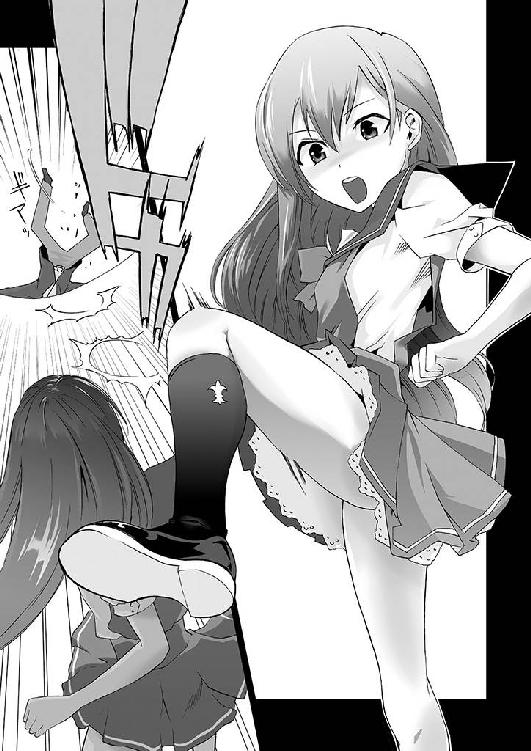

| 桜ノ杜ぶんこ 屍は美少女の香り1 | |
| くしまちみなと | |
| (2012) | |
桜ノ杜ぶんこ
屍は美少女の香り
くしまちみなと
──ボクが自分の特異な趣味に気づいたのは、いつの頃からだろうか......？
最も古いボクの記憶は、少し歳の離れた従姉の葬儀だった。だから、おそらくはそれがボクに自分の趣味・趣向を気づかせてくれた最初の出来事だと思う。
あの時のことを思い出すと、今でも胸が高鳴る。
早世した従姉は、確か一四歳だっただろうか？ その時ボクは八歳だった......。
周りからすすり泣く声が聞こえる。親戚一同が、まだ小さいのにかわいそうだと泣いていた。あまりにも大げさに泣く叔母さんがいたから、幼心にそんなにかわいそうだと思うのなら、代わってやればいいのにと思ったものだった。
その部屋の中央には、白木の棺に納められて死化粧を施された姿がとても美しい従姉が安置されていた。
ボクはその棺桶に歩み寄り、その遺体をのぞき込む。
棺に納められている遺体は、ボクの従姉の真奈香だったもの。彼女は校庭で倒れ、そのまま意識を失い還らぬ人となった。
そばに立って泣いている彼女の母（ボクの伯母さん）は、涙を拭きながら「キョウちゃん、お別れをしてあげてね」とボクに精一杯の優しい声で話しかけてくれたのを、今も覚えている。
ボクは頷きつつも、その彼女から漂うほんのりと香る、甘く芳しい死臭に惹かれて仕方がなかった。
「まなちゃん、きれい......」
「そう。ありがとう......」
とりあえず、上辺だけでも取り繕おうと、そんな小賢しいことを言った覚えがある。
だけど、その言葉に伯母さんは頷き、さらに涙して横を見てしまった。
ボクはその隙にそっと棺に納まった彼女の頬にさわって、その弾力を失いかけているがしっとりとした肌触りを確かめた。
生きている人間にはあり得ない、低反発な感触と体温のない冷たい肌の感触。体温の低い人で感じる冷たい肌触りではなく、生を失った肉体のみが持ち得る冷たさ。それは、腐敗より始まる熱と肉が本来持つ冷たさがギリギリの拮抗を保っている死者の持つ体温。なによりも触れるごとに辺りに漂う甘く香る死の匂い。
生前もかわいいお姉さんだと子ども心に思ったけど、死後、彼女は甘く香る死臭に包まれて初めて美の化身になった気がした......。
この時、ボクは自分に屍体愛好の趣味があることに気がついた......。
数年の月日が流れて一二歳の時。ボクは本気の恋をした。
年の離れた姉に見せられた『バタ●アン』というＢ級ホラー映画の画面の中に彼女はいた。
下半身を無くしながらも『ギブ・ミー・ブレイン』と叫ぶ彼女。
ボクはその血走った目を見た瞬間、恋に落ちた。
そう、初恋の相手はオバ●バ──
彼女以上にボクの脳裏に刻み込まれた女はいない。
最近のＣＧをバリバリ使い込んだ〝ゾンビ〟も悪くはないが、やっぱりオバ●バを超えるいい女はいない。
なんにしても、それ以後、ボクの趣味にネットの世界に落ちている屍体写真収集が加わった。ブラウザーの年齢制限の網の目をかいくぐり、世界中のアングラ・サイトにも平気でアクセスしまくってかき集めた自慢のコレクションは、今現在は圧縮したサイズで二〇テラバイトちょいまで積み重なった。もちろん、今後も増えていく予定だ。
アンデッドこそ至高の存在。究極の生命体〝ゾンビー〟になれば空気も食べ物も必要としない。地球に優しいエコを極限まで突き詰めた環境に優しい存在。人間は必ずそこに到達できる。
ボクはそんな〝ゾンビー〟を将来作り出したい。
そうずっと願っていた......。
【Ⅰ】
いつもと変わらぬ日常──
そこはどこにでもありそうなごく普通の高校の校舎。
強いてあげるなら築四〇年を超えて老朽化が進み耐震基準とかどうなのよ？ とちょっと突っ込みたくなるような結構年数が経っている薄汚れた公立高校の校舎だった。そこに通学する学生たちは別にそんなことを気にした風もなく、ごく普通の一学期後半の日常を過ごしていた。
朝の教室は先生が来るまでのわずかな時間でも情報交換の場としてザワザワしており、いろいろな遊びの話題であふれていた。あるいは、夏休みの話題ももう上がっているのかもしれない。
そんな中での今日一番の話題は、この情報だった。
「ねえ、知ってる？ もう夏だっていうのに、今日から転校生が来るんだって！」
それは確かに盛り上がる絶好の話題だった。
ただでさえ転校生というものは話題になるネタなのに、こんな一学期も終わりそうな時期にあえて転校してくるなんて、それは必ず〝ナニ〟か特別な理由がある！
その理由がなんなのか？
朝の小鳥のごとくクラスの女の子たちはいろいろと想像し、妄想を突っ走らせてチュンチュクチュンチュクと騒いでいた。
そんな騒がしいいつもの朝の風景。話題こそ異なるが校舎のどこからもそんな騒がしい話し声が聞こえていた。しかしその一部が、少しずつ少しずつダーク・サイドの冷気によって静まりかえっていった。
それは昇降口から始まり、廊下、階段......そして廊下とソレに浸食されていくように空気が冷え込み、そして学生たちの声が途絶える。廊下でおしゃべりしていた者は凍りついたようにその場に立ちすくむか、気配を察知して教室に飛び込むか......。シンッと静まりかえった世界は恐怖に怯える視線だけが飛び交う場所となる。
その静まりかえった廊下を、
コツ......コツ......。
と、足音を立てながらゆっくりとした歩調で歩く少年がいた。ブレザーの襟元についた学年章は一年生を示していた。
廊下を飛び交っていた怯えたすべての視線は、学年を問わずにすべてその少年に注がれている。
ゆっくりと歩く彼が通り過ぎた場所からは、安堵のため息がこぼれ落ちた。
ガラッ！
教室の扉が開いた瞬間、転校生の話題に夢中になっていて廊下の異変に気づかずにいた一年三組の教室の学生たちは、さっきまでの話題騒ぎがウソのように一瞬にして静まりかえった。
そう、樺根鏡一郞が扉を開けた瞬間、その存在に気づいた学生たちは怯え、身構えた。そして鏡一郞が自分の席に着くまで、黙ったままその姿を見送る。その様子はいじめによる無視などというモノではなく、どちらかというと暴君の恐怖に怯える哀れな民衆というイメージだった。
そんなクラスメイトたちの視線をまったく気にした様子もなく、鏡一郞は無言のままに窓際最後尾にある席──本来なら教室の一番の特等席で誰もが席替えの時に奪い合いたい席──に向かい、イスを引いて席につくと、鞄から取り出したタブレットＰＣで画像の整理をはじめた。
彼がタブレットＰＣを取り出した直後から、周辺にいた学生たちはその画面を見ることを拒否るかのように足早に見えない位置まで移動していった。
教室にいる誰もが知っていた。
彼のタブレットＰＣには、興味本位で見てはいけない画像が大量に収められているということを......。
一年の初授業の時、彼の隣の席に座っていた学生が、偶然その中身を見てしまったがために登校拒否となり、そしてそのまま転校していった。以来、鏡一郞の席の隣は空席となり、モースト・デンジャラス・ゾーンと呼ばれるようになった。彼の前と斜め前の席は魔のダブル・ポイントと言われるようになった。振り返らなければ安全な席だが、ちょっとでも気を許すと、ギリシア神話に登場するメデューサを見た愚か者となるだろう。そんな噂まで流れ、当事者たちは早く学期が変わって席替えする機会が訪れることを望んでいた。
ある意味、集団無視のようにも思えるそんなクラスの状況だが、鏡一郞は別段気にした様子もなく、むしろそれはうるさく無知なクラスメイトから干渉されない状況であり、彼にとって願ってもない環境と言えた。
そう、特異な趣味を持つ者にとって最も嬉しい環境とは、余計な口出しをしてきて常識論を振りかざす愚か者の干渉がない世界だった。
眠そうな顔をしてあくびひとつし、再びタブレットＰＣの中の画像整理にいそしむ鏡一郞を肩越しに見て、教室の前の方に座っていた学生二人がコソコソと囁き合った。
「あいつ、きっとゾンビの写真とか見て徹夜したんだぜ」
「すっげーゾンビ写真コレクションとか持っているらしいものな。ロリコンを単純所持で逮捕するとか言っているなら、ゾンビ写真の単純所持でも逮捕すべきじゃね？ 今の都知事もバカ過ぎだよな」
「噂じゃあいつ、魔法使えるって話だしなぁ......」
「マジで？ ってか、ガチそれっぽすぎね？ ハリポタも真っ青な死人使いとかって感じでさ、悪役側に登場しそ......」
「おい」
名前すら割り振られない、お約束を守る存在価値しかない二人の脇役学生がクスクスと笑いながら囁きあっていると、お約束的に気配すらも感じさせず、一瞬にして鏡一郞はその学生の背後に立ってそれぞれの肩に手を置いた。
「ほあああああああああああああああああああああああっ！」
振り返って肩に置かれた手が鏡一郞のものと知った二人は、大げさ過ぎるほどに驚き、慌ててその手を払いのけて床に土下座して許しを乞うた。
「ウソだウソ。噂で聞いていただけなんだから勘弁してくれ！」
「わ、悪口はもう言わないから勘弁してくれ！」
二人の必死の叫びにクラス中が固唾をのんで成り行きを見守っていた。むろん、見守るだけでどうにかしようという考えはない。学校に流れる樺根鏡一郞の噂が、クラス中の学生たちを恐怖に駆り立て、触らぬ神に祟りなしという意識を植え付けていた。
そんな鏡一郞の悪口を言ってしまった愚かな二人。果たして、鏡一郞はどんな制裁を加えるのか？ クラスメイトたちの視線が集中する中、鏡一郞は無表情のままメガネのブリッジを人差し指でクイッと押し上げた。
「ボクが集めているのは屍体写真であってゾンビーの写真ではない」
「は......？」
ポカーンとした二人をよそに、鏡一郞は話し続けた。
「そもそもゾンビではなく正式名称はゾンビーだ。ゾンビーという言葉は、元々は〝お化け〟や〝妖怪〟など『視認できる物の怪全般』を指す言葉だが、一般的に認知されたゾンビーとは、ヴードゥー教の司祭であるボコにより生成される奴隷人形のことだ。ボコは屍体が腐り始める前に墓から掘り出し、幾度も屍体の名前を呼び続けることで屍体に魔術をかける。それを食事のいらない二四時間稼働し続ける労働奴隷として農園に売り出していた存在にすぎない。貴様らが認知しているゾンビーとは、一九六八年のジョージ・Ａ・ロメロ監督が撮ったゾンビ映画がベースになっている。この作品でロメロはヴードゥー教のゾンビに吸血鬼の特徴を混ぜ込み、新たな恐怖の対象である『生ける屍体』を作りあげた。これによって誕生した生ける死者を分類する便宜上〝ゾンビ〟と言う。これ以後に生産される〝ゾンビ〟は、ほとんどがこの影響下に置かれた。ゾンビが爆発的に犠牲者を増やす方法としては吸血鬼にヒントを得た〝キズを受けた者はゾンビになる〟という特殊能力であり、同時にゾンビは人を襲うという本来のゾンビーとはかけ離れた能力を得た別物となった。なお、その後のゾンビ作品において〝化学薬品などの影響によるゾンビ化〟という設定が生まれ呪術や魔法的な手法ではなく、科学実験や特殊なウィルス感染、或いは寄生虫によりゾンビ化するという設定がエンターテインメント界では主流になりつつある。同時に、こうした映像・ゲーム作品の全般的なゾンビの特徴として『あまり複雑な動きはできず、動作は緩慢である』『頭部や背骨を破壊されたり、燃やされると活動を停止する』『ゾンビに外傷を負わされることにより、負傷者がゾンビ化する』などが挙げられる。最近ではそうした一連のゾンビに飽きがきたのか、走れるゾンビなどを描き出した意欲作品も登場し、より多くのゾンビ・バリエーションを展開している。しかし、こうした娯楽的なゾンビと本来のゾンビーをまぜこぜにして、屍を辱める行為に対して異議を唱える者も多く、近年のゾンビー研究者たちの間では、屍体ならなんでもかんでもゾンビ呼ばわりする者に対しては、厳しい制裁の鉄槌を下すべきだと唱える者も少なからず存在する......」
一気にまくし立てられた言葉に、教室中が呆然とした空気に包まれた。
「その少なからず存在する中に、このボクも含まれるわけだが......」
鏡一郞は眼鏡をクイッと直して表情を隠し、片方の口の端を釣り上げるような冷笑を浮かべた。
「おわかりか？ ボクが収集しているのは屍体写真であって、その中には溺死体の写真や腐乱死体、轢死体、焼死体、内因死体、縊死体、窒息死体、凍死体など。変わり種で乾燥死体やチャウシェスク元ルーマニア大統領の銃殺死体写真はあるが、ゾンビの写真もゾンビーの写真もない。むしろ本物のゾンビーないしゾンビの写真が手に入るなら、全財産を出してもいいと思っているくらいだ。無知蒙昧ぶりを振りかざして、浅はかな自分の知識だけで勝手なことをいうべきではないと思うのだが、それについてご両人はどう思う？」
「は、はい。そ、そのとおりでございます！ はい！」
「おまえは？」
呆然としていたもう片方の男は、慌ててカクカクと何度も頷いた。
「わ、分かっています。すみません！」
「けっこう......」
抱き合ってカクカクと頷く二人に満足した様子できびすを返すと、鏡一郞はコツコツという足音を立ててゆっくりと自分の席に戻った。そして何事もなかったかのように再びタブレットＰＣに向き合った彼の姿を見て、教室中がホッと胸をなで下ろした。
彼の名は樺根鏡一郞。別名、屍狂一郞。
総合病院を経営する理事長の三男坊であり成績も優秀と、それなりに女性にとってオイシイ男のはずなのだが、自他ともに認める屍体好きという巨大なマイナスポイントが炸裂しまくっていた。いや、屍体好きなどという言葉で表現するのは生やさしいほどのどっぷりと屍体にハマったネクロフィリア（屍体愛好家）だった。
収集している世界各地の屍体写真のデータ量はマニアの間では質・量ともに世界最高峰とまで言われており、屍体愛好家の雑誌である『スプラッシュ・リメイン・フリークス』にインタビュー記事が掲載され、さらにそこに何度か寄稿もしている、世界の屍体愛好家からも注目される屍体マニアだった。
一見するとおとなしいメガネ君なのだが、彼の心には生者に対する気遣い・労りというものが一ナノ・グラムほども存在しなかった。
彼の座右の銘は『生者には死を、屍体には愛を』である。
鏡一郞がタブレットＰＣに向って一通りの写真整理を終えた時、予鈴が鳴り、それに若干遅れる形で教師が現れ、朝のホームルームが始まった。
起立・礼・着席という委員長の号令に従って鏡一郞も挨拶するが、その後は教師の言葉をまったく聞く気もないという様子で頬杖をついて窓の外に目を向けていた。そんな鏡一郞の様子を教師も気にした様子もなく、すぐに黒板に向かって大きく字を書き始める。
灰中圭──
そう黒板に白いチョークで書いた教師は、廊下で待っていた転校生に声をかけた。
「教室に入りなさい。さて、もうじき期末テストが始まりそうな雰囲気のあるこんな時期だが、転校生がきたので紹介しよう。ハイナカ・ケイさんだ」
「灰中圭です。よろしくお願いします」
澄んでいてかわいらしいが、しっかりした声。アイドル事務所のスカウトに必ず声をかけられそうな容姿。ヌルヌルした媚びた様子がまったく見られない、凛とした圭の非の打ち所がない美少女っぷりに、若干一名を除いた教室中の学生が声を失った。
「えーと。灰中さんは......アメリカのシムシテ......」
「シンシナティです。オハイオ州のシンシナティからきました」
それはゲームだという突っ込みもなく静かに訂正した圭に、教室中がオオーッというような感心した声を上げた。若干一名──つまり鏡一郞は声こそ上げなかったものの、圭の自己紹介になにか思いついたように顔を上げた。
──オハイオ州？ 確か......確かあそこには大規模なインディアン墳墓群生地『マウント・ビルダー』があったはずだ......。
その思いつきが頭をよぎった瞬間から、鏡一郞の心の中は、アメリカ・インディアンの聖地に作られたペットセメタリー（動物用墓場）に屍体を置くと、その屍体が甦ってくる映画『ペットセ●タリー』の世界でいっぱいになった。
この屍体が甦るシステムの欠点は、必ずしも生前の魂が戻ってくるわけではないし、呪いであるために邪悪な存在として甦ってしまうという問題点を抱えていることだ。
最初の作品では生前の魂が戻ってきている様子が随所に見られたが、ただのゾンビ映画と酷評された二作目ではそんな様子は見られず、生前の魂以外が入り込んでいるような演出がされていた。
本当のところはどうなのか？
鏡一郞としては一度実験してみたい思いがあった。
作中に登場するインディアンの聖地はミクマク族のもので、マウント・ビルダーの墳墓遺跡は別の部族のもの。そこでも同じことが発生するのか謎だった。しかし、それを考えると余計に試してみたくなる。
──夏休みに行って実験してくるか？
持ち込む屍体も、実験なら別に人間のものでなくていいわけで、その辺にいるであろう野生動物の遺体を使えば（その行動以外）問題ないように思えた。
そんな鏡一郞の楽しい夏休みの旅行計画が脳内で進んでいる中、現実の世界では圭の紹介が終わったところだった。
「まぁ、そういうわけで彼女は帰国子女だ。慣れないこともあると思うので、みんなで助けてやってほしい。それで、灰中さんの席は......」
そう言いかけて教師は言葉に詰まった。
詰まりもする。
このクラスで空いている席は〝ひとつ〟しかない。
そこはモースト・デンジャラス・ゾーンである鏡一郞の隣。転校してきたばかりの圭が、鏡一郞のコレクションを目撃してしまった場合、その翌日から学校に出てこなくなってしまうかもしれない席だった。
しかし、他に空席は......ナイ。
「空いている席は......窓側から二列目の......最後尾だ」
苦渋の選択をする絞り出すような教師の声。
ザワッ！
教室が一斉にざわめいた。
「せ、先生！ そ、そこは......」
思わず声を上げた学生がいた。だが、それ以上の言葉を言わせぬとでも言うかのように、教師は間髪を入れずに声を上げた。
「なら、おまえがそこに行くか？」
思わず声を上げてしまった学生は、しばらくの間パクパクと口を動かしていたが、教師の言葉にハイと答えることができずにガックリと机に突っ伏してしまった。
当の圭はその場所がどんな席なのか知らないから気にした風もなく、机の間の通路を歩いてゆき、指定された鏡一郞の隣の席に座った。
「よろしくお願いします」
という言葉に、「ども」と頭を下げて軽く手を挙げるだけで鏡一郞は返事を済ませた。
しかし、その瞬間、鏡一郞はなにかを感じたように目を上げた。
フワリ......とした甘く香しい匂い。
鼻腔をくすぐるその甘い香りは、日本ではそうそう嗅ぐことのできない禁断の香り。
それは......死臭。
従姉の死で脳髄に深く深く刻まれた、絶対に間違えるはずのない甘く芳しい死臭がどこから流れてくるものなのか？ それを目で探すと、行き着いた先は圭その人だった。
忘れることのできない香り......。
甘い死を意識させる香り。
思わず陶酔しそうになる甘い香りに惑わされてハッとした鏡一郞は、そのままじっと圭を見つめてしまい、その視線に気づいた彼女と目が合った。
「なに......か？」
「いや、別に......」
交わした言葉はそれだけ。圭は挨拶するように小さく笑って教卓の方に目を戻した。
教室の男子たちはなんで鏡一郎の隣にこんなかわいい子が......と心の中で地団駄を踏んだものの、さっきの今でそれを口にするものはいなかった。
魔王に生贄を差し出す村人の気分とはこんなものか？ と、ゲームのキャラクター的な気分も味わっていたが、同時に鏡一郎の隣になるなら心配ないという思いもあった。なぜなら、誰もが鏡一郎が生きている人間に興味を持つはずがないと確信していたから......。
だが、当の鏡一郎はというと、心中穏やかならぬ思いをしていた。
なぜ、微かとはいえども生きている人間から死臭を感じたのか？ 死を間近にした人間からは微かに香る時もあるという。しかし、圭からは死相的なもの感じさせるものはひとつもなかった。
さらに死臭の香水をつけているにしては圭は非常に健康的すぎる外見をしていた。死臭を身にまとうなら、香りだけではなく、デスメイクないし不健康的な肌を作り出すのが屍体愛好家の常識であり死者に対する礼儀だろうと鏡一郞は心の中で毒づいた。
少なくとも圭がネクロフィリア（屍体愛好家）ならそれくらいの常識はわきまえているはずだった。しかし、理解者がいるはずがほとんどないこんな場所で屍体愛好家的な装いをすることは、迫害を受けやすい趣味を持つ者がすることではない。こちらは鉄則的な常識であり、鏡一郞が朝の日課的に行っている屍体写真の整理も、その鉄則をギリギリ超えるか超えないかというラインにあった。
ならば圭は、エセマニアなのか？
鏡一郎は首をひねった。エセマニアなら、もっとそれっぽさをアピールするだろう。実際、現在の日本の年頃の女の子ならば、デスメイクをしてガチにネクロフィリアをアピールしつつも、口ではゴスロリメイクだと言い逃れすることも可能だった。
だが、圭にはその様子がカケラもない。
どう見ても、健康優良女子高生だった。
──一般人なら、なぜ死臭をまとうのか？
可能性があるとすれば、それは葬儀があった直後か、あるいは家が葬儀屋をやっているかだが、アメリカ帰りの帰国子女ではその可能性はあり得ないレベルだった。
それともアメリカのシンシナティはゾンビーがところ狭しと練り歩いているゾンビ映画さながらの世界であり、そこに住んでいるだけで死臭が身体にしみついてしまうほどの街なのか？ もしも、そうだとしたら──
──行ってみたい......。いや、永住したい！
そう思うのが屍体愛好家でゾンビストの人情というものだが、そんな鏡一郎の個人的な嗜好は置いといて、微かにとはいえども鏡一郎にはハッキリと感じるほどの死臭を漂わせる圭は、鏡一郎にとって、その原因が究明されるまでの間は興味の尽きない観察対象となった。
休み時間ともなれば、転校生の席の周りには人だかりができるもの。
少なくとも古今東西のマンガなどではそれがお約束の展開と言えたが、このクラスではほんの少し違っていた。
転校生の圭が自分の席以外の場所に引っ張り出されて人だかりを作っていた。
無論それは鏡一郎と圭の席の間の通路に立つのが嫌な人と、その反対側の通路に立ってから万が一にも鏡一郎のコレクションを覗き見してしまい、正気度チェックを強制的にさせられて狂気に陥るのを避けるためだった。
「なんでみんな、そんなに樺根君を避けるの？」
いじめ問題というのは決して日本だけの問題ではない世界共通の問題である。当然、アメリカもまた差別＆いじめ大国である。
転校生の圭としては、クラスの事情をできるだけ詳しく知っておく必要があった。
アメリカのとある地域では未だに日本を全体主義国家と教えているところも少なからず存在し、日本を紹介するガイドビデオでは、転校して一週間以内に学校のグループに入り損なうと、卒業まで独りぼっちの学生生活を送ることになるなどと教えているものもあるくらいだった。それだけに仲間入りという儀式にも慎重になる。
「別に......仲間ハズレとかってワケじゃないんだけど......」
口ごもるその言い方がどこか気になった。
「あの人......。ちょっと特殊な趣味を持っていて、それで近寄りがたいんだ」
「特殊っていうか、キモイっていうか......。要するに、屍体写真集めが趣味なの」
「屍体写真......」
圭の顔が一気に青ざめた。
それは誰もがとるごく普通の反応だった。
「それもかなりスッゴイのらしくってさ。灰中さんの席に前に座ってた子は、その写真を見て登校拒否になってそのまま転校しちゃったんだ」
「へぇー......」
圭は青ざめつつも半信半疑の様子だったが、周りにいる全員が真剣な顔をしているので余計になんと言っていいのか分からなくなった。
「本気で......言ってるの？」
「当たり前でしょ!! こんなの冗談の笑い話にしたくてもできないよ！」
「まぁまぁ。転校生なら当たり前に取る態度だって」
「そうだね。だからね、この教室には守らないと行けないルールがあるの。今から教えることは灰中さんの命を守るためのものだから、ちゃんと覚えてね」
「は、はぁ......」
クラスメイトたちは口々に、クラスメイトが作った一年三組ルールを口にした。
鏡一郎の方を向いてはいけない。
鏡一郞と目を合わせてもいけない。
鏡一郞に触れた場合は、塩を使って洗わなければならない。そのための清めの塩は必ず持参してくること。
まるでそれらの約束を破ったら必ず災いが起きるとでもいうように、鏡一郎に関するクラスの決めごとを教えていった。こうした行動が外国人には全体主義的行動と見えるのかもしれないが、この子たちは生命に関わる問題だから必死になっているだけだった。
その必死さは圭を退かせるほどのものだったが、同時にそこまで必死に恐怖を訴えかけさせるものはなんなのかと興味を抱かせもした。
──樺根君って......いったいどんな子なの？
もうひとつ。圭には問題があった。
すでに圭は鏡一郞とは目を合わせてしまっていたことだ。
ただの学生間のバカな噂だろう。そう圭も分かってはいたが、おかしなことを話して自分が仲間ハズレにされてしまうわけにはいかない。だから圭はそれについては黙っておくことにした。
なんにしても鏡一郞は圭にとっていろいろな意味で気になる存在だった。
そして噂の鏡一郎も、微かながらも死臭を感じさせるミステリアスな美少女である灰中圭のことが気になって仕方なかった。
クラスメイトに引っ張られていく圭の姿を見ても、その動きのどこにもゾンビーらしきぎこちなさはない。よもやゾンビかとも疑ったが、今のところその特徴たる食人行動に出る様子もなかった。鏡一郞としては、ゾンビによる惨劇がいつはじまるかとワクワクしていたところがあるのだが......。
また、仮に圭がゾンビだとしてその食人衝動を抑えきれるものなのか？ 抑えられるならどこまで抑えきれるのか？ そうした学術的な疑問が次々鏡一郞の頭の中にわいてくる。
そんな妄想じみた思考の裏側では、同時に圭がただの人間なのではないか？ という疑問も浮かび上がっていた。
──ボクの気のせいか？
そう自分の鼻を疑ってみたが、あの葬儀の時に従姉の遺体から感じた死臭と同じ香りを間違えるはずはない。たとえかなりの年月がたっていようとも、その美臭を忘れたことは一度としてなかった。
ちなみに美臭というがそれは屍体愛好家にとってだけで、普通の人間には耐え難い臭いだと言われている。よくたとえに出される卵が腐った臭い──タンパク質が腐った臭いとはまた異なる独特の臭いであり、肉がすえた臭いと卵が腐った臭い、さらに牛乳が腐った臭いを混じらせれば腐乱時の死臭と近いものを作り出せるかもしれない。食用に処理された肉だけで死臭を作り出せないのは、それなりの処理がされてしまうためと、内臓が抜かれてその内部に蓄積されている微生物がいなくなってしまうためだという。
しかし、屍体から漂う臭いに共通して言われることだが、最初の死臭は熟し切った果物が腐り始めるギリギリの甘く酸味を帯びた臭いがするという......。
なんにしても、常人は生物的感覚から忌避する香りであり、それを身にまといたがるのは特殊な趣味の持ち主としか言いようがない。
──たとえば昼間は人間のフリをしているが、夜になると隠された本性が表れて人を襲うようになるとか？
鏡一郎はそんな二重人格じみた、ある種の変身能力まで想像していた。
しかし、それも仕方ないこと。もしも圭がゾンビないしヴァンパイアといった本物のアンデッド（不死者、甦り人）だった場合、伝承の中や映画といったものの中に存在してきたアンデッドの能力のすべてを当てはめて考える必要がある。特に世界各地の民族伝承には、断片的に正しいアンデッドの姿を伝えている可能性があった。
そもそも、アンデッドは陽光に当たったら焼け死ぬという説を鏡一郞は頭から信じていなかった。
生前陽光に当たりまくっていて問題がない者が、アンデッドになってなぜ問題があるのかという理由が不鮮明だからだ。陽に当たると腐敗しやすくなるからなどの理由なら、なんとなく分かる気もするが、腐乱に関してはそれを留める手段を持たない限り昼夜かまわずに進行するわけで、それが理由になるとも鏡一郞には思えなかった。
実際のところ圭は昼日中に出歩いているわけで、アンデッドだったとしてもその陽光苦手説からは外れる存在だった。
そういう考え方からいうと、朝方に鏡一郞が二人のクラスメイトをやり込めたゾンビーの伝承ですら、本当のところ正しいアンデッドの姿なのかどうかも分からない。だからこそ、鏡一郞はこの千載一遇のチャンスを逃すことなくアンデッドの伝説を片端から確認したかった。
──しかし、ヘタを打って逃げたり姿を隠されたりしても困る。
ここは慎重に観察を続け、可能なら捕獲して解剖ないし実験を行い、その死者の甦りシステム解明をして、己の手でもアンデッドを作り出せるようにならなければならない。
そんな使命感らしきものが鏡一郞の心の中で静かに燃えていた。
しかし、実際のところどうやって確認したものか？
そのことが鏡一郎の悩みのポイントだった。
──羊の脳みそにすべきか？ それともどうにかして類人猿の脳みそを入手すべきか？
訂正。鏡一郎の悩みのポイントは常人の思考のナナメ上を行っていた。
どうやってではなく、ナニを使って確認したものかということで、鏡一郎は頭を悩ませていた。
──やはり、入手しやすさを優先していくべきだろう。上野にするか多摩にするか......。
羊よりも人間に近い類人猿にすべきだろうと結論を出し、入手方法を考えていたちょうどその時、圭はクラスメイトたちから鏡一郎の説明を受けており、会話の流れから彼女は鏡一郎のことをチラチラと見ていた。
圭のことを観察しながらエサとする脳みそについて悩み続けていた鏡一郞にも、彼女が自分のことをチラ見しているのが見えた。しかし、その様子は鏡一郎の目には別の意図があるように映った。
──あの女、こっちの様子を窺っている......？
鏡一郎は、他人から自分のことを観察されるような覚えはなかった。
というか、教室で飛び交っている自分に関する噂など気にもしていなかったために、そうやって見られる可能性があることにまったく気づいていなかった。
まして圭は、一瞬、目が合うや慌てた様子で鏡一郎から目をそらした。
そんな素振りを見せつけられてしまえば、こっそりと観察していた鏡一郎としても、もしかして自分が観察していることに気づかれたかと勘違いしても仕方がないことだし、同時に圭がこっちのことを観察しているようにも感じられた。
──これは、急いだ方がよさそうだな......。
なんとか動物園に侵入し、こっそりとチンパンジーないし他の類人猿の脳みそを奪ってくるプランをメインに考えていただけに、妥協で確認作業のプランを変更することは悔やまれてならなかった。
しかし、鏡一郎が観察していることを気づかれた可能性があるなら、優先順位は素早さになる。
さっさと圭がアンデッドなのかを確認し、それが判明次第、彼女を研究対象として拘束し、しかるべき処置を取った上で食性の嗜好を確認すればいい。
そう結論を出した鏡一郎は、羊肉を取り扱う肉屋の検索に入った。
【Ⅱ】
翌朝、圭の机の上には上質の羊の脳みそが置かれていた。
紙皿の上に形をきれいに保ったまま鎮座した脳みそ......。
もちろんそれは深夜にセキュリティの網の目をかいくぐり、スパイ映画さながらに教室に侵入した鏡一郎の手で置かれたモノだ。
さらに自分が置いたと悟られないために、昨日、鏡一郎は大勢のクラスメイトが残っている間にさっさと帰り、いつもどおり始業の予鈴が鳴るギリギリに登校した。その自分の目が届かない時間の様子を逃さないように、超小型の隠しカメラと高感度マイクを各所に設置して、あらゆる角度から圭の様子を確認できるようにしてあった。
しかし──
登校した鏡一郎は教室に入るなりその実験の失敗を、教室の雰囲気で感じとった。
実験が成功していたなら、少なくとも本性を表した圭が大暴れして教室は阿鼻叫喚の世界になっているはずだった。できることなら、クラスメイトの二、三人くらいをムッシャムッシャしてくれる捕食シーンもカメラに撮れていたなら......と淡い期待を抱いてもいたのだが......。
圭が脳みそに飛びつき貪り喰っていた様子はまったくない。
彼女の席の周囲はクラスメイトたちが遠巻きにするようにして集まっていた。その人の輪の中に圭もいた。
──脳みそを見ても本性を表さないか......。くそっ、手強いな。
あくまでも人間の素振りを見せている圭に鏡一郎は苛立ちを隠せなかった。それと同時に、羊の脳みそで妥協してしまった自分の愚かさにも苛立ちを感じていた。
──妥協せずに、その辺で通り魔でもして人間の脳みそを獲得していれば、もしかしたら本性を表したのではないか？ 改めてその方法をとったとしても、すでに警戒しているだろうからいい結果が出るはずもない。
そんな人の斜め上を行く悔やみ方を鏡一郎はしていた。
それにしても、一般の学生たちには羊のものとはいえども生の脳みそは衝撃を与えるものだったのだろう。誰一人それに触れようともせず、ただヒソヒソと話しながら、それが置かれた圭の机の周りを取り囲んでいるだけだった。
「ゴホン！ 邪魔だ。通してくれないか？」
一斉に学生たちが動き、モーゼの海渡りよろしく学生たちは道をあけた。
そして鏡一郎が圭の机の上にある脳みそを見て、どんな反応を見せるか期待しているのがヒシヒシと伝わってきた。
普段の鏡一郎なら、どう答えるか？
学生たちの反応に対する答え方はすでにシミュレート済みだった。
「誰のだ？」
自分の机に鞄を置いてから、鏡一郎は興味津々という調子で圭の机の上の脳みそを指さした。しかし、当然のことながら、その脳みそを自分のだと主張する者は誰一人いない。それは机の主たる圭も同様だった。むしろ教室にいるクラスメイトたちは、その脳みそは鏡一郞のものだろう？ と言いたかったに違いない。
「朝から机の上に脳みそを飾るとは、いい趣味をしていると思ったんだが......」
鏡一郎が学生たちを見回すと、その視線に合わせて誰もが首を振るなり手を振るなりして否定する。
この手のことにかんしては最も怪しいはずの鏡一郎が逆に興味津々という様子で詰問してくるのだから、この状況で学生たちの疑いの目が鏡一郎に向くことは考えられない。
唯一、被害者たる圭だけが疑い深い眼差しで鏡一郎を見ていたのが印象的だった。
「灰中さん......だったな。キミのか？」
「あたしがそんなもの持ってるわけないじゃない。仮にあたしのものだとしたら、そんな所に放置してみんなを気味悪がらせるわけないでしょ」
口ごもるなりして戸惑いなどを見せてくれればという期待があったが、圭の表情に変化はなく、むしろそのまなざしには挑発するようなそぶりさえ鏡一郞には感じられた（あくまでも、鏡一郞の主観だが）。

「何をしている！ 全員席につけ！ 予鈴は鳴ってるぞ」
そんな担任の声は聞こえたが誰もが席につける状況じゃなかった。
そんなクラスの雰囲気を察した担任は、面倒くさそうな顔をしながら学生の輪のそばまできて、その頭越しに圭の机の上に置かれた脳みそを見つけて思わず口元を押さえた。
「か、樺根！ それはお前のか!?」
誰もが言いたいことを担任は口にしたが、鏡一郎は平然とした態度で首を横に振った。
「ボクのものなら学校なんかに持ってきませんよ」
なんだか妙にクラスメイトたちが納得できる返事だった。
あの屍狂一郎なら大切な屍体コレクションを学校なんかに持ってきて、生のまま他人の机の上に置いておくはすはない、と──
「サイズと形状から考えて、〝残念ながら〟人のモノではないようです」
「そ、そうか......」
自分で持ってきたものだから人の脳みそではないことなど分かっていたが、そこを敢えていうことがクラスメイトが理解している自分らしいと踏んでの演技だった。
「あ......ええとぉ......。ああ、そうだ、樺根。す、済まないがソレを片づけてやってはくれないか？ ゴミ捨て場に持って行ってくれればいい」
「このままですか？ 紙袋か何かに入れた方がよくないですか？」
「ああ、そうだな。その辺は任せる」
鏡一郎は担任の指示に従って圭の机の上の脳みそを片づけた。もっとも、紙袋はなかったので適当なプリントに包んでコンビニの白いビニール袋に入れての廃棄となった。
すでにここに放置して八時間以上経過しているので、軽い腐敗臭が脳みそから漂っていた。それはやはり、人間の死臭とは異なる獣臭さを感じる。
──やはり、人のモノとは異なるから惹かれなかったか......。
脳みその入った袋をブラブラさせながら、鏡一郎はそう反省した。
改めて灰中圭について鏡一郞は思考を巡らせてみた。
今さっきの圭の反応を見ても、クラスへの溶け込み具合を考えても、灰中圭は人間らしすぎた。
人間──という価値基準で考えると、圭は美しい方なのだろうと推測できる。少なくともクラス男どもの反応は、総じて圭に好意的だった。もっとも鏡一郞の基準では、もう少ししっとりとして弾力を失いつつある死後そこそこたっている肌が白く死化粧をされているなら美しいと思えて、圭のあまりにも人間として健康的な肌の色をしている部分が非常に気に入らなかった。
──つまり、あの女は人間なのか!?
それは重大過ぎる問題だった。鏡一郞の推測を根底から揺るがせる大問題だ。
しかし圭が人間であったとしたなら、なぜ昨日、鏡一郞が死臭を感じたのかが気になるところだった。
もしも、わざと死臭を垂れ流しているのだとしたら、その理由はなにか？
死臭に敏感な屍体愛好家を誘い出すためにそんなことをしている可能性はないのか？
つまり──
──灰中圭は、将来、ボクがゾンビーを作り出して屍との蜜月関係を築くのを阻止するために、キリスト教徒どもが送り込んできたエクソシストのような刺客なのか？
オハイオ州はキリスト教が全人口の八二％を占める一大キリスト教地域。
そんな場所から、今、この時期に転校してくるというのはあまりにも不自然ではないだろうかと鏡一郞は勘ぐりはじめた。確かに、時期的にもおかしいとは言えた。アメリカの学校では九月から新年度となるので、それ前に転校してきたということも分からなくはないが、それなら九月に合わせて入学してくればいいだけの話にも思える。
圭が刺客だった場合、そんな（鏡一郞にとって）邪な陰謀を企む教団の手先などたたきつぶすしかない。そのためにも圭の正体を完全に暴く必要があった。
脳みそを見て尻尾を出さないというのであれば、別件で尻尾を出している瞬間を見つけるしかなかった。
ここはありったけの能力を発揮して圭を調べ上げるしかない。まずは圭の観察を強化すること。そこから始めるしかなかった。
翌日から鏡一郞は圭の観察に乗り出した。
ちなみに羊の脳みそを見せた時、教室にしかけた隠しカメラなどから得られたものは、あまりにも人間的な反応をする圭の姿のみだった。実際、最初に教室に入ってきたクラスメイトがおり、そいつが圭の机の上の脳みそに気づき騒ぎ始める。その後、何人かが教室に入ってきた後に圭がカメラの中に現れ、驚きの表情を見せた。
あまりにも生きている人間くさい反応。
一瞬でも好奇の光を目に宿すとかないのかと、鏡一郞は画像を最大に拡大してその表情の細部に至るまで確認しまくったが、それとおぼしき表情は確認できなかった。
つまり、完璧に『脳みそ見ちゃった美味そう』計画は失敗したことになる。
──バタ●アンのギブミー・ブレインは、しょせん創作だということか......。
もっともその反応を確認したことにより、圭が生きている人間ではないか？ という問題が余計に浮上してきた。
さらに映像を見ているだけでは分からないことだったが、灰中圭は屍体にしては表情がありすぎた。クラスメイトの女の子たちと話をしている時などコロコロとよく笑う。
弛緩している、あるいは硬直している筋肉を無理矢理動かして笑顔を作って見せているようなぎこちなさがカケラもない。
世の中の映画作品には走るゾンビも存在しているので、体育の授業を元気よく行う様を見ても、別段おかしいとは思えない。しかし表情という部分に関しては、やはり人間らしさの基本に思える部分であり、そこが欠落していることからアンデッドだと見破られるパターンが数多くある。
ヴァンパイアは鏡に映らないという伝承があるのでその検証をしようとした矢先、圭本人が普通に鏡を使って髪をとかしているのを見かけて、ただの伝承ということに落ち着いた。
塩はどうだろうかとこっそりと圭の机の周辺にばらまいてみたが、彼女は普通にその上で勉強しており、別段効果があるようには思えなかった。あるいは、塩でラインでも描けば効果が出るのかもしれないが、そんなことをすれば明らかに怪しく見られて圭に悟られてしまう。
思い切って鏡一郞はストーキングを二度試みたが、なぜか途中でまかれてしまい、彼女の家を突き止めることができなかった。
仕方なく事務局のサーバに侵入し彼女の個人情報を仕入れ、そこに書かれていた住所に行ってみた。しかし、学校に報告されていた住所にあったのは築六〇年以上たっていそうな木造アパートであり、どうみても現在は人が住んでいるようには思えない物件だった。
「つまり、ココはダミーだということか......」
自分の煩悩──いや、探求心のためならスパイアクション映画の主人公顔負けの行動を取ることができる鏡一郞の追跡を二度もかわす素早さを持つ女。学校に届けてある住所は明らかにダミーであることを合わせて考えると、そこから導き出される結論はひとつしかなかった。
「やはりボクを殺しにきた......ないし、ボクを調べにきたヴァチカンの刺客か？」
ゾンビーがリアルに存在すると仮定したなら、それを駆逐殲滅する抹殺機関が存在しないわけがない。事実、ヴァチカンはエクソシストの存在を公的に認めているし、その大学があることも公にしている。
「問題は......女だということか......」
そう、エクソシストになるためには厳しい規定が存在している。
カソリック司祭以上の位階持ちであり、精神的に安定した〝中年以上の男性〟でなければならない......と。若い神父や若いシスターがエクソシストというのは、フィクションの世界でしか存在しないことだった。もちろん、エクソシストの助手としてシスターが同行している可能性も十分あるのだろうが......。
鏡一郞が感じたあの死臭が、もしもエクソシストの罠だったとしたら？
それは鏡一郞が屍体愛好者として行動を起こすことを前提とした誘いをかけたものであり、その場合なら鏡一郞がそういう人間だと分かっていて仕掛けてきているから、すでに行動を起こした鏡一郞になんらかの接触をしてくるはずだった。
しかし今のところその動きはまったくない。
あるいは今、着々と準備を整えているところなのだろうか？
──いや、待て結論を急ぐな。なにも、エクソシストがボクの命を狙っていると決定したわけじゃない......。
そう、相変わらず圭がアンデッドであるという可能性は否定できないし、アンデッドのことを探ろうとしている鏡一郞のことをアンデッド側が殺そうと謀っている可能性だってある。
──どっちも俺を殺す可能性だけではあるまい......。
まず気持ちを落ち着かせた鏡一郞は、圭の立ち位置の分類を自分を殺しにきた可能性側と、まったくそのつもりがない側に分けて考えることにした。
鏡一郞を殺しにきた可能性側では、さっきも取り上げたエクソシスト側とアンデッド側から派遣された暗殺者という二パターン。
鏡一郞を殺すつもりでない側では、ただの屍体愛好家。人間界に潜み生活するつもりでやってきたアンデッド。そして偶然死臭がついてしまったただの人間の合計三パターン。
──さて......そのうちのドレだ？
それを確認するためにも、出会った時に感じた死臭が本当に彼女の身体から放たれているものだったのか？ それを再確認する必要があった。
仮に死臭が付香的につけられたものであるなら、すでにその香りはかなり薄れているか、あるいはしなくなっているはずだった。毎日、普通の香水のように死臭香水を体中に振りかけているならともかく、あの時だけつけていたのだとしたら、もうすでに臭いもしないだろう。
考えてみるとあの時ほど圭から死臭を感じなくなってきていた。
本当にあの死臭が圭のものなのか？ 再確認する方法としては、彼女の内分泌物を確認して調べ上げることが一番だった。体表面はうまく隠し通しているかもしれないが、内側は腐っているという可能性が十分に考えられるし、なによりも内分泌物を調べることにより、細胞などの状態を確認できるかもしれない。
しかし、手術をせずに人間の内分泌物を確認できる場所は限られている。
耳孔、眼孔、口腔、鼻腔、乳頭、尿道、肛門。それに女性なら膣腔がある。それらを調べれば表面上は腐っていなくとも、内部は腐ったゾンビーないしアンデッドである可能性を探ることができる......のではないか？
しかし、惜しいかな耳口目鼻に関しては本人の許可がない限り現状では調べることはできない。いや、残された部分も基本的に調べさせてほしいと許可を求めれば、よくて変態扱い。悪くて警察に突き出されてしまう。もちろん、発生確率の高さは後者がダントツの高さだろう。
では次点で調べることができそうなものは、死臭や内分泌物がしみつきやすいモノを、本人に黙って拝借するなどして調べるということになる。
そして、最も死臭がしみつきやすいモノとは──
──下着か......。
マジメな顔をして、鏡一郎はそう結論を下した。
身体に最も密着し、かつ四六時中着用するものをあげるなら、確かにその結論は正しいのだが......。
いいのか？ 鏡一郎。（今までの行動も犯罪以外の何物でもない気がするが......）それは明らかに犯罪を通り越した変態の行為だぞ！
──学術的探求のためにはやむを得ない。
仮に犯罪者として捕まったとしても、彼はあくまで学術的意図でやったと主張する気でいた。実際、簡単に調べられる期間もあとわずかになってきていた。
もうじき夏休みに入ってしまう。そうなると、圭の自宅を知らない鏡一郞には手が出せなくなってしまう。スケジュールを確認すると十分な準備をする時間はなく、すぐに行動に移るしかなかった。
学校という場所のこの季節に限り、本人の許可なくそれを調べることができる時間がわずかながら存在した。
それは、体育の水泳の授業時間。
人生において人間が下着を身体からはずす時間など限られており、その限られた時間でなおかつ他人の手で確認しやすい時こそが、この授業で行われる水泳の時間だった。
もちろん、接触に失敗すれば社会的制裁を受けること間違いナシの脅威的危険と背中合わせのミッションとなる。
──しかし、やらねばならない。
この千載一遇のチャンスは、もう、今日しか残されていなかった。
具合が悪いと言って、鏡一郎はその日の体育の授業をサボって保健室の住人となった。もちろん露骨に怪しまれないために、前の時間からサボったことはいうまでもない。
そして、こっそりと保健室を抜け出した鏡一郎は、プールそばにある体育用の女子更衣室に向かった。
基本的にここの女子更衣室は、担当体育教師がカギをかけてしまうので指定時間外に出入りすることは不可能になっている。しかし、学術的探求心の前に不可能の文字はない。
鏡一郎は用意しておいたピッキングの道具を使い、ほんの少しの間ゴリゴリやっただけでドアのカギをはずした。
周囲に人影はなく、プールからは授業の声が聞こえていた。
サッとドアを開けて、鏡一郎は身体を滑り込ませるように更衣室に忍び込んだ。
──女臭いな......。
女子更衣室特有の匂いが更衣室には漂っていた。それは女性の体臭以外に香水や制汗剤などの匂いが入り混じった匂い。男子更衣室にあるような汗臭い汚臭とは異なるものであり男としてはドギマギしてしまう匂いだが、鏡一郎にとっては邪魔以外の何物でもない臭いだった。
「くそっ。こんなに余計な臭いが立ちこめていたら、肝心な死臭が消えてしまう......」
女子更衣室の明かりは当然消されており、頼りになるものは壁の上部につけられた細い曇りガラスの窓から差し込む薄明かりのみ。
鏡一郎は自分の嗅覚を信じて精神統一をはかった。
雑音ならぬ雑臭が嗅覚神経を撫で回して邪魔をする。さらに精神統一をはかったことにより、特に甘く香りの強い香水が飛び抜けて嗅覚を突いてくるように感じて、なにもかもを強引に包み隠そうとする。
──くそっ......。余計なものをつけて邪魔する馬鹿者は、二目と見られない死骸になればいいのに......。
そう思ったものの腐乱屍体愛好家もいることを思い出し、鏡一郎は改めて白骨屍体になればいいと呪い直した。白骨死体となればもう屍体愛好家の愛も得られない（さらにコアな白骨マニアはいるだろうが......）。
やがて、なんとか毒のような強く甘い香りを嗅覚から排除した鏡一郎は、薄く香る死臭を探した。
排水管の奥から漂ってくるわずかな下水道の汚水の臭いの方がよほどハッキリと感じとれるほどの微かさだったが、鏡一郎は微かに漂う死臭をつかんだ。
その死臭を感じた方向に数歩進む。
目を開けると、開けっ放しのバッグから乱雑にはみ出した制服がはいった扉のないロッカーボックスが飛び込んできた。
──なんてだらしない女だ。これだから生きているヤツは......。
一瞬、きちんと整理してやろうかと鏡一郎は思ったが、今はそんな時じゃないと思い直してその隣のロッカーに目を移した。
そこにはきちんとジッパーが閉じられた学校指定のナイロン・バッグが置いてある。
クン......。
鏡一郎の鼻が動いた。
バッグのジッパーの隙間から微かに漂ってくる香しき死臭......。
爛熟した果実臭にも似た微かな香りがそこから漂い出てきていた。
奇しくもバッグには〝柔らか屍体人形ゾンビ君〟という、最近アキバで密かに流行りはじめているコミカルにデザインされたゾンビのマスコット人形がぶら下がっており、そのゾンビ君は〝ＫＥＩ〟というネームプレートを抱えていた。
「よくぞ教えてくれた......。同志よ」
鏡一郎は小さく声に出してゾンビ君人形に感謝した。
──それにしても......。
よくよく見ると圭のバッグにはゾンビ君以外にも、〝吊され屍体首吊君〟や〝屍体乱造腐乱君〟と言った、ゾンビ君のお友達のマスコットがあちこちにぶら下がっていた。
──やっぱり、こいつはただの屍体愛好家じゃないのか？
この屍体マスコットの数を見るとそんな気がしてきてしまう。
ゾンビ君たちは、可愛らしくコミカルにデフォルメ化されているとはいえども、ひと昔前にコアなマニアに流行った胎児顔のマスコットクラスのマニアックさ加減であり、普通の女子高生が知っているようなものではない。
そんなマイナー屍体人形を好んで身につける圭。それを考えると、鏡一郎でなくとも圭は屍体愛好家、あるいはただのゾンビ・マニアなんじゃないかと勘ぐってもおかしくない。
実際、アメリカでは死臭風香水だって販売しており、多くの屍体愛好家やゾンビスト、ゾンビ・マニアたちを熱狂させている（ちなみに、鏡一郎的分類でいうと、ゾンビやゾンビーを熱狂的に愛する者がゾンビストであり、それ以外はゾンビ・マニアとなる）。
そんな屍体愛好家先進国（日本は火葬国なので、屍体愛好に関しては後進国）たるアメリカからきた圭が、屍体愛好家である可能性は十分に考えられる。実際、圭との遭遇当初、鏡一郎だって圭のことをただの──あるいはエセ屍体愛好家ではないかと疑っていた。
──果たしてただの屍体愛好家か、それともホンモノのアンデッドか？ あるいはヴァチカンからの刺客か？
鏡一郎は胸の高鳴りを抑えながら、バッグの閉じられたジッパーに手を伸ばし、ゆっくりと開いた。
ジジジ......ジィィィィッ......。
ジッパー特有の音とともにバッグから漂い出た死臭......。
その香りを嗅いだだけで鏡一郎は確信した。
──この死臭............天然モノだ。
鏡一郎の記憶にくっきりと刻まれた美しい従姉の死臭。その記憶と寸分違わぬ死臭は紛れもなく天然モノであり、合成的に作られた死臭香水の臭いとは雲泥の差がある。
さらに鏡一郞は実家が総合病院であることをいいことに、気に入った屍体があれば研究のために霊安室に忍び込んで様々なものを収集しているが、その収集物の中に当然のごとく死臭と霊安室の空気も存在していた。しかし、それには病院臭というかエタノールやその他薬品などの雑臭が混じっており〝上質な死臭〟とは言い難かった。
しかしバッグから漂い出るものは、そんなものとは異なる混じりけのない上質な爛熟果実臭に近い甘くすえた死臭であり、死後二、三時間前後の屍体から感じるようなフレッシュ（？）さがあった（これは鏡一郞嗅覚に基づく感想であり、個人により異なる感想を抱く場合があります）。
こんな香水や制汗剤の悪臭が立ちこめているような場所ではなく、無臭化された無菌室に持ち込んで臭いの収集を行いたい欲求に駆られてしまう。
──いや、まだ結論を出すのは早すぎる！
圭が重度の屍体愛好家であり、日々素敵な屍体を抱きしめて暮らしている可能性は十分考えられる。アメリカ帰りということもあり、もしかしたら特殊な屍体入手ルート（当然密輸）が存在するのかもしれない。
──そうだとしたら......。入手ルートを教えてはもらえないだろうか......。いやいやいやいや......。今は雑念を捨てろ！
軽く頭を振って雑念を払った鏡一郎は、手始めにバッグから圭のブラウスを抜き出して広げ、その匂いを嗅いでみる。
クンクン......。
微かといはいえども死臭が立ちこめるバッグに詰められていただけに、ブラウスからもさらに微かな死臭が感じられた。それだけに余計に迷いが生じてくる。
仕方なく鏡一郎はさらにバッグの中を探り、奥の方にしまわれていたブラとショーツを引っ張り出した。
右手にブラを持ち、左手にショーツを持つ。まさにその姿は下着フェチな変態そのものだが、本人は至ってマジメな顔をしてそれぞれ手に持ったモノを見比べていた。
数分悩んだ後、おもむろに右手のブラを顔に近づけ、そのカップに顔をうずめるようにして微かに漂う死臭を嗅ぎはじめた。
クンクン......。
「ん......？」
クンカクンカ......。
「ンんんーっ!?」
ガバッと勢いよくカップから顔を上げた鏡一郎は、キッと左手のショーツを睨みつけるや飛び込むようにそこに顔をうずめた。
フンフンフン......と匂いを嗅ぐ鼻音がだけが聞こえ、どう見ても下着フェチが盗んだ下着に顔をうずめてエクスタシってるようにしか見えない。
どれくらいそんな光景が続いただろうか......。
「やはり......どう考えても天然死臭としか思えない。この臭いから想像するに、死後二、三時間から長くても六、七時間といったところに思えるが......」
甘い死臭に陶酔しているだけかと思いきや、ガバッと顔を上げた鏡一郎はついにひとつの結論に達した。
つまり、灰中圭はゾンビーないしアンデッドである、と──
「やはり......死臭ディスかー？」
「なっ......ああっ!?」
いつの間にそこにいたのか？ 鏡一郎のすぐ隣に、黒い詰め襟の学生服のような服を着た五十代くらいのヨーロッパ系の外国人が立ち、鏡一郎が右手に持った圭のブラに長い鼻を近づけてクンカクンカと匂いを嗅いでいた！
鏡一郎の感覚的には、その外国人の表情、まさに『トレビアーン！ ムフッ！』という感じだった！
「Ｏｈ！ ヤッパリ私の勘は当たっていたね。あのム......ゴフッ!!」
外国人の言葉はそれ以上続かなかった。
鏡一郎の渾身の力を込めた拳がその腹部に叩き込まれ、思わず前屈みになったその顔にさらに左フックが炸裂する。
ゲヒョンともブヒョンともつかない──強いて上げるなら、巨大なウシガエルかパンパンにふくれあがった水風船がアスファルトに叩きつけられるような音を立てて男の身体は吹っ飛んだ。
「アウチッ!! プリーズ！ プリーズウェイト！ 待て、待つよ!! 日本人なら、話し合いに応じよう!!」
「聞く耳持たん。見られたからには機密保持のために死ね」
鏡一郎はユラリとした柔らかい足取りで尻餅をついた男に近づくや、ブンッという風切り音とともに再び拳を放った。しかし、今度は外国人の長い鼻先を掠めただけで避けられた。
──避けた......だと？
鏡一郎は我が目を疑った。それもそのはず、その拳には生者に対する遠慮もなにもなく、鏡一郎が生きている人間に対して放つ攻撃は肉体が持つ力が極限まで発揮される。
一般的に人間の筋力は、本来持つ力の二〇％～三〇％に抑えられていると言われる。その理由として、限界まで力を発揮した場合はその代償として己の肉体にもダメージを与える可能性があるためだとされる。さらに、暴力を振るう場合などは相手を傷つける恐れが無意識にその力を削ぐためだと言われている。
しかし、鏡一郎には生者に対する遠慮というものが根本からなく、その価値観は生者である己にも適用される。よってその脳は〝ケガしちゃうかもしれないからホドホドにね〟という気配りメッセージを鏡一郎の身体に放つことはない。その結果、〝生者に対してのみ〟鏡一郎は凶悪なまでの力を発揮できた。
その鏡一郎の攻撃をかわした。
「おっさん。何者だ......？」
「わ、私は......か、神の......だ、代行者である！」
「世迷いごとをっ！」
改めて放った拳も間一髪の差で外国人はかわした。彼も鏡一郎に話は通じないと思ったのだろう。もはや話し合おうという気も失せたのか、そのままの勢いで振り返ることなく更衣室から逃げ出した。
「くそっ......逃がすか！」
追いかけるべく鏡一郎も更衣室から飛び出したが、わずかに出遅れたこともあり、すでにその姿ははるか遠くにあった。
「ちっ......」
「何事ですかっ!?」
騒ぎを聞きつけて飛んできた、水泳の指導をしていた体育女教師が鏡一郎と、その視線の先にある逃げ去る外国人の男の背中を見比べた。
「下着泥棒のようです」
「えええっ!?」
困惑した体育女教師に、鏡一郎は手にしていた圭の下着を差し出した。
「出会い頭だったので、取り戻せたのはコレだけでした。他は分かりませんので、皆さんに調べてもらってください」
「え......あ、はい......」
「では、失礼します」
女教師はポカーンとした表情で踵を返した鏡一郎の背中を見送っていたが、我に返ると慌ててプールにいる女の子たちに声をかけた。
「更衣室に泥棒が入ったようです！ 皆さんの貴重品がなくなっていないか、確認してください！」
そんな言葉を背中で聞き流しながら鏡一郎がチラリとプールの方に目をやると、慌てた様子でプールから駆け出してくるスク水姿の女の子たちの中に圭の姿をみつけた。クラスメイトたち同様にスイムキャップをかぶってスクール水着を着ているその姿は、どこにでもいる普通の女子高生にしか見えない。
しかし、その実態はナニか？
屍体愛好家か重度のゾンビストか？ それともアンデッド......？
「屍の香りを漂わせる......灰中圭......」
クイッと眼鏡をあげて鏡一郎はその表情を隠そうとしたが、口元にこぼれ出たマッド・サイエンティスト的な笑いまでも隠すことができなかった......。
「ボクとしては、アンデッドであることを強く望むよ......」
【Ⅲ】
東京都豊島区役所──
「やれやれ、ひどい目にあった......」
区役所の窓口で外国人登録を済ませて窓口から離れた外国人は、そう呟きながら頭をかいた。大きく顔を腫れ上がらせたほほには大きな湿布が貼られていた。
「さてさて......困りましたね。私の名前は日本では目立ってしまう。日本で目立たない名前というものは、ないのでしょうかねぇ......」
そうブツブツとこぼしていたが、その名前よりもやたらと背が高い外国人というその容貌の方が、よっぽど日本では目立ちまくると思うのは気のせいだろうか？
もう分かっているとは思うが、この男こそ、鏡一郞が女子更衣室で出くわした変態外国人その人だった。
変態故に己の外見を気にもせず、名前だけを気にするのだろうか？
その男がしみじみと見つめる外国人登録証明証の氏名欄には、アンブロージョ・ベニャミーノ・ファブリツィオ・バローニオという舌が絡まりそうなやたらと長ったらしい名前が刻まれていた。国籍はイタリアとある。確かにこの長ったらしい名前をフルネームで自己紹介したら目立つかもしれないが、名前を言わなければまったくもって問題はないと思うのは気のせいだろうか？
もっと興味を引く部分は、登録証の在留資格の欄に〝宗教〟と書かれている意味深な資格だった。
「もっと目立たない名前......そう、たとえばジョン・ドゥのような......」
ジョン・ドゥーあるいはジョン・ドゥとは、名前が分からない屍体や訴訟における仮称などで使用される仮の名前である。おそらく、本人的にはジョン・スミス的意味合いで使っているのだと思うが、こちらは日本でいうなら書類の記名見本名の山田太郎的な存在である。大きく違うのだが、イタリア人故に英語があまり得意ではないということなのだろうか？ それにしては、しゃべっている言葉は英語っぽく思えた。
なんにしてもジョン・ドゥという名前から思いついたのだろう。
アンブロージョ（中略）バローニオは、キョロキョロと辺りを見回し、目についた先にあった書類記入用の机に向かった。そこには彼が求める書類記入見本となる用紙が、ガラス天板の下に挟まっていた。
そこには〝豊島太郎〟の名前が書かれている。
「Ｏｈ Ｄｉｏ！ 神よ感謝します。これからはこの名前を名乗りましょう」
記入見本として使われているような名前なら、一般的な名前に違いないとでも思っているのだろうか？
「スミマセン、スミマセン。ボン・ジョルノ」
彼は変態に似合わぬ人好きする笑顔を見せながら、そばを通りがかった子連れの女性に話しかけた。話しかけられた女性は、相手が外国人ということでやや怯み気味の表情を浮かべつつ、スミマセンの日本語にやや安心した様子で『なんでしょう？』と応じた。
「コメ・ヴァ？ この日本語、なんと読むます、か？」
なんとも言えぬムチャクチャな日本語だが、意味が通じるので女性は苦笑しつつも、わかりやすいようにゆっくりと口に出した。
「トシマ、タロウ。ト・シ・マ・タ・ロ・ウ、と読みます」
「トシ・マタロウ......ん？」
「いえ、トシマ・タロウ」
「Ｏｈ！ トシマ・タロウ！ グラッツィェ、グラーッツィェ・ミッレ！」
アンブロージョ（中略）バローニオは大仰に感謝のジェスチャーを示し、女性の両手を取って握手した。この辺の態度を見ると、さすがイタ公（失礼）......イタリア人、女性に手を出すのが早いと勝手に思ってしまうのは偏見だろうか？
「アリガト。アリヴェデルチ。バーイ！」
大きく握手して、さらに子どもとも握手をしたアンブロージョ（中略）バローニオは、そういって大きく手を振って二人を見送った。
そして彼は心の中で、これからは〝豊島太郎〟と名乗ることを決めていた。
「私の名前は豊島太郎。私の言葉は神の言葉......私の意志は神の意志。私の行為は神の行為。私は神の代行者......」
なぜ日本人の名前を名乗る必要があるのかは分からないが、たとえ日本人であったとしても、その名前を使うことは明らかに怪しいと思えないのだろうか？ おまけに、外国人が日本人の明らかに偽名と分かる名前を名乗ること自体が怪しく、逆にアンブロージョ（中略）バローニオと、自分の名前を中略して名乗った方がよほど目立たないと思うのだが......。彼には何らかの思惑があるのだろう。
そんな彼の胸元には、純銀製の十字架が揺れていた......。
【Ⅰ】
あと数日もすれば終業式。
本当にあとわずかで一学期が終わってしまうというこの時期は、期末テストも終了しており、ほとんどの一般的な高校生にとっては成績表以外に心配事はなく、あとは長い休みである夏休みを待つだけというとてもウキウキわくわくの期間のはずだった......。
まぁ、ほとんどの一般的なという前置きがされている理由は言わずもがなで、樺根鏡一郎は頭を抱えて自分の席に座っていた。その眼鏡に隠された目は血走り、目の下にはクマができており、その睡眠不足の多さを物語っていた。
──なぜだ、なぜだ、なぜだなぜだなぜだっ!?
あの謎の外国人に邪魔をされた女子更衣室事件より、もう三日もたっていた。
であるにもかかわらず、灰中圭に関する調査の進展はなにひとつない。というか、あの下着から感じた天然物と確信した死臭以外につかんだ情報がカケラもなかった。
天然物死臭を感じさせる以上、灰中圭の生活には確実に屍体が関わっている。
というか、彼女の身体に直接屍体が関係しているはずだった。
しかし、彼女の持ち物からは屍体に関係するものは死臭以外に感じられない。屍体特有の汚汁のシミや血痕、腐乱した肉片。そうしたものがまったく見つけられなかった。屍体愛玩癖があるなら下着以外からもより強い死臭を感じ、さらにドコかに痕跡が残るわけで、そちらの可能性は消えたはずだった。
つまり、圭は屍体愛好家ではなく、アンデッドである。そう結論づけられたはずなのだが、死臭以外の証拠もなにも見つからず、鏡一郞の自信が揺らぎ始めていた。
さらに自信を揺らがせる直接の原因は、この三日の間も放課後の追跡劇がすべて失敗に終わっていることだった。
──このボクの目をどうやって逃れているというのか？
屍体が関わるならあらゆる努力を惜しまない鏡一郎は、教室に仕掛けた隠しカメラなどの映像から、彼女が友達と会話している内容を読心術で拾い出し、彼女の家族関係などを洗い出そうとしたが、そこは女子高生の会話である。両親に関することなどロクに話もしないので、徹夜で調べても、はっきり言ってまったく役に立たなかった。
断片的に得た住み家の情報は、彼女の帰宅する方向と一致していた。しかし、意図してはぐらかしているのか、会話内容では具体的な家の場所を明かしていなかった。
さらにブログなどを開設していないかと調べ上げたが、灰中圭の名前が使われているＳＮＳすらないという有様だった。
──そんな今時の女子高生がいるのか？
自分の情報を極力発信したくないと考えているようにしか思えないほどに、圭の情報はネットにはまったく上がっていなかった。シンシナティを基盤とするサイト関係にもアクセスしたがカケラひとつ見つからない。
──ケータイかスマホで撮った写真ひとつでもＵＰしてあれば、ＧＰＳデータを元に活動地域を絞れるものを......。
その辺も警戒しているのか、それともその手の情報公開に興味がないのか、圭はまったく手を出していない。念のために圭とつきあいがありそうな女子の周辺や彼女たちのサイトも探ってみたが、そこから得られる情報もひとつもなかった。写真もない。
──もしかして、友達がいるフリをしているボッチさんか？
だが、ボッチさんというよりもつきあいが浅い女の子と考えるなら、別段不思議なことでもなかった。実際、日本に来てまだ日も浅いわけだし、クラスメイト側も中々踏み込んだつきあいには至らない可能性だってあった。だが、情報がほしい鏡一郎としては、それ故に地団駄を踏むしかない。
周辺から情報を探り出すという方法が使えない以上、自分の足で探り出すしかない。そのためにも、まずは下校時の圭を追跡調査して、彼女の家を探り出す必要があった。
しかし、結果はなにも得られていない。
追跡調査には細心の注意を払っているつもりだった。
実際、追跡中の鏡一郎は完璧に気配を消しており、すれ違う通行人たちは彼に気づいた様子がまったくなかった。もっとも、その不審な行動に散歩中の犬は気づいて鏡一郎に興味を持ったりするが、その飼い主は鏡一郎の存在にすら気づいていない。
スパイも顔負けの完璧なストーキング・ミッションだった。
であるにもかかわらず、鏡一郎は灰中圭を途中で見失ってしまう。
──なぜだ？
圭は学校から何人かの友達と途中まで一緒に帰る。途中、電車通学の子たちと別れ、そして最後に方向が異なる友達と別れて一人になる。ここまでは鏡一郎も無事にストーキングできる。
しかし圭が一人になって大きめの公園に入るなり、その姿を見失ってしまうのだった。
三日前も！
二日前もっ！
一日前もっ!!
いつもいつもいつもいつもいつもいつもっ！ 圭はこの公園でその姿をくらませていた。
──あの女は、ボクの追跡に気づいているというのか......？
三日も追跡に失敗しているなら、どう考えてもバレているとしか思えない。
実際、今日だって同じ公園に入ってくるなり圭は行方をくらました。
通学路であるこの公園を必ず使うとふんでこの公園で待ち伏せしていたにもかかわらず、今日に限って圭はこの公園にすら現れなかった。
「くそ。観察可能期間もギリギリの瀬戸際まで来ている。残り期間はあと数日しかないにもかかわらず、未だに追跡調査は進展しない。今日は先回りをしてみたが、そのボクの行為を嘲笑うかのように灰中は現れなかった」
鏡一郎は手にしたＩＣレコーダーに追跡調査録を吹き込み始めた。
「この数日間で得たデータを元に、帰宅に使用する通学路の各所に特殊な小型カメラを設置して観察し続けながら、いつものロスト・ポイントに先回りしてきた。であるにもかかわらず、あの女は現れない」
鏡一郎は手にしたノートＰＣで監視カメラが収録したデータをすべてチェックしていた。
圭の通学路として判明している道の七ヶ所にカメラを仕掛けたが、そのすべてに圭は姿を見せていた。
最後のカメラの設置場所はこの公園の入口のすぐ近くであり、映像には手を振って友達と別れるシーンまで刻まれている。そして、きびすを返して公園の方を向いて歩いて行くところでカメラの写角から消えていく。
つまり、圭は必ずこの場所に現れているはずだった。
だが、現実的には現れていない。
ということは、どういうことか？
カメラに映った最後の場所からこの公園の入口付近までのわずか五〇メートル前後の道の途中で、その姿を消してしまったとしか思えない。
「あり得ないという言葉は魔術にはあり得ない。つまり、ここで起きた一連の現象を魔術でならあり得る現象という風に考えるなら、灰中圭はテレポートの魔術を使って逃走したということなのだろうか？」
鏡一郎はノートＰＣを畳み、またＩＣレコーダーに向かって話しながら周りの様子をうかがった。
「つまり、灰中圭の正体の可能性がもうひとつ追加されるわけ......か？ それは、ヤツは魔術師であるという可能性だ。死霊術師であった場合、または魔法の触媒として屍体を扱う場合は死臭が身体にしみつく可能性がある。あるいは、屍体再生の実験をするために夜な夜な墓を暴いて屍体を盗み出し、そのためにアメリカから追われたという可能性だってある。そもそも、エターナル・ダークの魔法を扱う場合、とある本では人間の血を捧げるという描写も描かれている。イア！ ヨス・トラゴン！」
ゲシッ！
不意に強烈な打撃（？）が鏡一郎の後頭部に炸裂し、鏡一郎は激しい勢いで前のめりにつんのめり、そのまま勢いを殺せずにかなりの距離、顔を地面に擦りつけるようにして吹っ飛んだ。
「くそっ......。つい論文のネタに夢中になるあまり、後ろからクルマがくるかもしれないことを失念していたか......。あるいは、ヨス・トラゴンの召喚に偶然にも成功してしまったのか......？」
「なに怪しげな呪文を唱えてんのよ！ やっぱりアンタがクセ者だったわけね！」

顔面を泥だらけにした鏡一郎が眼鏡をかけ直して振り返ると、ソコには腕組みして仁王立ちする圭の姿があった。
「灰中......圭......か？」
「なにが灰中圭か、よっ！ いったいなんの用があってあたしのことをストーキングしているわけ？」
──やっぱり気づいていたか......。
圭は鏡一郞の追跡調査に気づいており、鏡一郞がテレポートしたのではないかと想像した曲がり角から公園に至る区間から姿を現さなかったのも、ただ単に隠れ潜んで公園の様子をうかがっていただけに過ぎなかった。
「ふっ、気にするな。ちょっとした興味と学術調査だ」
「はぁ？」
圭は怪訝そうな顔をしながらツカツカと歩み寄ってきて、鏡一郎の顔をのぞき込んだ。
「あんた、頭大丈夫？ 妙なところを打ったんじゃないでしょうね？」
その瞬間、鏡一郎は眼鏡をキラリと光らせ、口の片端を吊り上げるような笑みを浮かべながら圭の腕をつかんだ。
「なによ！」
「別にボクは頭を打ってもいないし、いつだって正気だ。キミに蹴り飛ばされたせいで、多少、顔面を削ってしまったがな......」
ゾクッとするその笑みに圭は不用意に鏡一郞に近づいたことを後悔した。
「手を放してよ！ さもないと、痴漢って大声で叫ぶからね」
「いくつかあるボクの質問に答えてくれたら、すぐにもこの手を放そう。別段、難しい質問をするわけじゃない。極々簡単な質問ばかりだ。別に痴漢と叫んでもかまわないが、人が来るまでに時間がかかるし人が来るとも限らない。だいたい、ボクを痴漢扱いしても、品行方正なボクが身の潔白を証明できてしまった場合は、逆にキミを冤罪で訴えることができるわけだが、どうするね？」
「な。なにを言ってんだか分からないよ！」
「つまり、簡単な質問に答えてくれたら手を離すと言っているだけだ。どうするね？」
「簡単な......質問？」
圭の表情は警戒の色濃く染まっているが、簡単な質問で放してもらえるというのであれば答えようという雰囲気がそこからは窺えた。
「簡単な質問だ。どうだね？」
悪魔と取引をするとしたらこんな雰囲気になるのだろうか？
端から見ている人がいたら、そんな悪魔的な印象を受けるような表情を鏡一郞は浮かべており、圭は惑わされて困り果てたような顔をしていた。
「別に......いいけど」
「では、約束は成立したな。今からボクがする質問に答えてくれたら、ボクはキミの手を離す。これで問題はないな？」
「う、うん......」
頷いて返事をしてしまってもいいのか迷う所だったが、今さら引き返すわけにもいかず、穏便に済ますなら頷かざるを得ない状況だった。
「いいだろう、第一問だ。キミは......脳みそは好きか？」
予想の斜め上行く質問内容に圭はなにを聞かれているのか理解できなかった。
「はぁ!? なに言ってんの？」
「約束したのだから、質問に答えたまえ。キミは脳みそは好きか？ 好きならどんな脳みそが好きか答えてくれると嬉しいな。ついでに、脳みそを食べるとどんな効果が得られるのかも教えてくれるとなお嬉しいぞ」
「..................」
圭はポカーンとした顔をして鏡一郎のことを見つめた。
鏡一郎の顔は真剣そのものであり、決してふざけて言っているわけではないことが見て取れる。なによりも、今まで自分の言葉を録音していたＩＣレコーダーのマイクが、いつの間にか圭の顔の方に向けられており、その口から発される一言一句を逃すまいとしているようだった。
「なんで脳みそ......アアアアアアッ！ じゃあ、あたしの机に置かれていた脳みそは、やっぱりあんたの仕業だったのねっ！」
「中々どうして鋭いな。だが、それはキミの想像の範囲の回答でしかない。ボクがやったという証拠はドコにもないのだからね。それよりも質問に答えたまえ」
「なんであたしの机の上に脳みそ置いたのよ！」
「質問をしているのはこちらだ」
「そんな脳みそなんか好きなワケないでしょ！ あんなグニョグニョしてそうな物体を食べるとかあり得なくない？」
「フム、その過剰な反応はドコとなくウソっぽさがあるな......。ちなみに動物の脳みそ食べるという行為は、別段野蛮な行為でもなんでもなく、フランス料理でもあるし、アラビア料理でも存在している。あり得ないなんてことはあり得ない。自分の無知蒙昧さ加減を振り回すのはやめたまえ」
「そ、そうですか！ 頭が悪くてごめんなさいね。だいたい、あたしの答えのどの辺がウソっぽいのよ！」
「慌てて否定するあたりと、脳みそをグニョグニョしてそうとかいうあたりだ。食べたことがある人間っぽい食感発言と推測できる」
「なっ......。じゃあなに？ 脳みそが硬そうって発言した方がよかったわけ？」
「ボクが質問しているのであって、キミの回答の仕方の質問に関しては受け付けかねる。さて、次は......」
「ちょっと待って。じゃあ、あんたの質問に答えたら、あたしの質問にも答えてほしいんだけど？」
「すべての質問に答えてくれた後であれば、お答えしよう」
鏡一郎の眼鏡が微妙に光りを反射していて圭からはその表情を窺うことは難しかったが、質問に答えるという言葉に偽りはなさそうに思えた。
「では次だ。キミは魔法が使えるのか？」
「使えるわけないでしょ。なに考えてんの？ テレビかアニメの見過ぎじゃない？ ジャパニメーションでは、普通に年端もいかない女の子が魔法を使ったりして、日本のギークスたちが喜んでるって記事を読んだことあるけどさ」
即答した圭に、鏡一郎はニヤリと笑ってみせた。例によって、背筋をゾクリとさせるマッドサイエンティスト的な微笑であり、真っ正面からその笑みを見据えた圭も背筋に悪寒が走る気がした。
「けっこう。次だ......」
「まだあるの？」
「簡単な質問だよ。キミが転校してきた日、ボクはあるひとつのことに気づいた。それについて答えてほしいのだ」
「な、なによ......」
この時、圭は非ッ常ーにイヤな予感に襲われていた。
ニヤついたようにゆがんだ冷笑を浮かべている鏡一郎の顔からもイヤな予感がヒシヒシと感じていたし、なによりも腕をつかんだ手からもイヤな雰囲気が伝わってくる。だが、質問に答えなければこの手を離してもらうことはできない。
「さっさと質問しなさいよ！」
「そう急かさないでもいいと思うが......」
「あたしは、一刻も早くあんたの手を離してもらいたいだけなの！ さっさと聞きたいことを聞きなさいよ！」
「ふむ......ではどう質問しようか......」
鏡一郞はどんな答えが返ってくるのか楽しみという表情を浮かべながらしばらくの間考え込み、ゆっくりと話し始めた。
「ボクはあの時、キミの身体からほんのりと甘く香る死臭を感じたのだよ。その瞬間、キミにちょっとした学術的な興味を持ったのだがね。なぜ、キミの身体から死臭を感じたのだと思う？」
質問が終わった時、圭の顔色は真っ青になっていた。
──勝った。これは怪しい！ 露骨に怪しいっ！ 絶対に怪しいッ!!
そう思う反面、ゾンビー研究家としての鏡一郞がその詳細を観察して分析することを怠らず、その脳裏に新たな疑問が浮かび上がっていた。
──アンデッドであるにもかかわらず、顔色が真っ青になるとはこれいかに？
妙な所に注意がいくものだが、それは確かに気になることだった。顔色が変わるというのは血の気が引くということであり、そもそも血の気がないはずのアンデッドがどうやって顔色を変えるのだろうか？
──これは今後、研究の余地があるな。
圭は怯えたような表情を浮かべ、やや後ずさった。しかし、腕をつかんだ鏡一郎が手を放すはずもなく、動ける範囲だって限られたものだった。
「約束しただろう？ さあ、質問に答えたまえ」
「死臭ってナニよ!? あ、あたしがなにか腐った臭いでも出してたっていうの!? そ、そんなこというなんて年頃の女の子に対して失礼だと思わないのっ!?」
「別に死臭は腐った臭いとは限らない。甘くすえた甘美な果物の匂いと言っても過言ではなく、本来ならそれは素晴らしい香りと言ってもいいだろう」（注意‥何度も言いますが、これは鏡一郞の個人的見解であり、万人がその感想を抱くとは限りません）
「バッ、バッカじゃないのっ！ 死臭がそんな甘美な匂いとかいうようなもののわけないじゃない！」
「まるで死臭を知っているような発言だな......」
「そ、そんなことない！ 一般的に、死臭は何百メートル先からでも分かるって言われているじゃない！ きっとそれだけ臭いんだよ!!」
「死臭についての個人的見解はいいとしてもだ......」
鏡一郎はユラッとした歩調で一歩圭に近づき、握った彼女の手首を自分の目の高さまで持ち上げた。
「な、なによ......」
「確かに死臭というものを口に出したのは、年頃の〝生きた〟女性に対しては失礼極まりない発言かもしれない。しかし、なぜそんな失礼極まりない死臭をボクが感じたのかという疑問は、必ず解明されなければならない」
「そ、そんなの......あんたの鼻が悪いからでしょ！」
「鼻が悪い？ ふんっ、そんなことではまったく理由にならない。なぜなら、ボクの鼻は現在つまってもいないし、鼻水で鼻腔内粘膜部分が覆われたりしていることもまったくないからだ」
「だったら勘違いでしょ！ だ、だいたい、死臭を感じたっていうけど、あんたは死臭について知っているわけっ!?」
「知っているとも」
そう即答する鏡一郎の瞳には狂熱的な色が浮かび上がっていた。
それはまさに狂一郎と呼ばれるにふさわしい、一般人が見据えられたら震え出しそうな表情だった。
「ボクは死臭がどれほどの香りのものか知っている！ 忘れるはずもなく、間違えるはずもない。新鮮な死臭というものを身近に嗅げるアメリカとは日本は異なる。故に、その貴重な体験をこのボクが忘れるはずもないッ！」
そう宣言するように言い切られても、なんと答えたらいいのか圭は分からない様子だった。というか、圭じゃなくても分からないだろう。
「そんな環境下でもボクは幸運にも総合病院の息子という立場であり、一般的な日本人よりも多くの死臭を体感できる立場にある。それ故に思い出で香りが美化されているわけでもなければ、忘れてしまっているわけでもない」
「だ、だから気のせいでしょ！ じゃあ、今もあたしから死臭を感じるわけっ!?」
「さて......。悲しいかな、それは細部に至るまで至近で確認してみなければ分からない。しかし、細部まで確認してしまえば、キミから死臭を感じるという結論に達するだろう。調べさせてもらえるかい？」
ジリッと鏡一郞が歩み寄り、圭は後ずさった。
「そんなもの気のせいだし、調べさせるわけなんかないでしょ！」
「なるほど......。しかし、調べさせてもらう必要もあまりなさそうだ」
「な......。こ、今度はなにを言い出すわけ？」
即刻なんでも否定してやろうと考えているのが手に取るように分かる圭を楽しむように見据えながら、鏡一郎は人間を誑かすメフィストフェレスのような笑みを浮かべた。
「もうひとつ......質問がある」
「な、なによ......」
鏡一郎は圭に即答せず、つかんでいる圭の腕に目をやった。
「いったいなによ！ さっさと言いなさいよ！」
「そんなにせかさないでもいいだろう」
「あたしは、さっさとあんたの質問を終わりにして手を放してもらって、さっさとあたしの質問に答えてほしいの！」
荒々しい言葉と突き刺すような視線。
顔立ちが整っている美少女からそんな眼差しと言葉をかけられたら、ある種の趣味の男はゾクゾクしてしまうかもしれない。しかし、残念ながら鏡一郎はまったくそんな趣味を持ち合わせてもいなかったので、ゾクゾクすることも怯むこともなかった。
「もったいぶってないで、さっさと言いなさいよ！」
どう質問したものかためらっているような。あるいは、もったいぶっているような態度の鏡一郎に圭はイラついた声を上げた。しかし次の瞬間、冷笑を浮かべたままの鏡一郎の口から放たれた言葉に圭は息を飲んで凍り付いた。
「どうして......キミの手首からは心音が感じられないんだ？」
「...ッ!?」
「普通ここまで腕を強く握っていれば、ボクの掌を通してキミの脈拍が感じられるはずなのだが、一向にその気配がないのはなぜだ？」
「..................」
返答はなかった。
もっとも、これは答えられる質問でもなかった。
「さらなる追加質問だ。なぜ、キミの手は変色しない？ ここまで強く握っていれば、鬱血するなり血の気を失うなりするはずだが、その気配が一向にないのはなぜだ？」
「..................」
圭の両目は恐怖に見開かれ、全身を小刻みに震わせていた。
その震えは腕を通して鏡一郎にも感じられた。
──この灰中圭がゾンビーないしゾンビ系のアンデッドであることは確実らしい。問題は、ここで本性を現して攻撃してきた場合、ボクにガードする余裕があるのか？ ということだが......。
ここまで圭を追い込んでおいて、初めて鏡一郎は自分の失態に気づいた。
人外のアンデッドであることを調査して暴くことに熱中するあまり、彼女に逆襲されてそれに対抗する準備をしておくことをすっかり忘れていたのだ。
──マズイ。マズイぞ。絶対にマズイ。
現状、灰中圭がアンデッドだということを知る人間は鏡一郎ただ一人しかいない。つまり、鏡一郎をこの世から抹消してしまえば、圭がアンデッドであると暴かれる心配がなくなることになる。
この一瞬の怯みが圭に伝わってしまったのか、恐怖に見開かれていた圭の目が、少しずつ鏡一郎をにらみつける目に変化していた。
余計に身の危険を感じた鏡一郎は、圭の手をそれとなく放して飛び退きやすい体勢に移行した。真っ正面から飛びかかられた場合、鏡一郎が横方向に飛び退けば目標を失った圭の身体は背後にある公園の藪の中に飛び込む。そこから再び飛びかかってくるとしても、かなりのタイムラグが出る。その間に一目散に逃げれば、なんとか脱出できるはずだ。
「ドコまで知ってるの？」
「なにも知らないに等しい」
鏡一郎は後ずさりしてその質問に答えた。
極めて平静を保った答え方だったが、内心では今度は逆の立場に置かれた気分を味わっていた。
「ウソ......。正直に言いなさいよ」
「今の今まで調べている最中だったし、灰中に脈拍がないことに気づいたのも、今さっき、おまえの腕を握った時だ」
ニジリ......と圭は足を踏み出し、ジリジリと鏡一郎は後ずさりしながら問答を続けた。
「本当に？」
「ああ。本当だとも」
そこまで答えて鏡一郎はハッとした。
──このまま独りで研究していたと思わせてはいけない！
「しかし、おまえの秘密を知るものは他にもいる」
「つまり......仲間がいるってことね......」
「そう。だから、ボクをここで始末しても、仲間が怪しんでさらなる調査が開始されるという寸法だ」
「でも、あなたが死ななければ、別段、その仲間も怪しまないよね」
「え......」
予想外の展開に鏡一郎の頭はフル回転した。
──つまりナニか？ この女はボクのことを殺さなくても情報が他に漏れなくなるという特殊な技でも持っているというのか？
うろたえつつも圭の全身に目を走らせようとした時、彼女の口元に小さくとがった八重歯があることに気づいた。
八重歯──すなわち、犬歯だ！
犬歯のあるアンデッドなど知名度最高のモンスターとして、伝承やファンタジー世界の中に君臨しており、鏡一郎も照らし合わせる必要などないくらいにその名前を知っていた。
ヴァンパイア──つまり、吸血鬼だ。
尖った八重歯が片方しかないヴァンパイアなど聞いたこともなかったが、圭は昼間も普通に出歩いているのだから、そんな聞いたこともない可能性が掛け合わされることなど、現実ではよくあることだった。
ヴァンパイアは吸血した相手をコントロールして、自在に操ることができると伝承では語られている。圭の発言を信じるなら、こちらの伝承は正しいということなのだろう。
とにかく、圭がヴァンパイアである可能性が高まった以上、鏡一郎が取れる手段は限られている。
結論から言えば、人間はどうやってもヴァンパイアには勝てないのだから、どこまで逃げられるのか？ ということになるのだが......。
──さて、灰中がヴァンパイアだとした場合、殺されるまでに、どれだけ伝承が正しいか調べることができるか？
あくまでも鏡一郎は調査を最優先にすることを決意していた。
幸いにも立場が逆転した時から隠しポケットに移動したＩＣレコーダーの録音スイッチは入りっぱなしであり、それを壊されたり奪われたりしない限り記録することはできる。運が良ければ、吸血鬼伝承の一部を解き明かして後世に残すことができるかもしれない。ヴァンパイア研究家だけに喜ばれる結果になりそうなことが非常にシャクに障る部分だが、それでもアンデッドに関わって死ねることは、屍体愛好家にしてゾンビー研究家である鏡一郞としては本望なのかもしれない。
──リアルにヴァンパイアの口から情報を得られるとは、まさにインタビュー・ウ●ズ・ヴァンパイア！
そう鏡一郎が覚悟を決めてできる限り時間を稼いで情報を獲得しようと考えたその時、圭は身構えて叫んだ！
「お巡りさぁぁぁぁぁぁぁぁぁあああぁぁんっ!! 助けてェェェェェェッ!!」
「はぁぁぁっ!?」
予想外の圭の叫び声に事態が飲み込めない鏡一郎は、何事かと狼狽して辺りを見回した。
すると近くに偶然にも通りがかった警邏中の二人組みの警察官が、慌てた様子でこっちに向かって走って来るのか見えた。
──警察官が来るのは防御の面では好都合だ。奴らを盾にして、より多くの情報を確保することができるかもしれない。いや、違う！ なぜボクではなく灰中が警察官を呼ぶ必要があるっ!?
まったく理解不能な展開に鏡一郎が戸惑っている間に、一人の警察官が鏡一郎と圭の間に入り、もう一人が鏡一郎のやや斜め後ろのいつでも彼を取り押さえられるポジションに移動しようとしていた。
「どうかしましたか？」
「お巡りさん！ この人はストーカーなんです！ 助けてください！」
「なんだと？ 本当かね!?」
こういうシチュエーションの時、普通、警察官というものは被害者寄りになり、たとえ事実とは異なっていたとしても一応女性側に立つ者が多い。その結果有り得ない冤罪や誤認逮捕が生まれるわけだが、結果として市民の安全が守れたなら、たとえ市民の名誉を汚したとしても問題はないと判断しているらしい。
さらにこのシチュエーションでは、圭の可愛らしさはプラスに働く。
どう考えても陰湿な眼鏡マンが、可愛い女の子の後をつけ回しているようにしか警察官の目には映らない。
「キミ！ ストーカーは犯罪だよ！ 分かっているのかね？」
「はい、知っていますがなにか？」
「分かっていてやったというのか！」
「そうなんです！ この人のストーキングはひどくてもう耐えられないんです!!」
圭はここぞとばかりに、教室の机の上に脳みそが置かれていたことや、プールの授業時間に下着泥棒されかけたことなど、警察官に洗いざらいぶちまけた。もちろん、それらを鏡一郎がやったという確証がまったくない発言だが、そんなことはお構いなしだった。
当然、鏡一郎もそれをやったなどと認められるはずもないし、認めるつもりもない。
「キミは本当にそんなことをしたのかね！」
「していません」
「ウソです、この人はあたしがなびかないからって、ずっとストーキングして嫌がらせしていたんです！ さっきだって、つきあうまで絶対に離さないってあたしの腕を握りしめていたんです！ お巡りさんの姿が見えたから慌てて離したんですよ!!」
「キミッ!! 本当のことを言わないとためにならんぞ！」
それは圭に対する台詞だろうにと鏡一郎は内心で呆れつつ、首を振ってその事実を否定した。
仮に......というかすべて鏡一郎がやったことなのだが、それを立証する証拠は圭の側にもなかった。
「お巡りさん、それをボクがやったという証拠はありませんし、そういう意味ではボクは冤罪の被害者です。そもそも、僕がお巡りさんたちに背中を向けていたのはご存じですよね。その状況で、お巡りさんたちに気づいて慌ててつかんでいた手を離したという言い分に無理があると思いませんか？」
落ち着いて自分の冤罪を主張したが、こういう時に若い者が理路整然とこんなにかわいげがない態度を取って説明すると、お巡りさん的には逆にムカつくものがあるらしい。
「警察を愚弄するとためにならんぞ！」
大人が怒鳴り散らせば高校生はビビると思っているのだろうが、残念なことに鏡一郎はそんなにかわいげがあるような学生ではない。
「証拠もないボクに、そうやって恫喝することは法に触れるのではないですか？」
「なんだと？ 貴様、公務執行妨害で逮捕してやってもいいんだぞ？」
「やれるものならやってみてください。ロクに調べもせずに無実の者を恫喝して罪をねつ造したことで、後日、ボクの方があなたを訴えますよ。なによりもボクを陥れた加害者は、もう姿を消していますよ」
「なっ、なんだと？」
鏡一郎の言葉どおりに、いつの間にか圭は姿を消していた。もちろん、この場にいると、本気で鏡一郎を犯罪者に仕立て上げなければならなくなる面倒があるためでもあり、今なら警察官が鏡一郎を確実に足止めしてくれるだろうという見立てがあったせいだった。
「そ、そんな......いつの間に......」
「ボクを罪人だと主張する彼女が逃げて、罪人扱いされたボクが逃げない。これによって、真意がどちらにあるか分かりますよね？」
「くっ......」
両者がその場に居続けない限り、この場合は冤罪の可能性がある。そのために鏡一郎を逮捕することはできない。
「ぐぐぐぐぐぐ......」
悔しそうにうめく警官。その時、ようやく鏡一郎の背後に回っていた警官が声を出した。
「ちょっとそこの交番まできてくれないかね？」
「任意ですか？」
「ああ、任意同行だ」
鏡一郎を恫喝していた警察官を見ると、悔しそうな顔をしながら彼は鏡一郎を睨みつけていた。
恐らく彼の直感が囁いているのだろう。
コイツはアブナイ、と──
しかし、直感が囁こうとも今の状況では鏡一郎を逮捕することなどできない。
それは後ろに回っていた警官も同じなのかもしれない。だからこそ、せめて圭の後を追えないように邪魔をするつもりなのだろう。
「いいでしょう。同行いたしましょう」
あまりにも素直に鏡一郎が頷いたので、逆に警察官の方が驚いた。
鏡一郎としては、今さら逃げた圭を追いかけることなど無理だったし、逆に警察官がいることで、あるかもしれない圭の襲撃をある程度は阻止できるかもしれない。
そんな思惑がその胸中にはあった。
【Ⅱ】
「はっはっはっはっ。そうか、彼女は同じクラスか？」
「はぁ......そうですね」
交番に連れていかれた鏡一郎を待っていたのは、先ほどの恫喝した警察官の尋問ではなく、後ろに回り込んでいた年配の警察官によるおしゃべりという名前の拷問だった。
具体的にどんな拷問かというと、一を聞いて十を勝手に思い込まれるという非常に苦痛を与えてくれる拷問であり、さらに付け加えると一度思い込まれた状況は二度と覆らないという追加拷問ポイントがあった。
数分の鏡一郎との会話で、この警察官の脳内では、鏡一郎は逃走した女子高生（圭）のことを密かに好きで好きでたまらず、その思いが募るあまり、今回のストーキングじみた行動に乗り出してしまった。そんな感じでまとまっているらしかった。
そんなものだから、いくら鏡一郎が反論してもその思込みの内容は覆ることはなく、さらに余計な設定が付け加えられていくだけだった。わずか五分の会話で反論する無駄を悟った鏡一郎は、もう問題のない部分では警察官の言葉に合わせるようにして話をまとめることに努めた。とにかく、早く解放してもらうにはそれしかない。
だが、お説教はその警察官の若かりし頃の思い出話まで加わってきたものだから堪らない。それでも鏡一郎は耐え続けた。
「そうだな。うん、分かるよ。私も学生の頃は好きだとも言えずにその子の後をつけたりしていたからね」
「はぁ......」
「だがなぁ、やっぱり人の後をつけるのはいかんと思うのだよ。やはり、男ならしっかりと告白して、振られたキッパリとあきらめるべきだと思うのだよ」
穏やかな言い方の分だけ反論の糸口はつかみづらいし、この手の言葉に反論しても別なお説教が増えるだけなのでそれも得策ではない。結局、この手の説教のやり過ごし方は、古来から伝わる〝はぁ〟〝そうですね〟〝まったくそのとおりです〟などの受け流し言葉で対応するしかない。
そもそもお巡りさんが学生時代にストーキングしていたと告白することすらどうかとも思う。もはや時効ということで笑い話にしているのか、それともこんな警察官が昔を思い出して犯罪に手を染めるのか？ 最近の警察官による犯罪増加の一因は、こんな人をストーキングすることが大好きな警察官を採用した結果なのではないか？ そんなことを内心で考えながら、鏡一郎は一時間二七分四六秒にもおよぶ説教の嵐をどうにかやり過ごした。
「これで問題ないですか？」
「うむ、分かった。キミは無実だ」
「どうも......」
なぜ分かったなのか？ なぜ無実だと判明したのかまったく理解できなかったが、とりあえずあのおしゃべりの嵐から解放されたことが鏡一郎にとって一番嬉しいことだった。長い時間パイプイスに座らせられていたのも地獄であり、お尻が痛くて堪らない状況だった。
だが、交番を出てからも事態が好転していないことを、第六感が告げている気がした。
あちこちから視線を感じている気がして仕方ない。
背中から突き刺すような視線は、鏡一郎の前に立ちはだかった警察官のものであり、それは別にどうでもいいものだった。だが、それ以外の視線が感じられた。
それは明らかに、鏡一郎を観察する視線──
殺意や害意が混じっているわけではなく、ただ、その行動を観察するような視線であり、監視されることを好まぬ人間にとって不快なこと極まりない視線だった。
交番を出て大きく伸びをした鏡一郎は、視線の主を探りながらゆっくりと歩き出した。
──刺客か？ あるいは交渉か？
視線の感触が圭のものとは異なったものだったので、可能性としては後者のように思えた。しかし油断はできず、鏡一郎は気づかぬフリをしながら歩き続けた。
そしてどれくらいの時間が過ぎただろう？ 自宅を特定されないために家に帰るわけにもいかず、鏡一郎は自宅から歩いて数分の距離にある児童公園のベンチに腰かけた。
ここで交渉がないなら、この視線は刺客による観察とみるべきであり、早急にヴァンパイア対策を練る必要があった。
夕暮れ時。オレンジ色の残光の中で、人の顔が影で隠され人か魔か判別つけづらくなる時刻。
先人たちが逢魔ヶ刻と呼ぶ時間──
ヤツは現れた。
「ボナ・セーラ（こんばんは）」
「............」
立ち止まった鏡一郎の眉間にシワが寄った。
夕日を背に現れたのは、あの女子更衣室で鏡一郞が遭遇した謎の外国人だった。
「プロント？（もしもし？）」
「............」
恐らくは圭か圭の仲間が襲撃してくるだろう。そんな期待を完璧に裏切られた鏡一郎はなんと言ったらいいのか分からず、キツク拳を握りしめた。
そんな鏡一郎の周りに立ちこめた怒りのオーラと空気が読めず、その外国人はノコノコと鏡一郎のそばまで寄ってきて、うつむき加減のその顔を覗き込んだ。
「貴方は神を信じますかー？」
「信じてない」
思わず鏡一郎は近づけられた横面を思いきり殴り飛ばしていた。
思い切り仰け反って倒れつつも、とっさに受け身を取って頭を打つことだけは避けた外国人は、尻餅をつくように地べたに座りながら、鏡一郎の次の攻撃を制するように片手をあげた。
「ノ、ノン！ 日本人、非暴力団主義と聞いたね！」
「そのとおり。非暴力団主義だが、非暴力主義ではない。貴様も神の教えに従うなら、左の頬も差し出すがいい」
女子更衣室で、鏡一郎の二撃目をこの外国人がかわしたのは、攻めが単調になったせいだと反省していた鏡一郎は、接近速度を測られないように意図したユラリとした足取りで近づき、ダラリと垂らした腕で予期せぬ方向から殴りあげた。
「アスペッティ・ウン・モメント！ キョーイチロ・カバーネ！」
イタリア語の『ちょっと待って』なんて分からなかったが、名前を呼ばれた鏡一郞は振り上げた拳をその外国人の顔数ミリ手前で停止させた。
恐ろしい風圧が彼の顔を撫でながら流れ去って行き、目を恐怖に見開いていた外国人は気絶しそうな顔をしながら、ホッと胸を撫で下ろした。
「なぜボクの名前を知っている？」
「フウッ......。ユー、ネクロフィリア・マニアックスでチョーユーメーね」
いくら国際的に屍体愛好家の中で有名な鏡一郎だからといって、どんな外国人でも彼のことを知っているはずはない。そんな狭い世界であるから、同好の士であったとしても直接会う場合は前もってコンタクトを取っておくことが礼儀となっていた。こんなことは、別に屍体愛好家に限らず、ドコの世界でも一緒だろう。
そんな最低限の礼儀をわきまえないところをみると、鏡一郎をその筋の有名人と知ってはいるが、同好の士とは言い難い存在。そう、鏡一郎は目の前の外国人を位置づけた。
「で？ あんたは何者だ？」
いい年こいた五〇過ぎているようにしか見えないオッサンが、どうして学生服のような服を着ているのか？ 一見すると旧日本軍の制服マニアかとも思えなくはないのだが、問題は外国人である。どう考えてもその結論はあり得ない。
「私は......トシマタロウです」
自己紹介されたが余計に怪しかった。
「あんた......外国人ですよね？」
「はい。私、イタリアは、シチリアのパレルモからはるばる来ました」
パレルモと聞いて、すかさず鏡一郎の脳内のデータベースが動いた。
──ロザリア・ロンバルドのミイラがある場所か......。
相変わらず死者系の情報には鋭い鏡一郎だった。
ロザリア・ロンバルドとは、二歳で亡くなった少女であり、その死後九〇年過ぎた現代であっても生前の姿をとどめ続け、あたかも眠っているかのような状態のまま地下納骨堂に安置されている少女のミイラだった。〝最も美しいミイラ〟とか〝眠れる美少女〟などと言われており、ミイラ系のテレビ番組などで取り上げられたこともある少女だった。
「じゃあ、なんで日本名なんだ？」
もっともな質問だった。
「え......いや、日本にくる以上は、日本風に名前を改名すべきと思ったです」
「なぜ？」
理由もなしに外国人が日本名に改名する必要などない。
そもそも、顔立ちがまったく異なるわけで、そんな明らかに外国人面をした人間が日本人の名前を名乗っていた方がよほど目立つというものだった。
「え......あ......私、日本人と仲良くなりたかた！ だから、日本名に変えたーよ！」
とってつけたような、露骨に怪しすぎる理由である。
当然、鏡一郎の表情は険しくなってきていた。
「なぜ、日本人と仲良くなりたかったんですか？」
返答次第では一気にボコる。
その雰囲気を漂わせながら鏡一郞は質問を続けた。
どれほど空気が読めない外国人だったとしても、間近で語気荒く冷たい言葉で問われれば、当然その雰囲気は感じ取れるわけで、トシマタロウは慌ててそれに答えた。
「け、研究するために日本にキマシターッ！」
「なんの研究ですか？」
ここでロリコンの研究とかキノコの研究とか言われたら、鏡一郎は七回くらいは地獄を見せる気満々だった。
「私、日本にゾンビー研究にキマシターッ!!」
「ゾンビー......研究家？」
その職業が鏡一郞の心にキュンとヒットし、凍り付いていた彼の心を解凍した。
ネットの中でこそ同好の士はいるものの、リアルに遭遇することなどほぼないのが屍体愛好家の常である。その中でもゾンビー研究家など屍体愛好家の中では特に少数派でしかなかった。
なぜ、同好の士ならば、コンタクトを取るという礼儀をわきまえないのか？
その部分が引っかかるが、考えてみると彼はゾンビーの研究と言っただけで、別に屍体愛好家とは一言も言っていない。あくまでもゾンビーの研究者であり、その研究の一環から屍体愛好家たちの雑誌を読んだり、サイトに出入りしていたのかもしれない。そもそも研究家とは、かなり自己中心的で思い立ったら即行動するような奴らばかりではないか？
何よりも、彼は〝ゾンビー〟と言った。映像やゲームなどのコンテンツに登場する〝ゾンビ〟の研究家ではないのである。
そういう意味では、かなり鏡一郎は共感できる人物のように思えた。
同時に、同好の士との直接的な交流に、戸惑いを感じていた。屍体愛好は密やかな趣味のためにネットで写真交流こそすれども、直接交流することなど皆無に等しい。
いや、屍体愛好家ではなく、単なるオカルティストとしてのゾンビー研究家（つまり、死霊術研究家──通称ネクロマンサー）かもしれないが、それでも部分的には同好の士に代わりはないのだが......。
とにかくこの初めての邂逅に、鏡一郎は珍しく顔に戸惑いの色を浮かべた。
「と、とりあえず暴力イクない。コレ......問題ナイですか？」
「も、問題ナイです......」
トシマタロウはさらにホッとした表情を見せ、ようやく立ち上がった。
「とりあえず、座って、落ち着いて、話、しませんか？」
「分かりました。いいでしょう」
ベンチに腰掛け、とりあえず殴り倒される脅威は過ぎたと認識したか、ようやく落ち着いた様子のトシマタロウは、改めて隣に腰掛けた鏡一郎を観察するように見つめた。
ヨーロッパ系の外国人から見たら、日本人はかなり幼く目に映る。そのために見誤ったというわけではないのだが、あの恐るべき拳の威力がどうやったらこの小さな身体（あくまでも西洋人視点です）から繰り出されたのか不思議で仕方なかった。
「なんです？」
「い、いや。キミ、凄いパンチ力ね。私、びっくりしました。何か、武術、習ってる？」
「いいえ。なにも」
「なにも......？ なにもって、何もやってないってこと？」
「そうです。ボクは身体を鍛えることもしていません」
「オゥ、ディオ......。日本人、皆、こんなに強いか......。さすが、ニンジャの国」
「はぁ？」
「いや、こっちの話ね」
ちなみにアメリカではニンジャ・ブームが再び起こり始めている様子で、その波はフランスなどのヨーロッパ諸国にも影響しているという。ニンジャ＝スーパーマンという図式は、Ｓ・コスギが全米にニンジャ旋風を巻き起こした頃と大して変わっていない様子である。
「で、なんでゾンビー研究家が、ワザワザこんな日本にきたんですか？」
ゾンビーを研究するならハイチが一番だろうし、東欧諸国の方がアンデッド伝承は多くあり、あちらの方がよほど研究すべき内容が所狭しとあるように思えた。
日本でも即身仏などの木乃伊が存在はしているがゾンビーとはほど遠い動かない屍体であり、死者を甦らせた伝承は、メジャーなところで西行法師が行ったという反魂の鬼作りくらいしか鏡一郎の記憶になかった。
唯一ゾンビー伝説的なものがあるとすれば、高野山奥の院の空海（弘法大師）が禅定を続けているとされる霊廟の伝承である。『今昔物語』によると、高野山が権力争いで一時荒廃していた時期があり、その頃の東寺長者であった観賢（平安時代中期の僧）が霊廟を開いたところ、空海の髪が一尺（約三〇センチ）あまり伸びていたので、その髪を剃って再び封印したという。
また、空海は年中その霊廟を抜け出して諸国行脚をしているという伝説もあり、その証拠として毎年三月二一日に行われる空海の衣装を改める儀式の際、衣装や足袋に泥がついているという噂があげられている。あくまでも噂レベルであり、高野山からのコメントは何ひとつ存在していない。
しかし、空海の霊廟を調べるには高野山の許可が必要であり、そんなゾンビー調査の許可など高野山が認めるはずはない。それを強行するなら日本の宗教を外国人が土足で踏みにじるような行為であり、絶対に不可能な話だった。
「日本に研究するようなゾンビーの情報などありましたか？」
「ノン。私は、日本のゾンビーを研究しにきたわけではありません」
「では、なんのために？」
ゾンビー研究家がゾンビーを研究しにきたわけではないのなら、いったい何をしにきたというのか？ 鏡一郎の疑問に、トシマタロウはニッと笑って見せた。
「私は、日本にゾンビーが潜入したという情報を得て、こうして隠密りに彼らを研究せんがために来襲してきた次第デス」
相変わらず所々におかしな日本語が入っているが、その意味は十分に通じる。
重要な問題はゾンビーが日本に潜入ということだ。
当然のことながら、鏡一郎の脳裏に浮かびあがった潜入したゾンビーは圭しかいない。
「ゾンビーが......潜入？」
「シィ。私が追っているゾンビー一家は、合衆国のシンシナティから日本に都入りしました」
シンシナティという符合まで一致したなら、もう該当者は圭しかいない。鏡一郎の中でそう該当したものの、それを自分から口に出してしまうほど、まだ鏡一郎はこのトシマタロウを信用していなかった。
やはりこの男、どこか胡散臭い。どこか......というか、全身から胡散臭さが醸し出されている気がするが......。
「ちょっと待ってください。ゾンビー一家とおっしゃいましたが......家族でゾンビー？」
「そこまでは分かりません。しかし、ドクター・ハイナカは自分の娘を使ってゾンビー実験を行い、そのゾンビー化に成功しました」
「実の娘をゾンビー化実験台に？」
なんとも耳を疑いたくなる言葉だが、鏡一郎が聞き返した理由は、実の娘すらをも実験台にしてしまえる灰中博士という人物に感嘆したためだった。そのマッドサイエンティストぶりには頭が下がる思いであり、その姿を想像するだけで、胸がキュンキュンしてきてしまいそうだった。
「ドクター・ハイナカは魔術的研究を科学的に突き詰めてゾンビー実験をやりまくり、教会・当局の目をかい潜って墓場から屍体を掘り返しては実験し、様々なサンプルを採取後に己の娘を甦生させたのデス！」
それは思わず叫びだしたくなる情報だった。
鏡一郎の想像どおり、灰中圭はゾンビーだったのである。
「問題は、その娘──ケイ・ハイナカが、ただの動屍体であるゾンビーなのか、それとも凶悪なゾンビなのか？ ということデス」
「凶悪なゾンビというと、映画に出てくるようなゾンビということですね？」
「シィ。物分かりがいい人との会話はイイネ。ゾンビーであるなら観察研究するもヨロシイが、ゾンビであるなら神の名の下に滅殺するしかナイね」
要するに、圭が人に害を与えてねずみ算式に仲間を増やすようなゾンビだった場合は、被害を増やさないためにも彼女が仲間を増やす前に動けぬようにした上で燃やし尽くし、灰にするなりして滅ぼしてしまおうというのが、このトシマタロウの思惑らしかった。
その部分では鏡一郎としては同意しかねるが、ここでそれを口にして唯一に等しい情報源を失うような愚か者ではなかった。
──この男から得られる限りの情報を引き出し、灰中圭の捕獲に協力するフリをして灰中圭をこちらの手中に収める。たとえ灰中圭がゾンビだったとしても、彼女を監禁して実害が出ないように隔離した後に研究対象とすればいい。
相変わらず腹黒いことを考えている鏡一郎だった。
「ドウカシマシタカ？」
「ああ。灰中圭に関する他の情報はないのでしょうか？」
「他の情報？ それは、なに？」
「つまり、ゾンビーであるということはアンデッドなわけですよね。単なる死者が甦っただけのアンデッドなのか？ それとも吸血鬼──つまり、ヴァンパイアなのか？ あるいは屍体食いであるグールなのか？ ということです」
「オゥ......そういうことね」
トシマタロウは肩を竦めた。
「分からないよ。ケイ・ハイナカがアンデッドであることは明白な事実ね。デモ、それ以上の能力については不明。アンノウンね。そのために、私、あのラガッツァ──いえ、ムスメを追っているよ」
「つまりトシマ博士は灰中圭を追って、あの時、女子更衣室に潜入していたんですね。そうとは知らずに殴ってしまって、申し訳ないことをしました」
「トシマハカセ？ ダレそれ？ 私、トシマタロウね」
「は？」
研究者ということで鏡一郎は博士と言ってみたのだが、どうやらトシマタロウにはその言葉の意味がまったく分かっていない様子だった。
「あ、いや、だから......ドクター・トシマ。ＯＫ？」
「オゥ、アイ・シー。私、トシマハカセね。イイネーイイネー。どんどん、謎の日本語覚えていけるネ。ついで、質問いい？」
「なんですか？」
「タロウ、どういう意味の名前？」
「意味も知らずに自分の名前として使ってたんですか!? えっと......タロウは、日本の古典的な男子の名前で、主に最初に産まれた男子につけられます」
「古典的な......名前......。オゥ、クラッシコ」
古臭いと言わず、古典的な名前と言ったのがウケたのか、予想外の喜びを見せたトシマタロウに『今時はもうつけられない名前』と付け加えて説明しないでいいものか鏡一郎は迷ったが、とりあえず黙っておくことにした。
「最初の男子？ プリモ・ラガッツォ。オゥ、いいね。グラッツェ」
なにがいいのかサッパリ分からないが、トシマタロウは何度も何度も〝タロウは最初の男子〟とその言葉をかみしめるように頷きながらつぶやいていた。
「さて、キョーイチロ。ここで会ったが百年目よ。私が動くと、彼ら警戒して、また引っ越しちゃうね？ そこでユーにお願いしたいよ」
「何をですか？」
願い事の内容はだいたい予想がついていたが、鏡一郎は念のためにその願い事をいうように促した。
「誰にでもできる簡単なお仕事ね。灰中一家を見張ってほしいよ」
予想どおりの無理な願い事に、鏡一郎は頭を振った。
「無理です。あと、数日で世の中は夏休みだ。そうなったらボクは灰中をつけ回すことすらできなくなる。なによりもボクはアイツの家を知らない」
夏休みになったら約四〇日は圭と会えなくなる。そうなったら、街中で偶然出会うなどしない限り圭を追跡調査することはできなくなる。せめて住所でも分かっていれば別なのだが......。
恐らくは鏡一郎が圭のクラスメイトであるということを考えてのトシマタロウからの提案なのだろうが、圭の家を突き止めていない鏡一郎には無理な願いだった。
そんな苦悩混じりの鏡一郎の顔を見て満足げに頷いたトシマタロウは、迷える弟子を導くような慈愛に満ちた笑顔を見せた。
「オゥ、ディオ。これぞ神のお導きね。私、灰中一家のご住宅知ってマスね。その情報をタダで、キョーイチロに伝える。これでノープロブレムよ。やってもらえマスカー？」
意外なところから伝わってきた圭の手掛かり。
事の真偽とトシマタロウの思惑がドコにあるのかは不明だが、コレに乗らなければもう鏡一郎には後がない。
「いいでしょう。ボクとアナタの利害は一致するところがあるようだし。でも、これだけはお聞きしたいのですが......」
「なんですか？ アナタが味方になってくれて、私、カエサルを得た気分よね」
「アナタが灰中一家を追う目的はなんですか？」
同じゾンビー研究家だとしても目的が異なれば最終的には敵味方になりかねない。ここにきて、鏡一郎はかなり冷静になっていた。
「私の研究目的ね？」
「そうです」
「私は......ゾンビーをこの手で作りだしてみたいよ」
「なるほど......その部分でも、アナタの目的はボクと一致するわけか......」
トシマタロウと目的が異なれば、鏡一郎としては最終的に先ほど考えていた腹黒いことを実行する必要があった。しかし、同じ目的であるならそれをしないで済む。
「そうね！ どうよ？ 灰中一家の調査をやってくれる？」
「いいでしょう」
「グラッツェ！ ありがとう！」
そう言ってトシマタロウは手を差し出してきた。握手というものを産まれてこの方したことがなかった鏡一郎は一瞬戸惑ったものの、その大きなトシマタロウの手をとって固い握手を交わした。
とにかく、これで鏡一郎は圭を追いかけることができる。鏡一郎的には、今は唯一とも言えるこの情報にすがるしかなかった。
トシマタロウと別れた後、情報の確度を確かめる意味と敵情視察の意味を含めて、鏡一郎は教えられた住所に足を運んだ。
そこは豊島区と板橋区の区境近くにある閑静な住宅街にある、コンクリート打ちっぱなし的外観の大きな家だった。邸宅とかお屋敷と言っても過言ではないほどの大きな家であり、家の周りは威圧感たっぷりの頑強そうな塀で囲われていた。
言いなおそう。これは邸宅とかお屋敷とかいう家ではない。城とか要塞とかという言葉がピッタリの家だ。
出入口になりそうな部分は二ヶ所あり、ひとつはクルマ用の大きな門。そこは厚みがありそうな金属の扉で閉ざされていた。残念ながら中の様子は外から窺うことはできないが、扉の大きさから考えると、かなりの大きさのワンボックスカーとか冷凍車でも二、三台は問題なく入れそうな雰囲気だった。
通用門も頑丈そうな門扉で閉じられており、鍵でもかけられたら突破することが容易ではない作りに見える。
なによりも、死角がないように各所に監視カメラがこれ見よがしに設置されているのが問題だ。わざわざカメラを見せつけて、侵入しようと考えている者の気持ちを萎えさせるように仕向けてあった。
もちろん、見せつけているものだけではなく、その他にも隠して機能させているカメラがあるのだろうことは予想できた。
正に要塞という言葉がふさわしい家の構えである。
──完璧に近い防備だな......。
鏡一郎が感嘆させられたもうひとつの理由は、魔術的にもこの場所が防御されていることだ。
門扉にはそれを見た者に、見たことを忘れさせる〝忘却の詩篇〟がエノク文字という天使語とされる文字で模様のように刻まれており、不用意に訪ねてきた者をそのまま気づかぬ内に追い返す仕組みになっていた。
これを鏡一郎が無視できた理由は、あまりにも圭のことを見失うのでワラにもすがる思いで身につけていた、探し物や隠されたものを見つけることを得意とするソロモン王七二柱の魔神の一柱であるマルバスの護符があったためだった。
大してアテにもしていなかった魔術が役立ったのである。
──これは、本格的に魔法を勉強する必要性があるかもしれない。
死者を甦生することも魔術的な力に頼る可能性はあるわけで、本腰を入れて魔術に手を染める気になっていた。
それは後の話であり、今一番の問題は、この恐ろしいほどの防備だった。
死角がないから侵入すれば即発見されてしまうだろう。
この塀の向こう側に何が仕掛けられているのかも分からないし、門扉に魔術的な仕掛けがあるなら、その奥の庭や建物にも仕掛けられていても当然に思えた。そもそも、魔法があるのなら魔物だっているかもしれない。
〝番犬〟→〝地獄の番犬〟→〝ガルム〟
ケルベロスに発展しないで冥界から逃げだそうとする死者を見張る、北欧神話のガルムを想像する辺りが鏡一郎らしかった。
──さて、どうするか......。
本来なら、まずは一度引き下がり、万全の態勢で挑むべきだと分かっていた。
トシマタロウの話をすべて信じるならアンデッドは娘の圭のみのはずだが、実際のところどこまで信じられるのか分からない。なによりも本当にゾンビーなのかは、トシマタロウですら分からないということだから、依然として圭がヴァンパイアの可能性はあった。だとしたら、ヴァンパイア対策をしっかりしてこなければ、まったく歯が立たないことになる。しかし、この紋章魔術を破ったのは偶然であり、次も打ち破れるとは限らない。
打つ手がなく、しかし離れ難く、鏡一郎はただそこをウロウロと歩き回りながら対策を探すしかなかった。
「あの......」
振り返ると、そこには買い物袋を下げた二〇代後半くらいの女性がそこに立っていた。どことなく見覚えがある顔つきをしているが、鏡一郎の記憶にはそれ以上のものはない。
「ああ、すみません」
自分が道の真ん中でウロウロしていたことを思い出し、鏡一郎は慌てて道の端に寄った。女性はニッコリ笑って頭を下げて鏡一郎の脇を通り抜け、灰中家の門を開けて家に入ろうとして立ち止まった。
「ウチに何かご用でしょうか？」
「は？」
振り返り訊ねてきた女性の言葉に戸惑ったが、見覚えがあるわけで、その顔には圭の面影がどことなく感じられた。
「あ、えーと。灰中さんのクラスメイトの樺根と申します」
女性は驚いたように目を丸くしたが、すぐに華やぐような笑みを浮かべた。
「あらあら、圭のクラスメイトの方ですか？ 多分、もう帰宅していると思いますからどうぞお上がりくださいな」
「はあ......」
「あらあら、失礼しました。私は、圭の母親の瑠衣と申します」
「お、お母さん？」
圭の母親という割には非常に若く見え、どう高く年齢を見積もっても三〇代前半にしか見えない。
「はい。圭の母親です。でも、いつもそうは見えないと言われてしまいますの」
「そ、そうですね。お若いですから、お姉さんくらいかと思いました」
「あらあら、お上手ですね。さ、どうぞお上がりください」
──お上がりって......。門扉にこんな仕掛けをしていて、お邪魔してもいいのか？
人を近づけないためにこんな仕掛けをしているのに、それを見破って家の前をウロウロしている自称〝灰中圭のクラスメイト〟を入れてしまう母親。ハッキリ言って、この門扉の仕掛けがまったく無駄に思えたのは、鏡一郎だけではないはずだった。
調子が狂う圭の母親のテンポに戸惑いつつ、鏡一郎は促されるままに灰中宅の門扉を通り抜けた。
──これは、罠か？
鏡一郎がそう思い込んだとしても仕方ないほどに、あまりにも容易な関門突破だった。しかし、母親の方に他意はないのか、門から玄関までの間も終始ニコニコしていた。
「圭のクラスメイトの方が訪ねてきてくださるなんて、初めてなんですよ」
「は？ ああ、そ、そうなんですか」
確かに圭には学校に仲がよさそうの女の子たちが何人かいるようだが、下校途中でいつも別れていた。
なによりもゾンビーであることがバレる可能性があるものが家にある以上、ここに連れてくることはできないはずだし、仮に連れてきたとしても、あの門扉がある以上家には入れないのではないだろうか？
──どれほどマヌケな母親なんだ？ 自分の家の仕掛けも忘れているのか？
小首を傾げている鏡一郎を気にした様子もなく、圭の母親は玄関のドアを開いた。その途端、室内から恐ろしいほどの冷気が吹き出してきた。
今は七月であり、真夏日が続くうだるような暑さの盛りだった。
当然、各家庭は省エネを考えつつエアコンを使っているわけだが、この灰中家はどう考えても省エネなんか考えていない、設定気温は十度以下......いや、予想以上に息が白くなるので〇度近くであることは確かだった。
「こ、この気温設定は......いったい......」
「あらあら、寒かったかしら？」
ぶっちゃけると寒いというか、凍えるというレベルの寒さだったが、ゾンビーの生態観察を最優先に考えた鏡一郎は、首を横に振ってみせた。
「さあ、どうぞ」
「お邪魔し......いっ!?」
出会い頭というべきか玄関のドアを潜った瞬間、いきなり目の前に圭がいて、思わず鉢合わせしそうになり慌てて鏡一郎は身を引いた。
「あら、お出かけ？」
「うん。そこのコンビニまでちょっと」
そこに立っていた圭は、モノトーンを基調としたゴスロリ系の衣装に身を包んでおり、表情が非常に乏しい顔をしていた。その顔つきから察すると、いつも鏡一郎が教室で見ている表情豊かで快活な圭のイメージとは似ても似つかぬものに思えるのだが、顔の作りは百パーセント灰中圭そのものだった。
「外は暑いから気をつけていってらっしゃい」
「うん。分かってる」
訪ねてきている〝たぶん友人〟が目の前にいるにもかかわらず、なぜこの親子はこんな会話をしているのか鏡一郎にはサッパリ分からなかった。普通なら、お友達がいらしているのだからお出かけは後にしなさいとか、圭は圭で、さっきの今なのだからすぐさま戦闘態勢に入るなどいろいろとあるのではないか？
「やあ」
打つ手がないままに目の前にいる圭を逃してしまうのもシャクなので、とりあえず鏡一郎は、なんとも間の抜けた挨拶だが目の前にいる圭に声をかけてみた。
すると目の前にいる圭は、感情の乏しい眼差しで鏡一郎を見据えてきた。
「あんた知り合い？」
「はあ？」
なんともすっとぼけた返事が圭から返ってきた。
少なくとも、数時間前に会っていた人間から言われるような台詞じゃない。
──こいつは自宅に帰ると思考回路がリセットされるのか？ あるいは、ゾンビーは脳みそが腐るから定期的に頭脳を交換することになり記憶がリセットされてしまい、今日がちょうどその時なのか？
「ええっと......樺根君。その子は圭じゃないのよ」
「はい？」
どう見ても圭としか思えない女の子とその母親を交互に見比べて、鏡一郎は首をひねった。
「あたしは智理だ。圭に用ならあたしじゃないな。じゃあ、出かけてくる」
そういうが早いか、智理と名乗った圭は鏡一郎の脇をすり抜けて、さっさと外に出かけてしまった。
まったく鏡一郎には理解できず、どうしたものかと困った顔で彼女の母親を見ると、母親は苦笑いしていた。
「あの子は、圭の双子の姉なの」
「双子の......姉？ なるほど......」
双子の姉と聞いて鏡一郎は納得した。
──つまり、双子や三つ子という設定なら、いくら人体実験をして性格などが変わったとしても問題がないわけだな。
鏡一郎の勝手な推測だが、その方法なら外側は一緒でも頭脳が異なるゾンビー実験が遂行できる。というか、実験に失敗してちょっと様子が変わってしまっても、実は双子のお姉さんなんですとか、妹なんですとかという逃げができてしまうと、鏡一郎は変な想像でまだ見ぬ灰中博士の能力に感心していた。
──にしても、この家の中が寒いのは、やっぱり屍体を腐らせない......ためか？
しっとりと汗ばんでいる自分の身体と、灰中邸の内部の冷気具合と見比べる。
ワイシャツも結構汗ばんでおり、このまま突入すれば風邪を引くことは明らかだった。夏服で真冬の世界に飛び込むのだから......。
「さあ、どうぞ」
「は、はぁ......」
風邪を引きそうだから辞退しますとは言い難い雰囲気だった。
──いや、待てよ......。
鏡一郎の脳裏に、妙な閃きが走った。
・ここで風邪を引いてしまって倒れる。
・灰中博士はちょうどいい検体を手に入れることとなる。
・もしかしたらそのままゾンビー化実験をされてしまい、鏡一郎はめでたくアンデッドになれる。
かなりむちゃくちゃな三段論法（違う）だったが、そのアイデアが閃いた瞬間、鏡一郎の心から冷気に対する恐れが消え失せていた。
「では、お邪魔します」
「はい。どうぞ」
出されたスリッパは霜が降りていないギリギリのレベルの冷たさだった。正直、壁も床も同じであり、そのおかげでかろうじてココが氷点下の世界ではないことが理解できた。
「今、圭を呼んできますのでこちらでお待ちくださいね」
「はい。すみません」
できる限り愛想よく鏡一郎は対応したつもりだったが、寒さと慣れない表情の使い方に頬が突っ張っている気がして仕方がなかった。
通された部屋は二〇畳ほどのリビング・ダイニングルームであり、キッチンとつながっているのが分かる。そこに置かれたソファはかなり高価な革張りのものだった。が、この寒さの室内で、革製品に腰掛けるのはかなりの度胸が必要だった。触れた瞬間、一気に体温を奪われていくし、保温できるようになるまで時間がかかるのが革製品のネックだった。
しかし、立ちっぱなしでいるのは不自然であり座らないわけにもいかず、鏡一郎は意を決してソファにそっと腰掛けた。
「くうぅぅぅぅぅぅぅぅぅっ............」
めちゃめちゃ冷たい感覚がお尻と太ももから身体に染み込んでくる。
そのせいで、さらに身体が震えてくる。
しばらくの間一人で待たされたために、自分はトシマタロウに騙されて、ここで抹殺されてしまうのではないか？ なんて考えが鏡一郎の脳裏をよぎった瞬間、キッチンから冷蔵庫が開く音が聞こえてきた。
寒さでこわばる筋肉を動かして顔を上げた鏡一郎の目に、今までシャワーでも浴びていたのか、バスタオルを身体に巻いただけの姿で冷蔵庫から出したオレンジジュースをコップにそそいでいる圭と思しき女の子が飛び込んできた。
コップにジュースをそそぎ終えて顔を上げた圭の目が、ソファに座って目を丸くしている鏡一郎の姿を捉えたのは、鏡一郎が圭を捕捉してから五秒後のことだった。
「..................」
「..................」
しばしの間沈黙が続いた──
その直後、圭の叫びが家中に響き渡った。
「なんであんたがここにいるのさあああああっ！」
「す、素晴らしき、ぐ、ぐ偶然と......き、きき奇跡のタタマモノ......」
「あんた......もしかして、震えてるの？」
「ばばばばバカなことを......を、い、言うでないぞ。そ、そういうお、おままえこここそそ、そそそんななな、は、はし、ハシタナイ、か、カッコ、ししし......」
「ハシタナイ？ って......ンんッ!!」
鏡一郎に指摘されてようやく圭は自分がバスタオル一枚というカッコに気づき、慌ててダイニングテーブルの陰に身を隠した。
「な、なんであんたがここにいるのよ！ どうして家に入れたわけ!?」
「おおあおおおおお、おまおまおまえの......おおおおおかさんが......いいいいれてててくうううれた」
「ワケわかんないこと言ってないで、ちゃんと日本語で話してよ！」
アメリカ帰りのムスメに日本語で話せと言われるとは、日本育ちの鏡一郎としては思ってもみなかっただろう。しかし身体の震えのせいで思ったように唇が動かず、勝手に言葉がブレてしまうわけで、鏡一郎としてはなんともしがたい状況だった。
「あらあら圭ちゃん。お客様がいらっしゃっているのに、そんなカッコしていちゃダメでしょう？」
ドコまで圭を探しに行っていたのかは知らないが、おっとりした様子で圭の母親（面倒くさいから、以後、瑠衣さん）が登場し、まるでピーターパンに出てくるウェンディの母親のような調子でのんびりと叱りつけた。
「お母さん！ なんでアイツがこの家にいるのよ！」
「え？ 樺根君のこと？ あなたのクラスメイトだっていうからご招待したんだけど」
ニッコリと微笑んでそう語る母親・瑠衣の顔に、一グラムも悪意はなかった。
「コイツは、あたしの正体を探ってる悪い奴なの！」
「えー？ ウソォー......。そんな悪い子には見えないけどぉ......」
「本当なの！ あんた娘のいうことを信用しなさいよ！」
「でもねぇ......。そうだ！ とりあえず圭ちゃんは着替えてらっしゃいよ。それから樺根君が悪い人かどうか、確かめましょう」
まったく歯車のかみ合わない会話に疲れた表情を浮かべた圭が、テーブルの陰から立ち上がって着替えのためにキッチンから出ようとした時、鏡一郎の唇が紫色になっていたことにようやく気づいた。
「お母さん！ その子、生身の人間だからこのままだと死んじゃうよ！ 外からきたお客さん用にダウン持ってきてあげて！」
基本的に、圭はいい子だった。
そして数分後、瑠衣さんから差し出されたロングのダウンコートに身を包んだおかげで、鏡一郎は身体の震えから解放されつつあった。
「気がつかなくてごめんなさいね。私、忘れん坊だから、ツイ、気づかなくって......」
「い、いえ......。助かります」
ここに突入する際に抱いた鏡一郎の自己ゾンビー化計画が頓挫したわけだが、やはり一命を取り留められた喜びはひとしおだった。
──確実に自分がアンデッドになれるという保証がないのに検体化を希望するとは......。欲望に目が眩むと、ロクなことを考えないという証拠だな。自重せねば......。
なんだか相変わらず、斜め上行く反省をしている鏡一郎だった。
「じゃあ、ちょっと温かいものでも作ってきますね」
「ありがとうございます」
瑠衣さんがキッチンに向かうのと入れ替わりに、薄い部屋着に着替えて戻ってきた圭は、鏡一郎を睨みながらその向かい側のソファに腰掛けた。
「命を救ってあげたんだから、まずは感謝してよね」
「うむ、その部分は非常に感謝している。ボクとしても、目先の欲望に釣られてしまい、とんでもないことをしてしまったと自重しているところだ」
「目先の......欲望？」
いったい何のことか分からないが、とりあえず自分にまとわりつく死臭について鏡一郎は知っているわけで、その口から欲望とか言われては、圭としては気になって仕方がなかった。
「まず、どうやってあたしの家を突き止められたわけ？」
「ボクの情報網をフル活動させた結果、ここが導き出された。あそこで無能な警察官に足止めされなければ、もっと早くにここにたどり着けたんだがな」
「ふぅん......。やっぱり、あれだけじゃ逮捕されないんだ」
「完璧な証拠や物証がない限りは、警察官も逮捕することは不可能だ」
物証と言ってもかなりいい加減なもので、警察官が怪しいとにらんで職務質問した人物がデザインナイフとか文具のカッターナイフを持っていただけでも、それを物証として交番に連行しようとする世の中である。それ故に、鏡一郎は警察官に可能な限り咎められないようにそんな武器になりそうな物を持ち歩かないようにしていた。もっとも、鏡一郎のタブレットＰＣの中身をあらためられて屍体写真コレクションが発覚してしまったなら、確実に捕まっていただろう。
「あんたの目的はなに？」
「それをいうなら、ボクも同じ質問をしたいものだな。キミの目的はなんだ？」
「あたしの目的？ それはもちろん静かに暮らすことよ！ あんたみたいな出歯亀に後をつけられまくる人生からサヨナラしたいだけよ！」
この圭の反応に思わず鏡一郞は考え込んだ。
──屍体であるにもかかわらず人生とはコレいかに？
相変わらず斜め上行く思考だった。
──いや、違う。静かに暮らすことを求めるというのなら、コイツは食人をするゾンビではないということなのか？
今までの圭の学校での活動の観察データをみる限り、昼食は普通に弁当を食べていた。米、パン、揚げ物など、その献立は多彩だったが、その中にはレ●ター博士が食していたような脳みそを使った料理はなかった。少なくとも、見た目から食人と判断できるようなものはない。
だとしたら、圭が望むものはフランケンシュタインのモンスターのように、本当に誰からも干渉されることなく静かに暮らすことなのか？
それが圭の本音だとしても、まず鏡一郞としては圭の正体が一番知りたいものだった。
「あたしの目的は話したわ！ だから、あんたがあたしをつけ回していた目的をちゃんと話して！」
「ボクの目的か......」
どう話せばいいか？
鏡一郞の最終的な目的は、圭がゾンビーないしアンデッドだった場合はそれを研究材料として自らアンデッドを作り出すことであり、現在ここを訪れた目的は圭がゾンビーなのかそうではないのかを確認することだった。
さらなる問題は、ここが〝敵地〟かもしれないということだ。
下手をすると貸してくれたダウンコートを奪われ、氷室のような監獄に幽閉されてしまうのではないか？ そうなったら数時間放っておくだけで、確実に鏡一郞は凍死であの世行きとなる。
──しかし、訊くべきことを訊かずに引き下がれる状況ではない。
それは鏡一郞にも十二分に分かっていることだった。
まず話すべきはここに訪れた当初の目的である、圭がゾンビーなのかそうではないのかという確認事項であり、それ以外の研究云々に関しては今は伏せておくべきことだろう。そう判断した鏡一郞は、自分をジッと見据えている圭の顔を見つめた。
「ボクにはキミに訊きたいことがある」
「それは、なぜあたしが死臭をまとっているのか？ ってことよね？」
「そうだな。キミは、ゾン......」
「はい。お待たせー」
タイミングが悪いことに、その質問をしようとした矢先に瑠衣さんが鏡一郞のために熱い飲み物を持ってきた。
ティーカップがカチャカチャと音を立てて鏡一郞の前に置かれる。
とりあえず、このタイミングでは話さず、瑠衣さんが下がってから改めて圭に質問しようと鏡一郞が決めた瞬間だった。
「ああっ!?」
瑠衣さんがティーポットを持った手を滑らせ、あわててそれをつかもうとして熱い紅茶を自分の手にかぶってしまったのだ！
「だ、大丈夫ですか!?」
「あらあら、またやっちゃったわ......」
「お母さん！ まったく、そそっかしいんだから！」
火傷を負ったのではないかと鏡一郞が心配したその時、その鼻腔をうっとりとするような甘美なる死臭がくすぐりはじめた。
そう、熱い紅茶をかぶった部分の皮がズルリと剥けて、そこから明らかに腐乱してると思われる肉体が露出したのである。強い死臭は瑠衣さんの腕から放たれるものであり、それを見た圭は、やっちゃったぁ......というように片手で目を覆った。
「もしかしなくても......キミのお母さんはゾンビー？」
期待と違っていそうな展開に、思わず鏡一郞はストレートに質問をしていた。
【Ⅰ】
「もしかしなくても......キミの母さんはゾンビー？」
てっきり圭がゾンビーだと思っていた鏡一郞は、目の前でターゲットがいきなりズレて、しかも腐乱したゾンビー・ハンドを見たことで気が動転していた。
「そそそそんなワケな......」
「あらあら、バレちゃいましたね」
あわててごまかそうとする圭の努力を一瞬で無にする肯定する言葉を口にし、瑠衣さんは照れ隠しするようにゾンビー・ハンドでその口元を押さえた。
「お母さん！」
「ゾ、ゾンビーは本当にいたんだ！」
「そ、それは......」
この時、圭は鏡一郞によって新たな迫害の種がバラまかれ、また転校しなければいけない日々が訪れるという未来を予見していた。しかし、そんな鏡一郞にとって的外れな予見は当たるわけもなく、目の前で腐乱している腕を見た上に、その存在を肯定する言葉を耳にした瞬間、鏡一郞の好奇心と欲望がマックス値に跳ね上がった。
「ボ、ボクと結婚してください！ いえ、結婚しましょう!! あなたと結婚すればボクは幸せになれます！ だから結婚してください!!」
珍しく感情的になった鏡一郞だが、あわてて感情的になっても自分の欲望には忠実なプロポーズだった。
「まぁ、なんて自分の感情に忠実な方......」
「そうです。ボクは自分の気持ちにはいつも正直なのです！」
「でも、ごめんなさいね。こう見えても私は人妻ですの」
「く......くぅぅっ......」
こう見えてもどころか圭の母親だと自己紹介している段階で人妻であり、その夫である灰中博士がいることを鏡一郞も分かっているはずなのだが、気が動転していたためにそのことをすっかり忘れていたばかりか、それを思い出すや鏡一郞は血の涙を流さんばかりに悔しがった。
──なぜだ......。なぜ、神はこの女性をゾンビーに産んでおきながら、ボクと巡り逢う前に人妻にしてしまったんだ......。
さて、目の前でいきなり同級生が自分の母親にプロポーズするのを目撃させられた圭としては、年頃の娘としてのムカつきがその胸の内で燃え上がっていた。
なぜに、同じ年頃の自分ではなく、見た目は若かろうともはるかに年増と分かっている自分の母親にプロポーズするのか、と──
それは鏡一郞が自分の好みであろうがなかろうがということではなく、女としてのプライドだった。
血の涙を流し、Ｏｒｚなポーズで膝を突いてうちひしがれている鏡一郞の襟首をつかんで引きずり起こした圭は、不敵な笑みを浮かべて鏡一郞に囁いた。
「あたしだって、あんたが望んでいるゾンビーなんだけど......」
「ん？ おまえがゾンビーだって？」
鏡一郞はおざなりな態度で圭のことを観察した後、フッと嘲笑うような笑みを浮かべた。
「ゾンビーはゾンビーでも、腐乱していないゾンビーなどその価値が半減する。悔しかったら、オバ●バくらい蠱惑的な色気を振りまいてみろ......」
「オバ●......バ？」
平成生まれの圭に、昭和の時代にやっていたコメディ系ホラー映画のゾンビ・キャラの話をしたところでその姿が分かるはずもなかった。しかし、台詞に含まれた悪意は通じる。
「あたしに色気がナイですってええええええっ！」
圭はヒョイという調子で軽々と鏡一郞を両肩に乗せるようにして仰向けに担ぎ上げるや、片方の手でその首をのけ反らせるようにアゴを取り、股の間に腕を入れて下半身をロックし、自分の首の後ろで背骨を折るような姿勢で責め上げる──通称アルゼンチン・バックブリーカーで鏡一郞を締め上げた。
それは、普段の学生生活では見ることのできない激しく感情を露わにし、暴力的になる圭の姿だった。
「があああああああああああああああああああああっ！」
「圭ちゃんフルパワーはダメよっ！ 樺根君の背骨が折れて死んじゃうから!!」
フルパワーはダメよということは軽くならいいのだろうか？ などと思ってしまうが、その辺は心得ているのだろう。メシメシメシッと鏡一郞の背骨が嫌な音を立てたものの、胴体で真っ二つに引き裂かれることもなかった。
最も、その強烈な激痛で、鏡一郞はアッという間に意識を失っていたが......。
「圭ちゃん。女の子がそんな技を使うもんじゃありませんよ！」
「だってコイツ、ムカつくんだもの......」
ドサリとソファに鏡一郞の身体を投げ出した圭は、プイッとそっぽを向いた。
「まったくもう。本当に怒ると見境なく乱暴になるんだからっ！ 死んじゃったらどうするのよ！」
「見境なくなんかなりません！ だいたいそんなヤツは、死んじゃったって別にいいじゃない！」
グッタリとした鏡一郞の様子を見てさすがにのんびりとはしていられないと思ったか、瑠衣さんの声音もキツかった。さすがにやり過ぎたと圭も思っていたが、怒られた手前引っ込むこともできず、さらにプイッとそっぽを向いた。
「ただいまー」
そんな緊迫した空気が張り詰めているリビングに、コンビニに行っていた智理が帰ってきた。
「んー......。取り込み中？」
「あら、お帰りなさい。取り込み中っていうか......」
瑠衣さんの視線の先に転がる意識を失った鏡一郞を見た智理は、その両脇に立つ二人を交互に見てボソリとつぶやいた。
「ソレ、どうすんの？ 喰うの？」
その言葉に二人は微妙な表情で顔を見合わせた。
鏡一郞が気がつくと、両腕と胴体を金属のベルトで拘束されてまったく身動きが取れない状況になっていた。その上、脚からは言いようのない激痛が断続的に脊椎を走り伝い、地獄にでも放り込まれたのかという気分だった。
「ここは......」
「はら？ 目覚めた？」
モゴモゴとくぐもった声が脚の方からして、そちらに目を向けると鏡一郞の右足のつま先を食べている圭の姿があった。
「ぐがぁっ！ ぐ......き、貴様っ、人肉は喰わないんじゃなかったのか？」
「誰がそんなこと言ったの？」
「な......」
モグモグと引きちぎった鏡一郞の右足の親指をくわえながら、圭は無感情な顔で言葉を続けた。
「あたしは、脳みそは喰わないって言ったけど、人肉を喰わないとは一言も言ってないわよ」
「な......」
確かにそうだった。圭は人肉を喰わないとは一言も言っていない。
「やめろおぉぉぉぉおおぉぉっ!! く、喰われたらアンデッドになれないじゃないかあああああっ!!」
「あんたみたいな下賤な人間風情が、アンデッドになんかなれると思っていたわけ？ なれてもせいぜい、あたしらの......〝エサ〟よ」
「エサ......。ちくしょう、ボクを喰うな！ ボクの頭脳は人間界の宝だぞ!! 誰もがゾンビーになれば、エコな生活ができるんだ！ それを考えている者を喰うとは何事だ！」
「誰もあんたみたいなヤツを喰わないわよ!!」
「え......？」
気がつくと、そこは見覚えのない六畳間ほどの部屋であり、冷房が適度にかけられた居心地のいい部屋のベッドの上だった。
「ここは......」
「あんたみたいな〝生きている人間のお客さん用〟の部屋よ」
その声に顔を上げると、部屋の反対側にあるソファに横になりながら、ムスッとした顔をして本を読んでいる圭の姿があった。
「圭......まさか！」
あわてて鏡一郞は自分の足下を確認したが、喰われていたはずの脚は全部そろっていた。
「夢......？」
「そう、夢よ。さっきも言ったでしょ？ まったく。あんたはあたしに喰われる夢でも見ていたわけ？」
「ああ......。なぜ、分かる？」
圭はあんたバカ？ みたいな顔をして肩を竦めて見せた。
「あんだけ寝言で、喰うなー喰うなーってうなされていたら、どんな夢を見ているのか、だいたいの想像がつくわよ」
「そうか......」
どうやら自分が喰われていたことは本当に夢だったのだろう。
もしかしたら喰われている方が現実で、そこから逃げ出したいがために見ている妄想がこの状況なのかもしれない。しかし、今がこの状況である以上はそれを疑って行動しないわけにはいかない。
おっかなびっくり足を動かしてみるが、やはりきちんと動く。
「質問いいか？」
「どうぞ」
「ボクは今、幽閉されているのか？」
幽閉という言葉に、圭はさらにムッとしたような顔をして本から目を上げた。
「なんでそうなるわけ？」
「だって今、生きている人間のお客さん用と言ったからな」
「幽閉するなら、お客さんなんて言わないわよ」
「む、確かに......」
ヘッドボードの上に置かれていたデジタル時計についている温度計を見ると、室温は摂氏二四度になっていた。やや肌寒く感じてエコ推奨温度よりも四度も低いが、他の部屋に比べれば天国のような気温だった。
監禁とか幽閉する気なら、こんな快適な室温にしておくはずもない。また、窓から見える景色を見る限り、ここは二階らしくテラスにつながる大きな掃出し窓から簡単に出て行くことは可能そうだった。
「ところで......」
「なによ？」
「なんで......ボクはここに寝ているんだ？」
「お、覚えてない......の？」
「うむ。まったく覚えていない......。が、なんだか腰と首の辺りが......ひどく痛い。あとは、太ももも若干痛いが......。なにがあった？」
「さ、寒くて意識を失った......だけよ」
そっぽを向きながらも、それ以上は聞くなという質問を拒絶する空気が圭の周りに立ちこめていた。
「寒くて意識を失って......腰と首が痛くなるのか？」
「た、倒れてぶつけたのよ」
「そうか......」
倒れてぶつけたという割には腰──というか、背骨が痛い気がしたが、鏡一郞はまったく覚えていないし、目撃者がそういうのならそれを信じるしかない。
その時、キー......というゆっくりとした軋み音を立ててドアが開き、廊下の冷気とともにゴスロリ少女の智理が音もなく入ってきた。
「目が覚めたか？ 餌」
グリンッと首を一気に九〇度動かして鏡一郞を見た智理の言葉に、鏡一郞は興味深そうに眉根を寄せた。
「エサ？」
「うむ、餌だ」
表情もなく頷いた智理に、鏡一郞は興味津々の顔で聞き返した。
「誰の？」
「おまえはゾンビの餌ではないのか？」
「それはつまり、この家ではゾンビを飼っていると考えていいわけか？」
「おまえはそれを調べにきたのではないのか？」
「そこまでバレているのなら仕方がない。いかにもボクはこの家にアンデッドが潜んでいるという噂を聞きつけてそれを調査しにきた研究者だ！」
「フム......研究者か。ではあたしがおまえを喰ってしまえば、すべては丸く収まるわけだな？」
智理は酷薄な笑みを口元に浮かべていた。その表情は、ゾンビというよりもヴァンパイア──しかも、貴族と呼ばれるような者たちを彷彿とさせる薄い笑みだった。普通ならそんな微笑を見せられたら怯え、戸惑うはずなのだが──
「ちょっと待て、ボクを喰う前にいくつか質問させてもらおう。今、ＩＣレコーダーを準備するから待っていろ」
自分のバッグを探してゴソゴソと中身を漁りはじめた鏡一郞を見て、逆に智理が戸惑いの顔を見せた。
「おまえ、これから喰われるというのに、そんな情報収集をしてどうする気だ？ そんなもの、データを壊されたら終わりだろうに」
「智理と言ったな。おまえがデータを壊さずに見逃す可能性がある限り、研究者とはその可能性を追い求めるのだ！ データさえ残っていれば、誰かが後にこの研究を引き継ぐ可能性だってあるだろうが！」
「..................」
激しい鏡一郞の演説に呆れたというか毒気を抜かれたような表情を智理は見せ、オモチャに飽きたというような態度でステステと部屋の中を歩き、圭の隣にドッカリと座り込んだ。
「なにコイツ、バカなんじゃないの？」
「お姉ちゃんがからかうからいけないんでしょ！」
「か......からかう？」
「そうだよ。圭がアルゼンチン・バックブレイカーであんたをノックアウトさせちゃったから、あの後なら面白い展開になるかなって思ってからかっただけだよ」
アルゼンチン・バックブレイカーと聞いて鏡一郞は圭を見たが、圭は知らんぷりを決め込むようにそっぽを向いた。
「つまり......おまえは、ゾンビじゃない？」
「バカじゃないの？ ゾンビだったら人間を喰うとかガチオカシイから」
辛辣な台詞を淡々と口にしている智理の表情は、一貫して変化が乏しい。感情が豊かに表れる圭とは真逆で、ほぼ無表情と言ってよかった。
──こいつら、本当に双子か？
確かにうり二つの顔つきをしているが、圭は快活で明るく健康的な女の子だが、智理は表情に乏しく快活という印象からはほど遠かった。さらに肌の色からも不健康さがにじみ出ている。
「あんたら生きている人間の言葉を借りるなら、あたしらは二人ともゾンビーなんだ。あたしらだけじゃなく、あたしたちの両親もだけどね」
智理の言葉から淡々と語られた恐るべき真実。
「一家そろって......ゾンビーだと？」
そう聞くなり、鏡一郞の妄想が再び閃いた。
灰中博士は自分の双子の子どもだけでは飽き足りず、妻もそして己自身をもアンデッドの実験に供出したのか、と──
──正に文字どおり、この双子は子供！
子を供する──つまり、〝子を生贄に供する〟という意味から、最近では使用しないようにされているわけだが、その文字どおりの行為を灰中博士は行ったと鏡一郞は妄想し、胸をキュンキュンと高鳴らせていた。
──正にマッドサイエンティストの鏡！ これは尊敬に値する！
「まーた変なことを考えているんでしょ？ いい加減にしてよねっ！」
「だいたい考えていることくらいは想像つくけどね。で、本当のところ、あんたはナニをする気でココに来たわけ？」
「ボクか......？」
灰中姉妹が本当のことを言っているとは限らない今、トシマタロウの存在は切り札ともいえるものだった。それ故、彼のことをこの場で明かすことは得策ではない。
「今言ったとおり、ボクはアンデッドの研究をしているゾンビストであり、屍体愛好家だ」
「証拠はあるわけ？」
「証拠？」
「屍体愛好家という証拠よ」
そんなもの持っていないでしょ？ というような半分バカにしたような智理の口調に、鏡一郞は口元に微笑を浮かべつつ眼鏡をクイッと持ち上げた。
「おまえらがゾンビーであるというのなら、別段みせたところで問題はないだろう。灰中圭。すまないが、ボクのバッグの中にあるタブレットＰＣを出して、お姉さんに見せてやってほしい」
「なんであたしが......」
「ボクが動いて不審な動きとか言われて、またアルゼンチン・バックブレイカーをかけられたら堪らないからな」
「..................」
さすがに悪いと思っているのか、そう言われた圭はそれ以上文句も言わずに鏡一郞のバッグの中からタブレットＰＣを取り出した。そして言われるがままにスイッチを入れる。
「パスは？」
「デッドマンだ。ＤＥＡＤＭＡＮ」
「はいはい......」
あまりにも趣味が分かりやすいパスワードに閉口しつつ圭がパスを打つと、フォルダやアプリが並んだ画面が展開した。
「で、ドレを開けばいいの？」
「写真というアプリが上段の右端にあるだろう。それを開いて見せればいい」
「圭、貸して。面倒くさいからあたしが開くわ......ブッ！」
「なによ......グッ、キモッ!!」
最初に展開するサムネイルの群れ。それは屍体の群れであり、腐乱死体から焼死体など多彩なバリエーションを見せていた。
「ゾンビーが屍体写真を見てキモイというとはコレいかに......」
確かに鏡一郞の言葉どおり、この双子姉妹は自称ゾンビーなわけで、それは自分が屍体ですと鏡一郞に語ったようなものだ。であるにもかかわらず、同類である屍体の写真を見てキモイというのは──
「つまり、同族嫌悪というヤツか？」
「違うわ！」
「と、とりあえず......。あんたが屍体愛好家だってことを......ちょっとだけ信用してあげるわ......」
ゾンビーも腐乱屍体をみて、一般の人間のように気持ち悪くなるのだろうか？
それは鏡一郞にとって、一番興味深い部分だった。
「ゾンビーでも屍体が気持ち悪いのか？」
「気持ち悪いというか......あんたのコレクター魂が気持ち悪いわ」
「そうね......。よくもまぁ、こんなに放送もできないような写真を集めたわね......」
「フム......。つまり、おまえらは屍体を見ても気持ち悪いとは思わない......ということなのか？」
「気持ち悪い......というよりは、恐れが近いかな」
そう切り出した圭に、鏡一郞はＩＣレコーダーのスイッチを入れて、先を続けるように促した。
「要するに、あんたのコレクションの中にある、筋肉が融解直前まで腐りきった屍体になってしまうと、あたしたちは身動きできなくなるの。だから、恐れるわけ」
「つまり......それが、アンデッドの弱点？」
「腐りきったら終わりだろう？ そんなことも考えられないなんて、バカだな......」
「なるほど......」
当たり前だが勝手に想像していたものと現実のゾンビーが違うことに鏡一郞は納得した。
この二人を見ている限り、思考と感情は存在している。つまり、彼女たちは映画などで人間がゾンビと呼んで恐れる動屍体とは若干異なるモノだった。
腐りきってしまえば動けなくなる。それはつまり、アンデッド（不死者）とは言えない存在なのではあるまいか？
「ボクの想像とはかなり違う、人間同様に不完全な存在のように思えるが......」
「神様は完全なものを作らない。その法則に則るわけよ」
「そうなのか......」
──話を聞く限り、非常に脆い存在なのではないか？
「詳しい話をしたいなら、パパに聞いてよ。そろそろ、戻ってくるだろうから」
「パパ？ 灰中博士か......」
言われなくても、灰中博士に会えるのであれば、あらゆる質問をぶつける気でいた。
しかし、それ前にハッキリさせておかなければならないことがあった。
「ボクを屍体愛好家として信用してもらえたのはけっこう......。しかし、これからボクをどうする気だ？」
「あんた次第よ」
「ボク次第？」
聞き返した鏡一郞に、圭が説明した。
「樺根君がエクソシストとか、ヴァチカンの屍埋葬機関の人間だったら、この場で死んでもらうしかないの。でも、研究者だっていうのなら、お父さんと話をしてもらって、その後どうするか決まると思うわ」
「屍埋葬機関？」
「そう。文字どおり、甦った死者を再び埋葬するために手段を選ばない十字軍たちよ」
「ボクがそんな奴らの手先だと？」
どう考えても、そんな屍埋葬機関が存在するなら、それは屍体愛好家の敵であり、そんなのと一緒にされるなど鏡一郞としては憤慨したい思いでいっぱいだった。しかし、
「そ。ヴァチカンの手先なら八つ裂き。そうじゃないなら......パパの判定次第で八つ裂き」
「どっちも八つ裂きなのか？」
「違うわ。判定の結果次第では、八つ裂き以外の結末もあるかも......。どっちにしても、圭のアルゼンチン・バックブレイカーで、あんたがあたしたちに勝てないって分かってるでしょう？」
「そうだな......」
あの時は身体が凍えて力が出なかったからというレベルではない。ゲーム風にいうなら、明らかに圭の方が〝筋力〟も〝敏捷度〟も上に感じた。そこから想像するに、姉の智理も同様の破壊力を発揮できるということなのだろう。
「つまり、灰中博士の判決が出るまでは、ボクの未来もどうなるか分からないということか......」
「そういうこと」
「なるほど......」
同じゾンビー研究者同士ということであれば、鏡一郞は話が合うことに自信があった。
「なんか、自信ありそうで気に入らないわ」
「そうか......？ くっくっくっくっく......。自信というよりも、ボクは楽しみで仕方がないんだ。生まれてからこの方、ボクはずっとこの瞬間を待ちわびていた。ゾンビー研究がボクの目の前で展開されることを！ その研究者と語り合えるだなんて、どれほどワクワクすると思う？ この胸の高鳴りをボクはおまえらに聞かせてやりたいぞ」
「..................」
「なにコレ、怖い」
「お姉ちゃん。こういう趣味の研究者って、みんなお父さんそっくりなのよ......」
二人がため息をついた時、部屋のドアがノックされ、瑠衣さんが顔を見せた。
「あのぉ......。お父さんが戻っていらしたけど......」
その言葉で一瞬にしてこの部屋の空気が引き締まった。
「で、ボクはドコに向かえばよろしいのですか？」
「防寒着を着て研究室にいらしてください。圭、案内して差し上げて」
「はぁい。じゃあ、そのダウンコート着てよ。それから、枕元に置いといた使い捨てカイロを使ってね」
「ありがとう」
鏡一郞は期待を胸に、クイッと眼鏡を押し上げた。
【Ⅱ】
想像どおりのいかにもという研究室──
それがその部屋に入った鏡一郞が抱いた感想だった。
窓ひとつない研究室は地下にあり、部屋の一方の壁面は、様々なホルマリン漬けの標本が入った瓶が並んでおり、病院の手術台とまったく同じモノが奥の方に置かれていた。その設備、個人宅におけるような金額のものではない。
──どこからこれだけの施設を作り出す資金を捻出しているんだ？
鏡一郞の実家が病院を経営しているだけあって、これだけの設備にいくらお金がかかるのかくらい、だいたいの目安はついてくる。
「ようこそ、圭のクラスメイトの樺根君......だったね」
標本棚のちょうど対面に置かれた応接セットのソファには、五〇代半ばくらいのちょっと疲れた印象とどこかやらしさのあるダンディな印象を持つ口ひげを生やした男性が座っており、鏡一郞の姿を認めると立ち上がり歓待するという様子で両手を広げてみせた。
「私は圭の父親の灰中義三郎だ。よろしく」
「樺根鏡一郞です。よろしくお願いします」
鏡一郞が近づくと灰中博士は握手を求め、鏡一郞はそれに応じた。
やはりその手は冷たい。
その鏡一郞の表情に気づいたのか、灰中博士は苦笑するような笑みを浮かべた。
「いやあ、私もゾンビーだよ」
「なんと......。では、お嬢さんと奥様を実験台にした結果、あなたご自身をもゾンビー化されたんですか？」
「だから違うってばっ！」
鏡一郞を案内してついてきた圭は抗議の声を上げたが、灰中博士は笑いながらそれを手で制した。
「違うな、鏡一郞君。私が先にゾンビーになったのだ」
「は？」
鏡一郞の妄想が、再び凄い勢いで走り出した。
人体実験に己を提供し、ゾンビー化したあげく、一人でゾンビーとなっているのはつまらないために、妻も娘をもゾンビー化してしまったマッドサイエンティスト、と──
「たぶん、あんたが考えていることとは違う」
いつの間にか、圭以外に智理と瑠衣さんが研究室に来ており、少なくとも鏡一郞が知る範囲の灰中家の家族がそろった状態だった。
──この状況では、どうあがいても脱出は無理か......。
監視するように立っている智理は唯一の出入口である扉にもたれかかるように立っていた。そして、いつでも手が出せる範囲に圭が立っており、険しい顔をして鏡一郞を睨んでいる。瑠衣さんは──相変わらず、なにを考えているのかさっぱりつかめない笑顔を浮かべて、灰中博士の隣に座っていた。
「会話を録音しても差し障りはありませんか？」
「いや、それはやめてほしいな。君を信用しないわけじゃないが、これから話すことは外には漏らして欲しくないことなのでね」
「なるほど......」
了解したと頷き、鏡一郞はＩＣレコーダーを傍らに立つ圭に差し出した。
「なによ」
「ボクが持っていたり、あるいはボクがその辺に置くと、もしかしたら録音しているかもと思われるだろう？ だからキミに預ける」
鏡一郞の態度に灰中博士は満足したような笑みを浮かべ、圭は戸惑いつつそれを受け取った。
「さて、どこから話をしたものかなぁ」
「それはもちろん最初からでしょう」
瑠衣さんの言葉に、微笑む彼女の顔を見た灰中博士は、なにを思ったか照れくさそうな笑みを浮かべた。
「いやあ、瑠衣さんとの馴れ初めからかなぁ」
「イヤイヤイヤイヤ......。なぜ、灰中博士がゾンビー研究者になったのか辺りからで構いません」
やんわりとした馴れ初め話の拒絶に、灰中博士は首を傾げた。
「そうすると、馴れ初めの後かなぁ」
「............」
全部馴れ初めに関わるんかい！ とツッコミたい思いを鏡一郞はかろうじて抑え込んだ。
「まず誤解を解いておくが、私は元からゾンビー研究者ではないんだよ。生前は遺伝子研究を行っていたのだ」
生前の灰中博士は、遺伝子研究の中でもアンチエイジング──即ち、不老ないし若さを保つ研究を行っていた。そんな博士の助手となったのが瑠衣さんであり、そこから二人はつき合いを開始していく。
「ちょっと待ってください！ その時、博士はおいくつですか？」
「私かい？ もう、五十近かったかねぇ。ハッキリ言って、瑠衣さんは私の娘と言ってもおかしくない年頃だったから、五十を超えていたな」
「五三でしたよ。私は二八でした」
「おおっそんな年だったか。今でも若く見えるわけだなぁ」
「まぁ、あなた。お客様の前でしてよ」
なんとなく、鏡一郞は今時のバカップルがそのまま年をくったら目の前の二人のようになるのではないか？ そんな気がして仕方なかった。
「さて、話がそれたね」
「思いっきりそれました」
「まあ、そんな年の差だったから瑠衣さんのご両親には思いっきり反対されてね。だから、なんとか説得できた時は、本当に嬉しかった」
結局、馴れ初め話を聞かされるんか？
これ以上与太話を続けられたらどうしようかと鏡一郞が悩みはじめた時、博士の話は急展開した。
「二人で婚姻届を出した帰り道に、私たちは交通事故にあってね。私も瑠衣さんも即死だった......」
「ちょっと待ってください！ 博士が死んでしまったら、誰が灰中博士をゾンビー化するんですか？」
「大丈夫。せっかちに聞かなくても、今、話してあげよう」
「はぁ......」
もしも灰中博士がゾンビー化の研究をしていないのであれば、他にゾンビー研究をしていた人がいることになる。
灰中博士の話の中にその人が出てこなければ、鏡一郞はどうすればいいのか？ トシマタロウをせっついて新たな情報を得なければならなくなる上、最悪、ゾンビー研究は永遠の謎とかという可能性だってあり得る。
「即死だったのだが、気がつくとそこは悪臭が漂う不思議な暗い世界だった。私は妻となった瑠衣さんを抱きしめたまま、その河原に流れついた」
「河原......？」
それは俗にいう三途の川──あるいはステュクスの川であり、灰中博士たちは臨死体験したということなのか？
鏡一郞は固唾を飲んでその川の説明を待った。
「どうやらそこは死んだ人が流れ着く場所らしくてね。しかもどういう条件下でそこに行き着くのかは不明だが、そこは死んだ人の肉体が流れ着く世界──ゲヘナと本来は呼ぶようだが、私たちがゾンビ・ワールドと呼ぶ世界だった」
そこは死んだ人の身体が──魂を宿したままか、あるいは身体のみが流れ着く死後の世界のひとつだったのだという。
灰中博士の説明によると、現世で死んだ人の魂と肉体はそれぞれ別世界に流され、魂は死後の世界（ハデス）でクリーニングされてリサイクルされるが、肉体はまさに最終処分場である世界（ゲヘナ）に流され、そこで朽ちるままに放置されるのだという。
問題は、そこに魂を持ったまま流れ着いた身体だった。魂があるために腐ることもなく、死んでいるので死臭はするが動き回ることもできる。まさにゾンビー。
「そこに流れ着いたのが私たちだけならまだよかったのだが、大量の人たちがそこで生活していたのだよ」
「し、屍体の山に......囲まれて......ですか？」
「ああ、文字どおりそうだったねぇ......」
屍体の山を想像してキュンキュンと胸が萌え高鳴りし、鏡一郞の声が震えていた。
「なぜ、そこに流れ着くのかも分からない。しかもその川は一方通行であり遡ることもできない」
「ちょっと待ってください。それでは、その世界は不完全な世界になりませんか？」
「どうしてそう思うのかね？」
「流れ着くばかりで排出する先がないなら、その世界はいずれパンクしてしまうのではないでしょうか？」
鏡一郞の言葉に驚きの顔を見せた灰中博士は、すぐに微笑を浮かべた。
「キミは中々どうして頭がいいね。そのとおりだ。私たちが流れ着いた時、ゾンビ・ワールドの世界は今やパンクする寸前であり、滅亡の危機に瀕していたのだ」
ハッキリ言って嫌な滅亡の危機だった。
想像してほしい。屍体がギュウギュウになって世界が滅ぶ様を！
いや、鏡一郞にとっては楽園なのかもしれないが......。
「ゾンビ・ワールドを救うためには屍体をリサイクルするか、あるいはこの現世から屍体が出ないようにするシステムの構築が必要となる。だが、出口のないゾンビ・ワールドの屍体をリサイクルすることは不可能だった......」
「それは、もしや......」
現世を破壊してしまえばゲヘナに屍体が流れ着くことがなくなり、ゲヘナで生きるゾンビーたちは助かることになる。つまり、灰中博士は現世を破壊するためにこの世界に戻ってきたのだろうか？
「現世の人間を、みんなゾンビーにしてしまえばいい。私は、そう考えたのだよ」
それは鼻血が出るほどに鏡一郞の胸が高鳴る、斜め上行く考えだった。
「みんながゾンビーになれば、ゾンビ・ワールドにこれ以上屍体が流れるていくことはなくなる。さらには現世とゾンビ・ワールドが融合するかもしれない」
それはゾンビストである鏡一郞にとっては夢のような話だったが、全人類的にはどうなのだろうか？ 当然、この話を聞いている鏡一郞が全人類のことなど考えるはずもなく、人類の危機は刻一刻と近づいてきていることになるんじゃないだろうか？
「灰中博士......。重要な質問をします」
「なにかね？」
「人類はゾンビーになれるのでしょうか？」
「なれる！」
灰中博士は断言した後でハァ......とため息をついた。
「と断言したいところだが、こればかりはまだ研究中でしかない。私もこの研究を開始してまだ一六年しかたっていないのでねぇ」
とりあえず研究中ということで、人類の危機が近づいてきているわけではないことが判明した。まぁ、危機的な事態が進行しつつあることは確かなのだが......。
「そういえば......」
「なにかね？」
「結婚してすぐにお亡くなりになったというお話ですが......どうやって娘さんが産まれたのですか？」
鏡一郞の目にヌカリはなかった。
できちゃった結婚だったとしても、死者が育つということはあり得ないために結婚前に一六歳前後の娘がいたことになる。しかし、話を聞く限り灰中博士とその妻の瑠衣さんに子どもがいたという様子はないし、二八で結婚してすぐに亡くなったということであるなら、一二くらいの時に子どもを産んでいないとおかしいことになる。ということは、灰中博士は一二歳の子に子どもを産ませた鬼畜マッドサイエンティストとなりかねない。
だが、現実的に考えてもそれはあり得なそうに思えた。
つまり、ソコに人類総ゾンビ化計画の一部が隠されているのではないか？ 鏡一郞はそう睨んでいた。
「それについては話すと長くなるのだが......」
「別に長くなっても構いません」
貴重なゾンビーに関する話を聞けるのなら、何日徹夜しようが鏡一郞は一向に構わなかった。
「妻が......子どもがほしいと願っていたのでね。私は元々遺伝子研究をしていたワケで、その研究の結果、人体実験（？）になるが妻に実験台になってもらったのだよ」
「ほほぅ......」
「その結果、誕生したのは魂だった......」
「はぁ？」
「生ける死者である妻が生み出したのは、屍体の胎児でも赤子でもなく、高エネルギー体である魂だった」
驚愕の事実に鏡一郞の脳はフル回転した。
話を聞く限り魂というものはリサイクルの状態にあり、死者の魂を洗濯後に再利用されるサイクルにある。つまり、新しい魂というものは存在しないことになる。そして、現世では新たな肉体が作られ、そこにリサイクルされた洗浄済みの魂が付与されて、そして生物ができあがるという循環になっている。
つまり、屍体（身体）は使い終われば破棄されるだけの存在であったわけだ。
しかし、灰中博士の実験結果が本物なら、死者から新たな魂が発生することになる。卵が先か鶏が先か？ という問題になりそうだが、屍体が魂を産むということなら、ゾンビ・ワールドが輪廻のサイクル環境に加われる重要なきっかけになれるのではないか？
そう考えたものの、現在のリサイクル環境に新たな魂が加わると、その魂の数だけ生物が生まれることになり、結果、より多くの屍体が発生してゾンビ・ワールドに流れ着くこととなる。ということは、この新たなサイクルを世界が採用した場合、さらにゾンビ・ワールドはパンクの危機に晒されることとなる。
──上手くいかないものだな......。
そんな新たな枠組みを作ることができないかと鏡一郞が頭の片隅で考えている間にも、灰中博士の圭と智理に関する話は続いていた。
「魂という高エネルギー体であるなら、もしかしたら屍体に付与することでゾンビー化できるかもしれない。そう考えた私たちは、ふたつの魂をなるべく年若い屍体に付与した。すると、屍体は見事にゾンビー化したのだよ」
「なるほど......」
「屍から生まれたから、名前を智理と圭にしたんですよ」
瑠衣さんの言葉の意味が鏡一郞には分からない。
なぜ、屍から生まれて智理と圭なのか？
「葬儀の時にキリスト教では、神父様がこうおっしゃいますでしょ？ 土は土に、灰は灰に、塵は塵にって......」
「まさか......そこから？」
「はい！」
ニッコリ笑ってみせた瑠衣さんに、さらに鏡一郞は惚れ込みそうになった。
よもや祈祷書の『埋葬の儀式』の一説で語られる『土は土に、灰は灰に、塵は塵に』という一説から子どもの名をつけるなど、屍体愛好家でないならただのドキュンとしか思えない。しかしそれもゾンビーがつけた名前であるなら理解もできる。
「我が家の姓は灰中。つまり灰は灰にですからね......。圭の名前は土は土にという文字を縦に並べたもの。智理はそのままの塵ではかわいそうなので、智を理るということにしましたの」
「あたしは別に塵でもよかったけどね......」
「まぁ、そういう経緯で産まれたこの二人だが、誕生当初は成りは大人でも魂は子どもの状態だったから戸惑うばかりの連続だったよ」
「そうか......。肉体が赤ん坊に戻るわけはないですからね」
「そういうことだ」
「なるほど......」
圭と智理の甦りの理屈はなんとなくだが理解できた。しかし、鏡一郞が分からないのは、血の繋がらない身体に魂を植え付けただけであるにもかかわらず、なぜ、面影が母親である瑠衣さんに似て、さらに双子という特性が出ているのかということだった。
そのことを質問すると──
「血の繋がらない夫婦でも長年連れ添えば似てくるという。つまりそこから考えられることは、身体を支配するのは魂だということだ。そうであるなら、魂の支配力に合わせて身体がその特徴を表現してくることもあり得ると思わないかね？」
「それは、確かにそうですね。樺根鏡一郞という魂があるからこの身体は樺根鏡一郞なのであり、死ねばただの屍にすぎない。故に本来魂が持つ特徴を別の屍であっても踏襲するということですね」
「ブラボー。キミは天才だな。こうも簡単に私のいうことを理解できるとは......」
灰中博士の拍手に若干照れた顔を見せたものの、鏡一郞としてはまだまだ納得がいかないことだらけだった。
「どうやって、こちらの世界に──現世に出てこられたんですか？」
「ゾンビ・ワールドの救済を考えた私たちは、まずはゾンビ・ワールドからの出口制作に乗り出した。幸い、物理学者たちもいたので、研究の進行は早かったよ。現世と繋がる部分がある以上、エネルギーの一方通行はあり得ない、必ず逃がす穴があるはずだとね」
その仮説の下に調査を開始した灰中博士たちは、一〇年以上の歳月を費やして現世への戻り方を発見し、移動装置を作り出した。ただ、装置の製造が難しいらしく、現世にやってこられたのは灰中博士の一家だけだった。
「転移装置の問題だけではなく、我々にはもうひとつの大きな問題があった。それは、肉体の腐敗だ」
いくら魂が入って動けるようになったとしても肉体は屍体である。ゾンビ・ワールドですら徐々に腐敗していくというのに、現世で腐敗しないわけがなかった。
「そこで我々ほ、フレッシュ・スキンという一種の人工皮膚のようなものを開発した。それで身体を覆えば、とりあえず腐敗の進行を妨げることができる上、ある程度死臭を抑えることもできる」
「ある程度......」
あの時香った死臭は......という顔で鏡一郞が圭を見ると、圭は仕方なさそうに肩を竦めてみせた。
「あんたに死臭を嗅ぎつけられた時は、朝、ガラスで手を切っちゃって、それで皮膚を縫った直後だったからよ」
圭の説明に、なるほどと鏡一郞は頷いた。
──だとすると、そのフレッシュ・スキンの下には、死斑の浮いた身体か、腐乱しかけている肉体があるわけか......。
圭の母親が手にお湯をかぶり、そのフレッシュ・スキンとやらが溶け出した状況をみると、そのスキンが高熱ないし高温の液体に弱いことは明確だった。
「そのフレッシュ・スキンにも相性があってね。圭の身体との相性はいいのだが、智理との相性はあまりよくないのだよ」
「だから、同じ双子でもあたしは学校に行かずに引きこもりしてるの」
智理の顔色の悪さも、そのスキンとの相性が関係しているらしかった。
「なるほど、重要なお話をしていただいてありがとうございます。問題は、なぜ、そこまでボクにお話くださったのてすか？」
懐疑的な表情を見せた鏡一郞に、灰中博士は笑みを見せた。
「キミを殺すから冥土のみやげに話して聞かせたと思うかね？」
「多少は......」
「キミを殺せば、また一人の肉体をゾンビ・ワールドに送り込んでしまうことになる。それでは本末転倒だとは思わないかね？」
「確かにそうですが、やむを得ない場合は殺すでしょう？」
「やむを得ない場合はそうだね。だが、話して分かってもらえそうな相手を殺す必要はあるまい？」
確かにそれは理にかなっている言葉のように思われたが、どこまで本気で言っているのか？ 完全にその言葉を信じることは危険なように鏡一郞には感じられた。
「つまり、ボクは話して分かってもらえる相手として認めてくれたということですか？」
「うむ。だって、キミはゾンビストで屍体愛好家ではないのかね？」
「はぁ、まぁ、そうですけど......」
「屍体を愛する者が、私たちを裏切るとは思えないのだが......どうかな？」
「ボクが進んでゾンビ・ワールドに行きたいと思った場合は、あなた方を裏切って殺されることを望んだりすると考えませんか？」
「あり得ないな。ゾンビ・ワールドに魂を持ったまま行けるとは限らない。キミが屍体の山という楽園でウヒャッホーな生活を送りたいと考えているなら、おそらくは現世をゾンビ・ワールド化しない限りその楽園を楽しむことはできないと思った方がいいだろう。魂を持ったままゾンビ・ワールドに入れる可能性は、それくらい低い確率なのだよ」
「なるほど......。ボクに利はないわけか......」
「なによりも我々がゾンビ・ワールドに通報すれば、仮にキミがゾンビ・ワールドに流れ着いたとしても、あちらの生活は楽なものではなくなることになる」
「あなた方は、ゾンビ・ワールドに戻れるのですか？」
踏み込んでいいものかどうか微妙な、かなり重要な質問だった。
「我々は、ゾンビ・ワールドには戻れない。装置は一方通行だ」
「そうですか......。つまり、その装置をボクが奪ってゾンビ・ワールドに行くことも不可能ということなんですね？」
「そうなるね」
「重要な質問です。どうしてそれらの大切なことを、ボクに明かしてくれているのですか？ ボクがゾンビストで屍体愛好家だったとしても、おかしくないですか？」
「いい質問だね」
灰中博士はソファに座り直し、少し考え込むような素振りを見せてから隣に座る瑠衣さんに目をやった。彼女はその目線を受けて頷いた。
「ゾンビ・ワールドには、ひとつの伝説があるのだよ。救世主伝説と言ってもいいだろうねぇ」
「救世主伝説？」
滅びつつある世界であるなら、確かにそんな伝説のひとつやふたつ出てくるだろう。しかし、すでに人生が終わったはずの死者の世界でも救世主を求めるとは、考えるとかなりシュールな表現だった。
「現世に住む者がゾンビ・ワールドの救世主となる。簡単にいうと、そんな伝説だ」
「はぁ？」
なぜ、現世に住む者がゾンビ・ワールドの救世主となるのか？
その理屈が鏡一郞には分からなかった。少なくとも、今までの話を聞いた限りでは、ゾンビ・ワールドを救うには現世を破壊しなければならないはずだった。つまり、現世の住人がその世界の破壊者となる。
「私は、キミのような人間が、救世主ではないかと思うのだよ」
「ボクが......ですか？」
にこやかな顔をして灰中博士は頷いた。
「キミにはその利点があるからね。この世界がゾンビ・ワールドとなれば、キミにとっては現世が楽園となるからだ」
「ただ......それだけで、ボクを救世主認定？」
「そうだね。だが、欲望に勝るものはないと思うのだよ」
非常に曖昧な根拠で灰中博士は鏡一郞を救世主ではないかと考えており、鏡一郞としては自分のドコを見ればそんな欲求のみで救世主判定できるのか理解できなかった。
しかし、その灰中博士の認識は鏡一郞にとってはありがたく利用できるものだった。
「では、ボクがゾンビ・ワールドの救世主ということであれば、ゾンビー研究のためにもこの家で皆さんを観察調査させていただくことは可能ですか？」
「なっ......なに言ってんのよ！ そんなのさせられるわけないでしょ！」
「幸いもうすぐ夏休みだ。その期間だけここに置いていただいて皆さんを観察する。別に学校をサボるわけでもないし、問題はないだろう？」
「問題大アリでしょ！ なんであんたがあたしの家で暮らすのよ！」
圭は猛反対というように父親の顔を見たが、灰中博士はニヤニヤと笑っているだけで反対する様子もない。
「それに、これはキミらにも利点がある」
「どんな利点よ！」
「ボクを合法的に監視できる」
「は？ なにそれ。脳みそ膿んでる？」
「別にボクの脳みそは腐ってない。このままボクを野放しにすると、キミらはボクがどこかで灰中一家はゾンビーであると口外するんじゃないか？ という不安に駆られ続けることとなる。しかし、ここにボクを置くことで監視することができて、その心配がかなり減ることになる」
「う......」
「同時に、灰中博士もボクがその救世主なのかどうか......きちんと観察することができる。一石二鳥だろう？」
「ううう......」
「ボクの利点としては、灰中博士の研究をみることができるし、なによりも生でゾンビーの観察ができる。博士の研究を見せていただくことで、もしかして自分の手でアンデッドを作り出すことができるかもしれないと思うと......クックックック......ワクワクしてたまらなくなるというものだ」
ゾッとする笑みを浮かべる鏡一郞に怖気を感じずにはいられない圭だが、灰中博士も母親である瑠衣さんもニコニコしているだけで、反対の意志はないのがその表情からも窺えた。唯一残されているのは圭の半身でもある姉の智理だが──
智理は黙ったまま鏡一郞の言葉を聞いていた。
「お姉ちゃんもなんとか言ってよ！」
「あたしが反対する理由はないけど......」
「なんでよ!! こんな怪しい男がひとつ屋根の下にいることになるんだよ！」
「逆にひとつ屋根の下だからこそ、その男──樺根のいうとおりに監視も容易にできるわけでしょ。いざという時にすぐに八つ裂きにできるわけだから、私は別にかまわないけど」
ということで、圭に味方はいなかった。
「じゃあ、決まりということかな。詳しい話は我が家に引っ越してきてからいろいろと話をしようと思うが、樺根君はそれでいいかね？」
「けっこうです」
「では夏休みの間、一緒に生活を楽しむとしようかね」
「分かりました。夏休みから、お世話になります」
「うー......」
圭だけが納得していない顔をしていたが、他の家族が反対しない以上はどうにもならない。
──こうなったら、さっさと追い出すしかないかな......。
そんなことを考える圭の傍らでは、智理がなにやら含む表情を浮かべて薄く笑っていた。
灰中邸から鏡一郞が出た時、時刻はもう二二時を回っていた。しかし、灰中家を出てからすぐにキョロキョロと辺りを見回すと、鏡一郞はなにやら納得したような表情を浮かべて歩き出し、小さな児童公園を見つけてそこに入り込んだ。
ブランコとベンチ、そして砂場、乗って遊ぶ遊具がある程度の住宅街によくあるような小さな児童公園。
鏡一郞はそこのベンチに荷物を置いて、公園の入口を振り返った。
「ボクの後をつけているんでしょう？ 出てきたらどうですか？」
鏡一郞の呼びかけに応えて出てきたのは意外なことにトシマタロウではなく、二〇代後半くらいの平均的日本人の顔つきを組み合わせたらこうなるという顔をした女性だった。要するに、まったく特徴らしい特徴がない顔だった。鏡一郞のことを見張っていたのだろうが、特徴のない顔は、スパイをするのにうってつけな顔と言えるかもしれない。
「今度はトシマタロウじゃなければ、トシマハナコさんですか？」
「なんでもいい......」
ややぶっきらぼうな態度のトシマハナコは、周辺の住宅街を見てから言葉を続けた。
「すぐにマスターがやってきます。それまでここで待っていてください」
「了解。ハナコさん」
「..................」
しかし、中々ハナコがいうマスター──おそらくはトシマタロウがやってこないために、無言で立つ二人の間には重苦しい沈黙が溜まりつつあった。
「こういうのを天使が通ったとでもいうのか？」
「天使をバカにする発言は許しません」
「バカにはしていない。海外だとこうした沈黙の時間を、確か天使が通ったというと聞いたが......」
それは間違いではなく、こうした場面ではなくザワついた時間会話が一斉に静かになる現象のことを〝天使が通った〟と言ったりする。他にも通るものは地域によって様々で、妖精、幽霊、神様、魔女、お地蔵さん、大仏、なまはげなど挙げられる。
ちなみに、この天使が通るの発祥はフランスらしい。
「それにしても天使と聞いてバカにすると反応するか......。あんた、何者だ？」
「それは......」
戸惑ったトシマハナコが、どう答えたらいいか言葉に詰まった時──
「いやあ、スミマセン。申し訳ない。ちょっと出かけるときに電話がかかってきちゃってねぇ」
その場の空気をまったく読まずに汗を拭きながらドタドタと現れたトシマタロウが、そう言っていきなり頭を下げた。
「別に待ち合わせとかをしていたわけではないでしょう？ 謝らないでください」
「オゥ、ディオ。そうですか？ 日本人、必ず謝るというふうにアチラでは聞いていたですが、ソレ、間違いでしたかね？」
「いえ、たいていの日本人はそうかもしれませんね。そんなことはどうでもいいでしょう？ あなたはボクになにかを聞きたいから、こうしてそのシスター・ハナコを待機させていたのではないのですか？」
「オゥ、そこまで気づいていたね。スバラシー」
鏡一郞に圭の家を教えた後、トシマタロウは部下を使って、鏡一郞がどうするか監視していたのだろう。
「私、家は見つけたけど、どうやって入ったか分からないよ。だから、あの家に入れたキョーイチロ凄いね」
ほめられてもまったくいい気がしないほめ方だった。
「ボクを見張っているのはそれだけですか？」
「どういうことね？」
「あの家に入って、ゾンビ化してこないかということで見張っていたワケではありませんか？」
「オゥ・ディオ。スルドイね。キョーイチロをあの家に送り出した身で申し訳ないですが、アナタがゾンビになって出てきたら、私、ノ・エジタツィオーネ──あー......ためらいなくぅ？ アナタ、殺すつもりだったね」
「なるほど......」
鏡一郞を見張っていたこの女性──トシマハナコは、暗殺者ないし殺し屋なのかもしれない。鏡一郞がゾンビ化して出てきた際には、有無を言わさずに狙撃でもして殺してしまうつもりだったのだろう。
つまり、トシマタロウは鏡一郞を利用するだけ利用しようと考えていたということになる。
「それで、あの家族はゾンビーでしたか？ ゾンビでしたか？」
「そうですね......」
鏡一郞は考え込むフリをしながら、トシマタロウとトシマハナコの様子をこっそりとうかがった。
「少なくとも先ほど会話してきた印象では、両親も灰中圭も変わったところはありませんでした」
「灰中博士と会えたのですか？」
「博士......かどうかは分かりませんが、口ひげを生やして、ちょっとダンディな印象のある男性とは遭遇できました」
「オゥ・ディオ。それが灰中博士ね」
「ごく普通のお父さんという感じでしたね。とりあえず、夏休みに遊びに行くという約束は取り付けてきました」
「それは、上々ねぇ」
鏡一郞とトシマタロウ。二人は腹の探り合いをしているわけだが、どちらも顔色ひとつ変えず話を続けていた。実際のところ鏡一郞は情報を隠しているが、それを表情にまったく出さないでいた。もちろん、それはトシマタロウ側も同じなわけで、お互いの表情を盗み見て、情報を引き出す隙がないか表情の隅々までも探し回っていた。
「ふむ......。何度か接触すれば、ゾンビの秘密、分かると思うね？」
「そうですね......。少なくとも、隙を突いて家の中を探ることはできると思います」
「オゥ・ディオ。ステキね。では、この先も調査、任せるよ」
「分かりました」
「ところで、どうやって家の入口分かったね？」
核心を突くトシマタロウの質問に、鏡一郞は顔色も変えずに答えた。
「ボクが調べている時、偶然、灰中圭の母親が現れまして、それで中に入れてもらえました」
「なんと......。千載一遇のチャンスだったね？」
どこからそんな〝千載一遇〟なんて日本語を仕入れてくるのか？ それが非常に気になるところだった。
「そうですね。とりあえず、このチャンスを活かさせていただきますよ。それ以外に、なにか質問事項はありますか？」
「いえ、ないね」
「それでは失礼します」
「ボナ・ノッテ」
「おやすみなさい」
鏡一郞は軽く手を挙げて挨拶をしてから児童公園を後にした。
その背中を見送ったトシマタロウとトシマハナコの二人は、鏡一郞の背中が見えなくなるまでジッと黙ったまま見送っていた。
「あの樺根鏡一郞という男、本当のことを話していると思いますか？」
「さて、どうかねぇ......。彼は食えない男だからねぇ......」
自分のことを棚に上げて鏡一郞を評価しつつ、トシマタロウは意味深な笑みを浮かべた。
「しかし、彼はあの家に入る方法を見つけて出てきたわけですね。つまり、生きている人間でもあの家に入って、そして出てくることが可能だということです。この情報はありがたいですね。屍体が集まっているので、私はてっきり、あの家の中は真空チルドのような構造になっているのかと考えていたのですが......」
「ソロル・ドナータ。おそらくキョーイチロのこと。我々が恥ずべきことと考えている方法で入った可能性だってあるね」
「はい......。魔術ですね」
「シィ。しかし、我々としても、そのような方法で入ることも、考えてよいと思うね」
「勝つために......手段は選ばず、ということですね」
「そのとおり。我々の大いなる目的のためには、なにをしても、許されます。私の言葉は神の言葉、私の拳は神の拳......。我が行動は、すべて神に許された行為なのです」
トシマタロウは今まで見せたことがなかった病的とも言える熱っぽい目をして天を仰ぎ見た。
「キョーイチロには、コレまでとおり働いてもらいましょ。その後に大罪を犯した者として、アレにふさわしい地獄......そう、第八圏悪意者の地獄であり可能ならば第十の嚢、それが無理だとしても第四の嚢へと送り込んであげればよいのです」
「詐欺師か魔術師がたどり着く地獄ですね」
いずれもダンテの『神曲』で語られる地獄だった。『神曲』というと〝七つの大罪〟が有名な話ではあるが、それは煉獄という地獄を抜けた先にある救いを受けられる者がたどり着く場所（山）であり、救いようのない者は地獄で永遠に罰を受け続けるとされる。
ダンテは地獄を九圏に分けて表現し、冥府の裁判官であるミーノスが死者の行くべき地獄を割り振るとしていた。そして数字が高くなればなるほどにその罪は重い。
地獄の第八圏は一〇個の嚢（袋状のもの）で分けられており、第四の嚢は〝魔術師の嚢〟と呼ばれる卜占や邪法による呪術を行った者が送り込まれ、首を逆にねじ曲げられてその背中に涙を流して己の罪を悔い改める場所とされる。また第十の嚢は〝詐欺師の嚢〟と呼ばれ、錬金術を行った者が悪疫にかかり苦しめられる場所とされている。
「そうです。キョーイチロは屍体に淫欲の望みを抱くような愚か者。本来ならば人の裏切り者として第九圏の地獄の嘆きの川にでも堕ちればよいのですが、かの者はまだ死者との姦淫は行っていない様子。それ故にそこまでは陥ることはないでしょう。しかし、そのような汚れに完全に埋没する前にそれなりの地獄に堕ち、その罪を償うべきなのです」
「では、その鉄槌をくだす者として、その時は私をお選びください」
「ほほぅ。それはなぜですか？」
「あの者は天使を愚弄しました」
その特徴のない顔つきにおおよそ感情と思えるものは浮かんでいなかったが、その言葉に微かな怒りを感じたトシマタロウは頷いてみせた。
「分かりました。では、ソロル・ドナータ。あの者に最期の神の鉄槌を振るう者は、あなたということにしましょう」
「ありがとうございます。フラーテル・バローニオ。主の御心にそうように、あの者をコキュートスの奥底へと送り込んでご覧に入れます」
「主もそれをお望みでしょう。もっとも、ソロル・ドナータの手を煩わせるまでもなく、あのキョーイチロが灰中ファミリーに殺されてしまうという可能性もあります」
トシマタロウは鏡一郞が消え去った夜の闇を見つめながらそうつぶやいた。
【Ⅲ】
あれから数日──
終業式が終わるやいなや鏡一郞は学校からさっさと家に帰り、かねてから準備してあった外泊セットが入ったバッグを抱えて圭の家に押しかけた。
グルリと家を取り囲むコンクリートの威圧的な壁。
恐らく〝マルバスの護符〟を持っていなければ、永遠にこのコンクリートの壁しか見えないのだろう。しかし、それを持つ鏡一郞には簡単に門扉を見つけることができ、その脇にあるインターフォンのボタンを押した。
「いらっしゃい」
すぐそばの庭にいたのか、インターフォンに応対することなく智理が門扉を開けて鏡一郞を出迎えてくれた。
「夏休み期間中お世話になります」
「別にあたしが世話するわけじゃないから、気を遣わなくていいわ」
「そうか。じゃあ気遣い無用だな。それにしても......なにをしていた？ 外に出ているのは危険じゃないのか？」
智理は圭よりもフレッシュ・スキンとの適合性が悪いと説明を受けていた。それ故に学校に行っていないという話だったが、こんな真夏の昼日中に庭にいていいのだろうか？ さらに、庭仕事でもしていたのか、智理が着ている黒基調のゴス系ドレスのあちこちに泥汚れがついていた。
「ちょっと植木をいじっていただけよ」
「植木？」
灰中家の庭は手入れが行き届いたイングリッシュ・ガーデンになっており、そこここに鏡一郞が知っているハーブや、まったく知らない草花などが植えられていた。
「見事な庭だな」
「基本はママが手入れをしているけど、あたしが植えている区画もあるの。今日までに植えておきたかったものがあったから、昼間でもやっていただけよ」
「手伝いはいるか？」
「あら、珍しい。パパの所にすぐに行きたいというのかと思ってた。でも、気遣いは無用よ。もう、植込みは終わったわ」
「そうか......」
「さ、案内するからそこに荷物を置いてから、パパの所に行くといいわ」
「ありがとう」
玄関の中に入ると、イラだった顔つきの圭が鏡一郞を出迎えた。
「やっぱり来たんだ......」
「灰中博士の許可は頂いている。別にキミに了解を取る必要はないだろう」
「う......」
「それに博士だけじゃなく、キミのお母さんもお姉さんも了承してくれたはずだが......ちがうか？」
「あたしは反対していないわ」
裏切り者ーというような目で半ベソかきながら圭は智理を睨んだが、智理はまったく気にした様子もなく涼しい顔をしていた。
無表情に近い智理と感情豊かな圭。二人の肉体的な差については説明されたから分かっているが、性格がここまで極端に分かれた理由については知らされてはいないだけに、鏡一郞としても興味あることのひとつだった。
「聞いていいか？ なぜ、キミらは双子姉妹なのに、そんなに性格が違うんだ？」
二人は顔を見合わせた。
「性格違ってる？」
「あたしらの性格が違う風に見えるなんて、脳みそがもうゾンビ化してるんじゃない？」
いや、どう見ても性格が異なるように見えるのだが、本人たちにその自覚はない様子だった。
──表面上が違うだけで、内面は一緒とでも言いたいのか？
「とりあえずバカなことを言っていないでさっさと荷物を自分の部屋に運び入れなさい」
「分かった。じゃあ、案内してくれ」
視線で人が殺せるなら、間違いなく鏡一郞を殺してしまいそうな目をした圭に見送られて、鏡一郞は智理の案内で穏やかな冷房が効いた部屋に案内された。
「そこのクローゼットの中に防寒着を何着か入れておいたわ。使い捨てカイロは、そこの引き出しの中ね」
「なにからなにまでありがとう」
「いいえ、こちらこそありがとうだわ」
「ん？ どういうことだ？」
智理は薄く笑い鏡一郞を見上げた。
「私の退屈な生活に、ちょっとくらいは刺激を与えてくれるからよ」
「ここは、退屈か？」
「そうね。あたしは圭のように出歩けないから余計かもね」
「なるほど......」
部屋で防寒着を着た鏡一郞は智理の案内を受けて、要塞か監獄のような窓ひとつない息が白くなる廊下を歩きながら、地下にある灰中博士の研究室に向かった。
「やあ、よく来たね」
「夏休みの間、お世話になります」
「こちらこそよろしく頼むよ。気兼ねすることなくなんでも聞いてほしいな。ちなみに、娘たちの中でも智理は私の助手的なことをしている。智理に質問することも問題はないからね」
「ありがとうございます。では、さっそくですが......前にも質問しましたが、死んでいない人間をゾンビーにする研究は、どこまで進んでいるのでしょうか？」
「現在、研究中としか言いようがないなぁ。研究をしていてゾンビ・パウダーというものを開発中ではあるのだが、どんな結果が出るのかわからない薬になっている」
「どんな結果が出るのか分からない？」
灰中博士の説明によると、そのパウダーをかけられた生きている生物は今のところすべて死んでいるらしく、人体実験をするワケにはいかない状態になっていた。しかし、屍体にかけるとあら不思議という感じにゾンビ化するらしい。そう、ゾンビーではなく、ゾンビ化なのである。つまり、ホラー映画に登場するゾンビよろしく、生きているモノを襲い始める。幸か不幸か、襲われたモノがゾンビ化することはないようだが......。
「思考も生前以下になってね。具体的にいうと、生きているモノを襲えという思考しかなくなるらしい」
「ゾンビ・ワールドに魂がついたまま行ってしまった人は、いったいどういう状態なのですか？」
「ふむ。基本、生前の頃と変わらないな。食欲も一応存在している」
「死んでいるのに？」
「そうだ。熱いモノは食べられないがね」
「消化......できるのですか？」
鏡一郞が圭と接触して得た情報だが、その心臓が動いている様子はなかった。つまり、内臓器官全般は動いていないと言ってもいいことになる。
「そこが分からんポイントなのだ。我々にも食欲があり、食べ物を食べる。しかし、排泄はしない。食べたものはどこかに消えていってしまう......。なにより、食べ過ぎても太ることはない」
アイドル歌手やタレントが聞いたら、諸手をあげて喜びそうな情報だった。
しかし排泄しないということは、屎尿処理施設などがいらなくなるワケで、その分、環境汚染を減らすことが可能となる。その上、食品の消費は行われるわけだから、農作業に従事する人たちも仕事を失う心配はない。
なんと素晴らしいんだゾンビー！ そんな感動に、鏡一郞は心を打ち震わせていた。
この灰中一家と鏡一郞の奇妙な同居生活は、鏡一郞にとって感動と新しい発見の連続となった。
「なにを食べてるんだ？」
灰中博士との話を終えて地上階に戻ってきた鏡一郞がリビングで見たものは、リビングのソファに仰向けに転がってマンガを読みながら、ナニか丸いモノを〝ガリガリ〟と食べている圭の姿だった。灰中博士と食べ物の話をした直後だけに、余計に気になった。
「なにって......たこ焼きだけど......。食べる？」
「たこ......焼き？」
たこ焼きを食べる際に出る擬音が、ガリガリというものは鏡一郞は聞いたことがない。〝はふはふ〟とか〝ほふほふ〟という表現が妥当ではないか？
食べる？ と勧められたこともあり、近づいてテーブルの上のお皿にお月見の団子よろしくキレイに並んだたこ焼きを観察してみた。
冷凍のたこ焼き──
明らかにそこに並んでいるものは冷凍たこ焼きであり、圭はそれを解凍せずにガリガリと食べていた。
「う......美味いか？」
「美味しいけど......たこ焼きは嫌い？」
「いや......好きだが......」
「じゃあ、食べていいよ」
「いや......。ソースと青のりはかけないのか？」
突っ込むところはソコでいいのか、鏡一郞！
「ええっ!? これに、ソースと青のりをかけて食べるの!!」
「う、うむ......。ちなみに、削り節もかけて食べたりする......」
「うっそぉ！ そんなものかけたら、なんか口に張り付いたりしない？ ああ、ソースついてるから、その水気でたこ焼き本体に絡むのかな？」
どうも論点がズレているようだった。
「冷食のパッケージに、たこ焼きの完成見本写真なんかはついていなかったのか？」
「ないけど......。大量に入ってるヤツだから、透明なビニールになってたよ」
「なるほど......」
恐らく圭が購入した冷食たこ焼きは、業務用かお徳用サイズの大量にたこ焼きが詰め込まれたものなのだろう。それならコスト削減のため、パッケージに完成予想写真がつけられていないのも無理ない話だった。
「これが、日本の一般的なたこ焼きの姿だ」
鏡一郞は自分のスマホで画像ググり、たこ焼きの写真を見せた。
「マジこうなってんの!? うっわぁ......」
「現物は食べたことないのか？」
「うん。アメリカから越してきたばかりだしね」
「そうか......」
アメリカと言えば冷食社会というのは有名な話であり、スーパーマーケットに行くと日本の冷食売り場などコンビニ扱いされてしまいそうなくらい、巨大な冷食売り場が並んでいたりする。おそらくはそんな所で購入したたこ焼きしか圭は食べたことがなく、たこ焼きというモノが本当はどんなものか知らないのだろう。
「ちなみに、解凍して食べることはしないのか？」
「えー......。解凍したらフニャフニャで美味しくないよぉ......」
鏡一郞としてはよほどこの食感の方が美味しくないのでは？ と思ってしまうのだが、本人が本物を食べたことがないのだから、味を想像できなくても仕方ない。
「熱いものは食べられないのか？」
「食べられないわけじゃないけど、その後、しばらくは苦しいかな」
「苦しい......？ どんな感じに？」
「んー。おなか痛くなったりするわけ」
鏡一郞が想像するに、熱いものを食べると腐敗の度合いが進行してしまうのではないか？ という結論に達した。どうも、鏡一郞が想像していたほど、ゾンビーの身体というものは、アンデッドに近いわけではないらしい。
アンデッド──すなわち不死者ということになるが、ここまで観察してきた限りだと、ゾンビーは一度死んで甦っただけで決して死なないわけではないらしい。もちろん、銃で撃たれたりしても死なないらしいが、腐乱死という唯一の死がゾンビーにはあるらしかった。
「そうか......」
「なにその残念そうな顔は......」
「いや、たこ焼きを食べたことがないというのであれば、熱々のたこ焼きをおごってやろうと思ったんだが......。食べられないということであれば、仕方がないだろうな」
「ちょ、ちょい待ち！ あ、熱々のたこ焼きって......美味しいの？」
「美味いぞ」
「た、食べたいんだけど......」
「やめておけ。熱々だと生きているボクですらヤケドする」
「で、でも......お、美味しいんでしょ？」
「まぁ......な」
「じゃあ、つ、連れて行ってよ！」
「..................」
「どうしたのよ！」
さすがに鏡一郞は考え込んだ。
母親の瑠衣さんは鏡一郞のために紅茶をいれようとして、誤ってそのポットのお湯を自分の手にかけてしまい、身体を包むフレッシュ・スキンが溶けてしまって大惨事となった。これが起こったのが自宅だからいい。
もし仮に圭を連れ出して、その店先でたこ焼きを食べた時、口の周りのフレッシュ・スキンが溶けてしまった場合はどうなるのか？
その姿を想像し、鏡一郞的には胸がキュンキュンする萌えシーンが浮かび上がったが、他の一般人がその姿を目撃した場合はどうなる？
「やめよう」
「そ、そこまで言っておいてやめようってズルくない？」
「おまえの口の周りのフレッシュ・スキンが溶けてしまって、大惨事が起こったらどうする気なんだ？」
「う......」
「生きている人間ですらヤケドするような温度だぞ。フレッシュ・スキンが耐えられるとは思いがたい」
「ううう......」
うちひしがれている圭を見るとさすがにかわいそうになってくるが、鏡一郞としてはようやくゾンビーを作り出せるかもしれない情報を入手しかけているこの時に、下手を打って失敗し、灰中一家がどこかに逃亡・潜伏することとなり、その情報入手先が失われてしまうことは避けたかった。
だが、このまま放置しておいて、圭がコッソリとたこ焼き探しの旅に出てしまい、大騒ぎを起こす可能性は十分にある。
「分かった買い出しに行こう」
「ホント!?」
「ただし、食べるのはこの家に帰ってきてからだ。それでいいだろ？」
「もちろん！」
この提案でショゲてベソベソになりかけていた圭の顔が、一気に明るくなったのはいうまでもなかった。
最寄りのたこ焼き屋に行くために鏡一郞と圭は家を出たのだが、灰中家の周りには、その行動を監視する者たちが潜んでいた。
「ソロル・ドナータ。樺根鏡一郞と灰中圭が家から出てくるぞ。しかも、かなり親しげな様子だが......」
「そうだな、フラーテル・ジャコモ。くそ。肝心な時にフラーテル・バローニオがいらっしゃらないとは......」
いうまでもなくトシマタロウの一派であり、ソロル・ドナータは鏡一郞からトシマハナコと呼ばれたあの女性だった。面白いことに、彼女の隣に隠れるフラーテル・ジャコモもまったく特徴のない極々平均的な日本人という顔をしていた。彫りの深い特徴ありすぎのトシマタロウが近くにいると、その存在感すら薄れてしまいそうな印象があった。
ハナコさんもフラーテル・ジャコモも電柱の陰に隠れて、この家を監視していた。
「フラーテル・ジャコモ。私はこの家の監視を続ける。貴方は、あの二人を追ってください」
「心得た、ソロル・ドナータ。主の御心のままに......」
「汝の無事を祈ります。アーメン」
そう二人は祈りあうと、フラーテル・ジャコモは電柱の陰から出て顔にセル・フレームのサングラスをかけるや、ある程度の距離を保ちながらゆっくりと二人の後を追い始めた。
黒い長袖服に黒いサングラスと、夏場では目立ちそうな服装だったが、本人が涼しい顔をしていると意外に誰も気にしないものらしい。
──なにをしに行く気だ？
住宅街を抜けて大きな通りに出る。西に向かうと山手通りが走っており、東に向かえばのんびり歩いて二〇分ほどで池袋駅という、かなり人通りの多いエリアだった。
人通りも多くなるとひっそりとつけて歩くということがしづらくなる。人通りに紛れつつ、見失わない程度に距離をとりつつ、フラーテル・ジャコモは鏡一郞たちの後をつけた。
そんな追跡者がいるとは知らず、目先のたこ焼きに目が眩んだ圭は周囲の警戒もなく鏡一郞の案内でたこ焼き屋に向かっていた。
「もう一度念を押して置くが、人前でたこ焼きは食うなよ」
「わ、分かってるわよ！」
実際のところ鏡一郞としては、圭のフレッシュ・スキンの下に隠されている顔がどんなものになのか興味津々ではあるのだが、自分の観察欲求を優先して危険を冒すわけにはいかない。
鏡一郞は通り沿いにあるフランチャイズ・チェーン系のたこ焼き屋で、五人分のたこ焼きを購入した──というか、させられた。
たこ焼きができるのを待っている間、圭は子どものように焼き器の前にあるガラス窓に張り付かんばかりの勢いで、楽しそうにたこ焼きを焼く様子を見つめていた。
「こうやってたこ焼きって焼くんだ......」
「串一本で焼く職人技だな。大阪には家庭に必ずこの焼き器があるらしい」
「そ、そうなんだ......。それって高い？」
「普通に五千円も出せばソコソコいいのが買えると思うが......」
「そうかぁ......」
クルクルとひっくり返されていくたこ焼きを見る圭の目は、本気で購入を検討しているように思えた。
「いい臭い。たこ焼きって、こんな臭いがするんだぁ......」
「嗅覚は普通にあるんだな？」
「はあぁ？」
鏡一郞の質問に圭は怪訝そうな顔をしたが、すぐさま鏡一郞が敢えて〝元が屍体であっても〟ということを言わないようにしていることに気づいた。一応、気を遣ってくれているらしいことが分かり、圭も普通に質問に答えた。
「ああ、嗅覚も味覚もあるよ。基本、五感と言われるものはあるわね」
「なるほど......。ソウなっても大して困らないわけか......」
「そうね。難点はちょっと気を許すと身体が腐敗しちゃうことと、力加減が難しいってことかなぁ......」
「力加減？」
「そ。死んだことで脳のタガが外れちゃうから、気をつけないとガラスのコップとか、持っただけで割っちゃうのよね」
「つまり意識して加減をしていかないと、常に全力で筋肉が動くのか？」
「そうなる......かな」
基本的には鏡一郞が異様に強い筋力を放てることと一緒だった。
鏡一郞の場合は自分の身体を含んだ人体に対する慈愛も気遣いもないために、肉体の持つ力を極限まで活用できる。もっとも、そうは言ってもそれも完全に限界値まで持って行けるわけではなく、肉体が本来もつ力の七〇％くらいまでが限界だった。それだって、常人が発揮できる力が本来の能力の三〇％前後というのが基本である世界では異常と言えた。しかし、屍体となればそのタガは完全にはずれ、極限まで筋力の持つ力を発揮できるのだという。
「その三〇％の差が、アルゼンチン・バックブレイカーでボクをノックアウトしたということだな」
「たぶんそうね。あたしはお姉ちゃんやお父さんみたく、研究しているわけじゃないからよく分かんないけどさ......」
「なるほど......」
店員に呼ばれてできあがったたこ焼きを受け取った鏡一郞は、三人分入った方の袋を圭に渡した。
「なんで、多い方をあたしに？」
レディ・ファースト的に女性に荷物を持たせないようにするのが常識なのでは？ と、再び怪訝そうな顔を見せた圭を横目に、鏡一郞はあらぬ方向を見据えていた。
「つけられてる」
「はい？」
「ここで騒ぎになるのはマズイ。裏道の人通りのないところにいくぞ」
「ちょ、ちょっと......」
鏡一郞は圭の手を引いて表通りから裏通りに入り、なるべく人通りのない方へない方へと進んだ。
そして──
「人をつけるのは下手なようだな。トシマ博士の手下か？」
人通りのない道で振り返り叫んだ。
さすがにここでしらばくれたとしても、尾行していることがバレている以上、彼らは全力で振り切るだろう。どうせバレたのならこのままごまかすのではなく、力ずくでも情報を確保して持ち帰るべきだ。そう即座に判断したフラーテル・ジャコモは、電柱の陰からゆっくりと姿を現した。
しかし、その姿を見てさらに驚いたのは圭だった。
「トシマ博士って誰よ!? あの衣装、カソリック教会の神父じゃない！」
「なんだと？」
教会になど行ったことがない鏡一郞にはまったく縁がない服だったため、ロングコート調の詰め襟服にしか思えなかったが、そう言われてみれば確かにその衣装は神父そのものだった。
「そいつが神父なら、なぜトンスラ・ヘアじゃないんだ？」
トンスラとは頭の中央だけを丸く剃るカッパ頭のことで、中世期のヨーロッパの神職についている者たちが、神に奉仕する者の証明として流行したヘアスタイル。頭頂部を丸く剃るのはローマ風。歴史の教科書などを通して、フランシスコ・ザビエルなどの肖像画という形で、今なお、そのハイ・センスなヘア・スタイルを伝えている。
「いつの時代の話をしてるか！ 中世期でもないのに、今時、トンスラなどに髪を剃るものか！」
「つまり、神の奴隷という意識がないわけか......」
「黙れ黙れ！ そういう貴様こそ、なぜ屍体娘と一緒に歩いている！ 人間としての尊厳を屍体に売ったか、あるいはその娘の色香に誑かされたか！」
「前者だ！」
キリッと鏡一郞はためらいもなく宣言した。
あまりにも清々しい宣言にフラーテル・ジャコモは呆気にとられ、圭はムカッとして鏡一郞の足の骨を踏み砕いてやろうかと思ったが、目の前に怪しい教会勢力がいる状況でそれは得策ではないとなんとか思いとどまった。
「ボクとしてもハッキリさせておきたいな。てっきり、トシマタロウ博士はボクと同好の士と考えており、教会勢力だとは思ってもみなかった......。どういう理由があって、ボクに近づいた？」
「さて、マスターの真意は末端の私には理解できん。だが、その娘を確保することも我々の仕事のひとつだ。おとなしくその娘を渡せば、貴様は見逃してやる」
「カソリック教会とは思えない言葉だな」
「なぜ、神の意に反してこの世に舞い戻ってきたゾンビ風情に敬意を表す必要がある？ 同時に、神の愛を無視して屍体に傾倒する愚かな異端者に、敬虔なる神の下僕である私が敬意を表す必要もない！」
「カソリック系エクソシストの無名祭祀機関ね！」
「無名祭祀機関？」
聞き慣れない言葉に鏡一郞は聞き返した。
「すべてを闇に埋もれさせてなかったこととするために存在しているという噂の機関よ。あたしたちがアメリカから日本に引っ越すことになった理由も、コイツらにしつこく追われたからよ！」
エクソシストが近年その実在を明らかにした理由は、それに変わって闇で仕事をする機関が設立されたからだと言われている。つまり、エクソシストが有名になりすぎて、活動しづらくなったために、衆目をエクソシストに集めて、新たに活動しやすい機関を作ったという噂だった。
「死者を葬り直すから屍埋葬機関とかと名乗ったりはしないのか？」
「ふざけるな！ 我々は無名祭祀機関──ネームレスだよ。エクソシストを名乗るわけにはいかないために、我々は名無しでいるしかないのだ」
「なるほど。エクソシストを名乗るには、若すぎるものな......」
「なんだと？」
「エクソシストは司祭以上の位階を持つ中年──四〇歳以上の精神的に揺らがない男性に限るとされている。トシマタロウ博士だけだったらエクソシストの可能性を考えたが、トシマハナコさんがいたからエクソシストという可能性を頭から除外していた。だが、そんな機関があるとは知らなかったよ」
「やけに詳しいな」
「当然だろう？ ボクは屍体愛好家だ。なんらかの理由をつけられて、いつエクソシストに襲われるか分からないからね。敵を知っておく必要があるわけだ」
言っていることはカッコイイが、どう考えても悪人の台詞にしか聞こえないのは気のせいだろうか？
「そしてトシマタロウさんに伝えておいてもらおうか。ボクを騙したな！ と......」
鏡一郞は道ばたに落ちていた小石を二、三個拾い上げた。
それを戦いの契機と感じたか、フラーテル・ジャコモは懐に手を忍ばせ、どこにそんなモノを隠していたのかと思う、十字架を模した握りの長大な刃を持つサーベルを取り出した。サーベルというよりも、鞭のように思える非常にしなる薄い刃だった。しならせるだけで耳障りな音が響く。
──刃渡り......およそ一二〇センチ。腕の長さまで含めると、一七〇から一八〇センチが攻撃範囲か？
「気をつけて！」
「たこ焼きが冷めないうちに片付ける」
「たこ焼き......？」
フラーテル・ジャコモは自分との戦いよりもたこ焼きが冷めることを重視され、苛立ちの歯ぎしりを漏らした。
「ふざけてるのか!? 貴様は！」
「そんなに感情を怒りにまかせると、七つの大罪に問われて、将来エクソシストになれなくなるんじゃないのか？ 人間！」
ビュッ！ と空気を鳴らして鏡一郞の手から小石が飛んだ。その速度は時速二〇〇キロを超え、当たりでもしたら大変なことになる。しかし、フラーテル・ジャコモはその動きを読んでいたか、サーベルの刃に渦を巻かせて石を弾いた。
──意外に動く。
「どうした？ ゾンビでも操ってくるか？ この異端者よ！」
鏡一郞は趣味は特異だが、しょせん一介の高校生であり日本に住んでいる以上は武器を持っているはずもない。対してフラーテル・ジャコモは特殊な武器を持っており、それを使われたらひとたまりもない。
ヒュンヒュンと刃を唸らせながら、ジリジリと間合いを詰めてくるフラーテル・ジャコモ。
新体操のリボンの回転を思わせるように刃が動く。作り出されたひとつのループは生き物のように鏡一郞に迫り、空気を斬る音とともにその胸元を切り裂いた。間一髪で仰け反ったために、Ｔシャツが裂かれ、首からかけていた〝マルバスの護符〟が千切れただけで鏡一郞にケガはなかった。
しかし、刃の切っ先が鏡一郞を掠めたことに気をよくしたか、フラーテル・ジャコモはさらに得意気な表情を見せてサーベルを振るった。
長くしなる刃をかわした鏡一郞が突進するように間合いを詰めた時、いきなりノーモーションで跳んだ圭がつかんだたこ焼きをベシャリとフラーテル・ジャコモの頬に押しつけた。
「わぅあっちぃぃっ！」
焼きたてをちょっと通り過ぎたたこ焼きでも十分に凶器になる。
「敵は一人じゃないって分かってた？」
その直後に小石を握りしめていた鏡一郞の拳がフラーテル・ジャコモの腹部に深くめり込んだ。次いで鏡一郞の掌底がその顎を跳ね上げ、仰け反りつつ千鳥足で、フラフラッとふらついたジャコモはそのまま倒れ込んだ。顎から脳に走った激しい衝撃で意識を失ったのだった。
「長居は無用だな......。さっさと行こう」
「そうだけど、コイツらとの関係をちゃんと説明してくれる？」
「ボクを利用しようとして近づいてきた男の弟子かなにかだろう。トシマタロウという怪しい名前を名乗っていたが、まさかエクソシストだとは思わなかった」
「で、あたしと関わっているのが分かったから、今度はコイツらにあんたが人間の敵扱いされたってワケ？」
「そうなるな......。それにしても早く帰ろう。すでに死臭が漏れてる」
「うそ？」
フラーテル・ジャコモにたこ焼きを押しつけた圭の手は、案の定フレッシュ・スキンが溶けてその下にある屍斑の浮いた皮膚が露出していた。
「キミの場合、フレッシュ・スキンの下は腐ってないんだな」
「そ、そうよ！ 残念でしたね！ お母さんたちはいろいろと失敗しているから、それまでの間に身体が腐ってる場所もあるけど、あたしもお姉ちゃんも、この下の身体は屍斑しか浮いていませんよーだ！」
「そうか......残念だ......」
「へ......？」
「本ッ当に......残念だよっ！」
力一杯返事をした鏡一郞はその場に立ち尽くし、天を仰ぎ見るようにしながら号泣した。
「人生とは無情だ！ なに故に腐乱女子をこの世に復活させておきながら、我が手にすることができない人妻という禁断の領域においたのか！」
「もっ、もしもしっ？」
死者を復活させることも禁断の領域だと思うのだが、ソコだけは鏡一郞の思考から抜けているらしかった。
「そ、そんなに泣くこと？ もうっ、さっさと帰ろうよ！」
「うっ......うううぅ......」
泣き止まない鏡一郞の手を仕方なく取って、手を引きながら圭は歩き出した。
「男の子なんだから、そんなに泣くことないでしょ！ あっ、お母さんが人妻だからって、お父さんを亡き者にしようとしないでよね！」
「そ、その手があったか!! 偉いぞ、灰中圭！ そんな方法をボクに提示してくれるとは、将来、我が娘としてやってもいい！」
「ちょっと待ちなさいよ！ あんた、思考が突飛すぎるわよ！」
「あああっ！ し、しかし......灰中博士を亡き者にしたら、甦りの方法がつかめなくなってしまうじゃないか！ まさに葛藤。愛しきゾンビーな腐乱女子を手に入れたければ灰中博士を亡き者にしなければならない。しかし、それでは知識が手に入らない！ あああああああっ!!」
「一言、言っていい？」
呆れかえった様子の圭は、視線で相手を凍り付かせそうな眼差しで鏡一郞を睨みつけていた。対する鏡一郞は、今までの冷静さはドコに消えたのか、もう、ただただ号泣するというように泣き続けていた。
「な、なんだよ......ぐすっ......。あ、哀れみの言葉などいらんぞ」
「哀れみの言葉？ そんなこというと思う？」
圭は鼻で笑った。
「バカじゃないの」
「あああああああああっ！」
たぶん、この台詞を言われることは心のどこかで分かっていたのだろう。台詞をぶつけられた鏡一郞は打ち拉がれ、Ｏｒｚな感じで地面に手をついて泣き叫んだ。
「はいはい、さっさと歩く歩く！」
圭に引きずられるようにして歩きながら、鏡一郞はベソベソとこの世の悲劇を嘆き続けた......。
灰中家にたどり着いた時、〝マルバスの護符〟を失っていた鏡一郞が入口を発見することができずに四苦八苦するというトラブルがあったものの、一個だけたこ焼きを失った状態で無事に二人は灰中家にたどり着いた。
しかし──
フラーテル・ジャコモとの戦いにわずかに時間を取られ、さらに鏡一郞がこの世の無情に泣いて嘆いていたせいで無駄に時間を使ったために、家についた時、たこ焼きは冷め切っていた。
「確かに焼きたての時とか、お店にいた時はいい香りだったんだけどさぁ......」
すでに冷め切ったたこ焼きは、ゲンニャリしており、焼きたての皮のサクッもカリッも存在しない、水分を大量に含んだできそこないのソース・青のり・鰹節トッピングのパンケーキモドキのような状態だった。
「なんか......冷めるとさ......。タコ臭い」
「たこ焼きなんだから仕方ないだろう」
「そうだけどさぁ......。なんか、こうなると歯触りが悪いよぉ」
「確かに......まるでゾンビの腐乱した肉の如き......。こ、これはそういう食感をも楽しむことができる新たな新発見かっ!?」
新種でも発見したような調子で喜ぶ鏡一郞を見て、圭はため息をついた。
「ああ、もうっ！ 食べ物で遊ばないって親に教育されなかったの？」
「受けた覚えはないな。それにしてもこれは、屍体愛好家たちの間で流行るかもしれない一品に進化できるかもしれない。中の具材を考えて、より屍に近く練り上げれば......」
「あんたの頭の中って、屍体でいっぱいなのね」
「そのとおりだ。それにしても、この大量のたこ焼きの残骸をどうする気だ？」
「知らないわよ！ もっと美味しい状態なら、お父さんたちにも食べてもらいたかったけどさ......」
「ふむ。香りは覚えているな？」
「もちろん。とっても香ばしくて美味しそうだったから......」
「ならば、冷凍でもいいだろう。レンジを借りるぞ」
「なにすんの？」
鏡一郞は冷凍庫からたこ焼きを二、三個取り出すとお皿に乗せてラップをしてからレンジに入れた。
まもなくチーンという電子音が鳴り響き、レンジのフタを開けると、たこ焼き屋の前ほどではないが、香ばしい臭いが漂ってきた。
「冷凍のでもけっこう香るんだ」
「まあね」
キッチンにあったソースをかけて、興味津々という顔つきでできあがったたこ焼きを見ている圭の前に差し出した。
「熱いから、冷ましながら食えよ。フレッシュ・スキンが溶けるのは覚悟しろ。ついでに屍体の身体がヤケドした場合の対処法を教えておけ」
「ヤケドの対処法は、お父さん任せかなぁ。大丈夫、今日は研究室にいるから問題があったらすぐに駆け込むよ」
「そうか......」
屍体の修復方法を教えてもらえるいい機会だったわけだが、それは灰中教授が圭の身体を治療するところを自分の目で見て確認するしかないと悟った鏡一郞は、じゃあ食えとばかりに、もう一度皿を押して圭の観察に入った。
「な、なんで見ているのよ？」
「貴重な観察タイムだ。気にするな」
そう言われても食べようとしているところをジッと見つめられていては中々食べられるものではない。
「気になるんだけど......」
「さっさと食べないと冷めてしまって、またあの残骸を作り出すぞ」
確かに鏡一郞のいうとおり、ここで戸惑っているとその分たこ焼きは冷めてゆき、最終的にはデロデロのホギャラケーという屍体愛好家向けの謎の食品に早変わりしてしまう。
──まあ、牛乳を飲む時に小学生がするみたいなイタズラをするわけじゃないから、いっかぁ......。
フウフウしてからパクリと食べる。
それは、今までガリガリという有り得ない冷凍たこ焼きの食べ方しかしていなかった圭にとって、衝撃的な美味しさだった。
ただし、予想どおりに熱さに負けた唇付近のフレッシュ・スキンが溶けて、その下に隠されていた──鏡一郞的には美しいという価値を見いだせる、チアノーゼを起こした紫色の唇が露出してしまった上、甘ったるいがどこか顔を背けたくなる死臭がすぐさま周囲に漂い出していた。
「オイシーッ!! なんで？ なんであたしは、こんなに美味しいものを、今まで食べられなかったわけ？」
「いや、食べられなかったというか、そもそも食べる気になれば食べられただろう？ 作り方は、パッケージに書いてあるんだし」
簡略化された透明パッケージでも調理方法は書かれている。要するに、それを見なかったというか、おっちょこちょいというか......。なんにしても、冷食を気にもしないでそのまま食べるという斜め上行く発想は、たぶん誰もしないだろう。
「そっかぁ。でも、たこ焼き食べるためにいちいちスキンを溶かしてたら、怒られちゃうんだろうなぁ」
圭は名残惜しそうに、デロデロになったたこ焼き屋のたこ焼きを楊枝で突っついた。
「食べたかったなぁ。そだ！ 今からまた行って買ってこようか？」
「やめとけ。また、エクソシストたちに絡まれたらどうする？」
「ああ、もうっ！ アイツら本当にウザいんだから！」
忌々しげな圭のその態度から、これまでどんな厄介事をエクソシストたちが灰中一家にしてきたのか、鏡一郞にはなんとなく想像できた。おそらく、アメリカの中でも引っ越しの連続だったのだろう。
「そのうち......」
「はい？」
「そのうち、また買ってきてやるよ」
「ホント？」
「なにがホントなの？」
ヒョイと顔を出した智理は、フレッシュ・スキンが溶けている圭の掌と唇周りを見て怪訝そうな顔をした。
「新手のプレイ？」
「チガーウー！ ただ、たこ焼きを食べていただけよ」
「たこ焼き？ 圭がいつもガリガリ食べてたヤツ？」
「そう、それっ！ 知ってた？ 本当のたこ焼きって、ガリガリしないって」
圭の質問に、智理はかわいそうなモノを見るような目で見返した。
「もしかして、知らなかったから、ガリガリ食べてたの？」
「そ、そうだけど......。も、もしかして知ってたの？」
衝撃の事実に圭はクラッとした。そんな圭を見てヤレヤレという顔を見せた智理は、ため息ををひとつついた。
「あたしはてっきり圭の趣味で冷凍たこ焼きをガリガリ食べてんだと思ってたわ」
「ちょっとチガ......。あたしは、熱いの禁止って話だったから、そのまま食べるもんだと」
「ベシャベシャになってないたこ焼きなら、コンビニのたこ焼きをそのまま食べてみるという方法があるわ」
確かに、コンビニのたこ焼きなら暖めなくても一応ベシャベシャではない状態で食べることができる。もっとも、たこ焼きは熱々を食べるものという考えがあったために、コンビニのたこ焼きをそのまま食べるという発想に鏡一郞も至らなかった。
「で......」
大量のたこ焼きの残骸を見て、智理はまたため息をついた。
「鏡一郞はつき合わされたのね。ご愁傷様」
ゾンビーにご愁傷様と言われることを想像するとかなりシュールな状況に思えた。
「いや、ボクが言い出したことだし」
「そうなの？ それにしても、そのシャツの裂き傷はどうしたの？」
「ああ、これは......」
そう、今はたこ焼き以上にこの一家に説明しておかなければならないことがあったのを思いだし、鏡一郞は智理に向き直った。
「エクソシストがここを狙ってる」
「そう......」
智理は大して驚いた様子もなく頷いた。
「数週間前から、この家を見張ってるのを知ってるわ。だから、あんたはヤツらの手先じゃないか？ って疑っていたのよ」
「手先じゃないけど、情報提供は受けていた。すまない」
「ん......。別にいつものことだからいいわ。パパも気にしていないでしょ。むしろ、あたしよりも話ができる相手ができたって喜んでいるわ」
「それならいいが、ボクが内通してるって疑わないのか？」
「どうして？」
「ボクはエクソシストの協力を得てここに侵入したんだぞ」
「でも、貴方は屍体愛好家なんでしょ？ そんな人が、エクソシストの仲間でいられるはずないわ。それにね、貴方が内通者だったとしても、あたしは全然かまわない」
「なんで？」
「その時は、八つ裂きにしてあげるから」
智理は酷薄な笑いを口元に浮かべながら、事もなげに残忍な言葉をはき出していた。
「八つ裂きって......好き？」
「大好きよ。くくくく......」
「じゃあ、八つ裂きにされないように気をつけるよ」
「そう？ それは残念......」
冷凍たこ焼きを、冷凍のまま食うのは自分だけだと知って茫然自失の状態にある圭は放って置かれて、その隣ではまったく場違いな雰囲気の火花が飛び散っている。まさに、カオスな状態になっていた。
それにしても、智理は最初から鏡一郞を八つ裂きにしたいがためだけに、この灰中家に迎えることを了承したのか？ 顔に浮かんだ酷薄な微笑みからその真意を読み取ることはできなかった......。
そして、もうひとつの災いが刻一刻と灰中家に訪れようとしていた。
「フラーテル・ジャコモ、先走りました、ね」
薄暗い教会の懺悔室の中で、トシマタロウとソロル・ドナータ──通称トシマハナコが会話をしていた。
「申し訳ございません」
「いいえ、ソロル・ドナータに罪はありません。謝らないで。それに、フラーテル・ジャコモは、貴重な情報、私たちに残してくれました」
「あの......まだ、彼は死んでいません」
「え......オホン。は、話の流れね」
「は、はい。すみません」
トシマタロウは、フラーテル・ジャコモが鏡一郞の胸元から切り落とした小さな木製の護符を手でもてあそびながらボソリと呟いた。
「しかし、キョーイチロは、本気で異端、神をも恐れぬ業に、手を出す者だったのですね......」
木製の護符に刻まれているのは〝マルバスの紋章〟であり、マルバスはソロモン王七二柱の魔神の一柱だった。つまり、トシマタロウから見たら、鏡一郞は屍体愛好家にしてゾンビスト、さらには悪魔崇拝者という三重の咎を持つ〝魔女認定〟されてもおかしくはない存在だった。
「未来ある、少年に見えたのに......残念デス」
「はい。悪魔はそんな未来ある少年の人生をも踏みにじります。未来に夢を持つ少年故に、悪魔の囁きと誘惑に勝てなかったのかもしれません」
淡々と語るソロル・ドナーターの言葉に、トシマタロウは取り出したハンカチで目頭を押さえながら呟いた。
「本当に、残念です......」
「............」
「あの少年となら、私は、友達になれたかも、しれない......。それが、あんな醜悪な業の使い手となっていたとは......」
「しかし、その少年がもたらした異端の業にて、あの屍体屋敷の門を見抜くことが可能となりました」
「そう......。我らは、異端の業を利用してでも、神の国を恐れぬ奴らを駆逐し、撃滅し、破壊し、殺戮し、滅殺する必要があるのデス！」
「分かっております」
「では、そろそろ決着をつけましょう！ 悪魔どもは、いかなる業を使おうとも、神の御力の前では無力だということを、徹底的に教え込むのデス!!」
トシマタロウがその名前に似合わないカッコつけた台詞を吐き出し、懺悔室の扉を開けると、それを待っていたかのように教会の聖堂に座っていた者たちが立ち上がり、十字を切って彼を出迎えた。
「さあ、皆さん。カッチャ（狩り）の準備を、いたしましょう！ マガ・ウェーナーティオー──魔女狩りの時間デス！」
【Ⅰ】
まるでＢ級スパイ映画かなにかのシーンのように、鏡一郞は壁に張りつくようにしながら、灰中家の廊下を移動していた。
鏡一郞が見つめる廊下の先には、灰中家のお風呂があった。大事なことなので二度いうが〝お風呂〟である。英語でいうならバス・ルームだ（カタカナだけど）。
この手のお話でお風呂と言えば、藤●Ｆ不●雄大先生の昔からヒロインの入浴シーンであり、読者サービスの場と決まっていた。
つまり、ここまで説明すればもうお分かりかと思うが、鏡一郞はこれから〝ノゾキ〟をやろうとしていた。
鏡一郞に言わせれば学術的観察とかという言い訳がつくが、はっきり言って〝ノゾキ〟をすることに代わりない。
しょせんは鏡一郞も男の子。異性に対する興味を抑えきれなかったのか──というとそういうわけではなく、相変わらず人の斜め上行く好奇心が突っ走ったせいだった。
──やはり、湯気がたちこめている様子はない。
明かりのついている浴室からは鼻歌がもれ聞こえ、その声音から中にいるのが圭だと推測できた。
ガラッ！
脱衣室と浴室を隔てる扉を思い切りよく開いた鏡一郞。
その眼前には、氷が浮いた浴槽に身体を沈めている圭の姿があった。
「やはり、ゾンビーの入浴とは冷水浴だったのかっ！」
「はい？」
突然の出来事になにが起こったのか分からず、ポケッとしたままの顔で鏡一郞を見つめる圭。そんな圭の驚きなどお構いなしに、ヅカヅカと浴室に入り込んだ鏡一郞は、ポケットから取り出した温度計でバスタブにためられたら冷水の温度を計測した。
「水温は二度か......。湯気など立たんわけだし、わざとやられたことじゃないことが、ここで判明した」
「なっ......なにやってんのよっ!!」
「気にするな学術的調査だ、お前の裸にはまるで興味はない。次に皮膚の状態は非常に良好か。フレッシュ・スキンとは冷温下での方が状態がよくなるのは確実なようだな」
この状態で気にするなと言われても気にしないはずはなく、同時に〝お前の裸に興味はない〟と言われて黙っていたら女じゃなかった。
「あんたは、なにふざけてんのよーっ!!」
圭は水に浮いていた拳大の氷をつかむやいなや、鏡一郞の頭目掛けて振り下ろした。
砕け散る氷。
そして、倒れ突っ伏す鏡一郞。
このまま鏡一郞が死んだら○曜サスペンス劇場の始まりだが、そこはそれ、番組が違う。鏡一郞は殴られた頭を押さえつつゾンビよろしく起き上がった。
「痛いな。ボクはお前に殴られるようなことをしたか？」
「今、してんじゃないっ!!」
「今？ ボクは純粋に学術的調査を行っているだけだぞ」
「あんたにとっては学術的調査かもしんないけど、あたしにとってはそうじゃなく、乙女の入浴中に変態に痴漢されてる状態よ！」
振り回された拳をよけた鏡一郞は、シャワーノズルをつかんで圭に向けた。無論、温度はお湯に設定している。
この際だから、フレッシュ・スキンの下の姿を暴いてやろう。そんな暴走しかけた研究心と好奇心が鏡一郞の脳裏を駆け抜けた。
「あっ!!」
熱めのお湯にあわてた圭は背中を向けた。
もちろん、鏡一郞も手術や調整が難しそうな前面にお湯をかけるつもりはない。
しかし、冷水で冷やされていたフレッシュ・スキンは急激な温度変化に耐えられず、お湯をかけられた場所はあっという間にその皮膚の表面に亀裂が入り、ペリペリと裂けていった。
その一見健康的な肌の下から現れたのは、死斑が浮かびほんのりと腐りかけた屍体の素肌。
「なっ......」
ただ死斑が浮いている程度の身体だと思っていた鏡一郞としては、ちょっと好みかもしれないという予想外な展開にドギマギと戸惑いを覚えた。同時に、お湯で温められた素肌から死臭が甘く漂ってくる。余計に鏡一郞はキュンキュンさせられた。
「なにすんのよっ！ このっ、ド変態!!」
圭はさっきの氷よりもふた周りほど大きな氷をつかむと、今度は横薙に殴りつけた。その氷は予想外の事態に戸惑いキュンキュンして、周囲のことなどまったく見えていない鏡一郞のこめかみにクリティカル・ヒットし、今度はゾンビーのように甦ることなく息絶えた──ではなく、気を失ってしまった。
「そのまま死んじゃえっ!!」
そう叫びつつも心優しい圭は、その場に放置して濡れることて本気で凍死されても困るため、ヒョイとつかんで脱衣所に放り出した。
なにゆえに鏡一郞がこんな暴挙に乗り出したのか？
ことの発端は、お客さんということなのか、夕食の後で鏡一郞が誰よりも先にお風呂に入るように勧められたことに発する。
とにかく灰中家は真冬の東日本を思わせる季節感の狂った室内である。温かい湯に入れることは、さすがの鏡一郞も嬉しい瞬間だった。
しかし、震えながら服を脱いで浴室に入った鏡一郞の眼前に広がっていた光景は、冬のオホーツクに流氷が漂い出したような世界だった。
バスタブにはられた水（？）には大小様々な氷が浮かび、水面は見えない状態だった。
──いっ......嫌がらせでこんなことをされているのか？
そうだとすると、そんな真似をするのは圭しかいないように思えた。
しかし、お風呂に入ることを鏡一郞に勧めたのは他ならぬ瑠衣さんであり、彼女が嫌がらせを仕掛けてくるようには思えなかった。いや、もしかしたらあの微笑の裏で陰湿なことを考えているのかもしれないが......。
──嫌がらせではないのか？
とりあえず冷水風呂には入らずに済ませた鏡一郞は、その大量の氷を見てもしかしたらこの家では冷水浴を行うのではないか？ という結論に達した。
そもそも、熱い物が食べられないから圭は冷凍のたこ焼きを食べていたわけで、そこから考えれば、お湯に浸かるなど屍体の身体を持つ一家にとって言語道断の行動ではないのか？ という推論が立てられた。
そんな推論が立った以上、それが事実かどうか確認するしかない。
しかし、それは〝ノゾキ〟という行為を行うことにつながる。女子更衣室に忍び込んでおきながら今さらノゾキくらいどうってことないだろうと思われるかもしれないが、ソレとコレとは大きく異なる部分がある。
それは無人の女子更衣室に忍び込むことと、明らかに有人の浴室に侵入するという違いだ。更衣室の場合、発見されずにミッション・クリアーできる確率が非常に高いが、浴室に侵入する以上は絶対に発見されてしまう。
しかし、この推論が事実か確認するには侵入するしかない。
おそらくは変態というレッテルを貼られてしまうわけだが、事実確認をするためには堪え難きを堪え、忍び難きを忍んで実行するしかなかった。
では、誰を〝ノゾク〟べきか？
一番問題のない相手は灰中博士だが、夕食の後、すぐに研究室に向かっていってしまったのでいつ入浴するのか分からなかった。実際、男の裸などを描写してもこの本の読者は喜ぶはずはないので、これは好都合だった。間違ってこのシーンの挿絵など描かれた暁には、いったいどれくらいの苦情が殺到するのかわからないし......。
そんなこちらの都合は置いておいて、次に思い浮かべたターゲットは瑠衣さんなのだが、彼女の入浴シーンをのぞいて落ち着いていられる自信が鏡一郞にはまったくなかった。
では、智理はどうか？ あの病的な素肌の持ち主が入浴するシーンは鑑賞に値するかもしれない。そう考えつつも、ノゾキが発覚した後にボソリボソリと責められることを考えると憂鬱になってくる。
結論として消去法でターゲットは圭に決定し、その結果がこの有様だった......。
「はっはっはっはっはっは！ 娘の裸はどうだったかね？」
鏡一郞のお風呂襲撃──正式名称ノゾキを聞いて灰中博士は怒り狂うかと思いきや、逆に腹を抱えて笑い出し、被害者である圭が余計にむくれるという事態に陥っていた。
「そうですね。肌の張り具合が水温二度という中では信じられないほどの状態に保たれており、フレッシュ・スキンというものの効果の素晴らしさをはっきりと感じました。正直、人間に使用した場合でも肌つやを保てるということで、女性や化粧品会社に売れるかもしれませんね」
「ほほう。中々いい所を見ているねぇ」
ムッとしたまま二人のやりとりを聞いていた圭は、大きくため息をついた。
明らかにこの二人は、自分の裸と鏡一郞のノゾキの罪を話題にするのではなく、肌のサンプルとして自分を取り上げていることに気づき、呆れ果てたためだ。
ちなみに鏡一郞が気絶している間に圭のフレッシュ・スキンは張り替えられており、お湯でむかれた背中もキレイないつもとおりの肌の状態に戻っていた。
「さて、鏡一郞君には面白いものを見せてあげよう。そのために準備をしていたのだが、予想外に時間がかかってしまってね。さあ、研究室にきたまえ」
「面白いもの......ですか？」
「そうだ。さあ、来たまえ」
灰中博士に促されて研究室に移動した鏡一郞は、研究室に入るなり耳障りなネズミの絶叫に驚いた。
すでに研究室には、血で汚れた白衣を着て研究に没頭している智理がいて、その手元にはマウスの入った水槽が置かれている。絶叫はその水槽の中のマウスが放っており、もがき苦しみながら水槽の中を何周か回った後、仰向けにひっくり返ってヒクヒクと手足をケイレンさせ、そして息絶えた......。
ビーッ！ という耳障りな心電図の心停止を知らせる電子音が響いていたが、それでも智理は動こうとせず、逆にマウスの死亡が確認されてから手元のストップウォッチを起動し、時間を計り始めていた。
その智理の行為から、この実験がなんのためのものなのか鏡一郞は理解した。
これこそが、灰中博士の話に出ていた生物ゾンビー化薬品であるゾンビ・パウダーの実験だった。
「死亡確認から約二分が経過......。検体の反応ナシ」
そう誰にいうでなく自己確認するような発言をしてメモを取った後、ようやく智理は顔を上げて鏡一郞を見た。
「ようこそ、ゾンビー化研究の最前線へ」
そういうと智理は、キラキラと光を反射するガラス質を思わせる細かいエメラルド・グリーン色をした粉が入ったガラス瓶を鏡一郞に手渡した。瓶の大きさはだいたい容量が一リットルくらいの物であり、その七分目くらいまでその謎めいた粉──ゾンビ・パウダーが入っていた。
非常に細かい粉。その粒子は本当に細かく、身近にあるものにたとえるなら片栗粉レベルだが吸湿性が乏しいのかサラサラしている。
「これが......ゾンビ・パウダー？」
「便宜上そう言っているが、まだまだ開発途中のものであり、不完全すぎるのだよ」
「不完全？」
「そう。このゾンビ・パウダーをかけられたマウスの九割以上は死んでしまう。見てのとおりにね」
水槽の中のマウスは死後四分が経過しても、蘇生する様子はカケラも見えない。
智理が熱心に見ている様子だが、その顔には微かにあきらめに似た雰囲気が漂っていることが見て取れた。おそらくゾンビーとして蘇生する時間を過ぎてしまったか、あるいはその時間ギリギリなのだろう。
「仮に蘇生したものも、異様な凶暴性を発揮して蘇生後......そう、約五分でその知能が消滅してしまう。その後は同族を襲い続ける。放っておくと肉体が腐り果てて動けなくなるまで、とにかく殺し続けていく」
それは正に、映画やゲームの中に存在するゾンビを彷彿とさせるものだった。
「理由は分からないのですか？」
「残念だが、今のところ同族を襲う理由は分かっていないのだよ」
「そうですか......」
「ただし面白いことに襲うのは同じ科の生物だけであり、その上位分類の同目の生物を襲うことはない。しかし、その下位分類である属に分類される生物は容赦なく襲われる」
会話に出てきている目や科、属とは、生物分類学による基本階級ことで、基本は『界・門・綱・目・科・属・種』という分類になっている。
「つまり、同じ実験用マウスは襲うけど、リスは襲わないということですね」
「そういうことだな......」
どういうことかというと、実験用のマウスとはハツカネズミのことであり、ネズミ目ネズミ科ハツカネズミ属という分類がされている。ゾンビ化したハツカネズミは、同じネズミ科のクマネズミなどは襲うが、同じネズミ目のリス科の生物であるシマリスを襲うことはないということだった。
「ゲームとか映画のように、無差別に生きている者を襲い続けることはないということですね？」
「そうだね。ただ、人間がそんなゾンビになった場合は、やはり困ってしまうがね」
「どの程度の量で死亡......というか、ゾンビ化現象が始まるんですか？」
「人間で考えたら、ティー・スプーン一杯の粉がふりかかっただけで死ぬ。それを考えると、とんでもない致死性の毒だね」
そう説明されて、鏡一郞は手にしているエメラルド・グリーンの粉末に若干の恐怖を覚えた。これだけの量があったら、どれくらいの人間が死ぬのか？
そして、この粉をかぶった何人がゾンビと化すのか？
可能なら行き交う人々すべてにふりかけてみたい衝動に駆られるが、できあがるのが知能を持たずに殺戮を繰り返すだけのゾンビでは鏡一郞の望む存在ではないので意味がないし、結果としてアンデッドに対する人類の嫌悪感を増させてしまうだけとなる。それも鏡一郞が望む世界ではない。
「まだまだ、研究の余地があるということですね......」
「そうだね。良くて死亡、悪くてゾンビ化というリスキーな状態では、とても人体実験などできる状態じゃない」
目の前の水槽の中で死んだマウスは、未だに蘇生の気配を見せない。どうやらこのまましばらくは水槽の中に放置して蘇生するか観察し続けるらしいが、それだってもしも蘇生してゾンビ化し、周囲のネズミを襲わないようにするための保護策以外の何物でもなく、蘇生する可能性などほとんどないことを前提としている行為だった。
つまり、蘇生実験は失敗したということだ。
「まだまだ、先は長いということか......」
分かってはいたが、鏡一郞は小さく失意のため息をついた。
自分の部屋に戻った鏡一郞は、持ってきた荷物の中から直径三センチほどの純銀の円盤と彫刻刀を引っ張り出した。
この屋敷を発見できたことから、眉唾物だと思っていたオカルト知識や魔術といったものが役立つことが分かってきた。実際、ゾンビーがいるわけだから悪魔がいたとしてもおかしくないはず。
少なくとも、悪魔に魂を売らなくても〝マルバスの護符〟は効果をみせた。つまり、悪魔と取引をしなくてもその力は使える。ということは、その他の悪魔たちの力も使えるということだ。
悪魔というと人を堕落させたり悪いことをするだけのように捉えられがちだが、その大半はキリスト教によって駆逐された原始宗教の神々であり、薬学や技術などの知識を教えてくれる者も少なくない。
そんな魔神たちの中で鏡一郞が目をつけた者は、ソロモン七二柱魔神の二五番目に記録された〝グラーシャ・ラボラス〟という悪魔だった。その姿はグリフォンの翼を持つマルチーズという珍妙とも言える姿をしているとも伝えられている。
そんな姿を想像するとなんとも言えない笑いがこみ上げてきそうだが、鏡一郞が選んだ理由は科学技術の知識を与えてくれるという効能だった。どんな形で科学技術の知識を与えてくれるのかは分からないが、この護符がなんらかの効果を生み出し、不完全なゾンビ・パウダーの改良に関する知識が与えられたら、あの研究は一歩進むかもしれない。もしくは完成に至るかもしれない。
鏡一郞は見本となる魔法円を、ネットオークションで競り落とした『レメゲトン』の第一部『ゴエティア』に記載されている方法で刻みつけていった。
ゴリゴリという音だけが支配する部屋。
一心不乱に印を刻み込んだ後、鏡一郞は刻んだ彫刻刀で自分の指を切り、プクリとそこから流れ出た血を刻んだ印面になすりつけた。
「ふむ。完成か......」
「面白いことやってるのね」
「はぁ!?」
突然の声に驚くと、いつからソコにいたのか？ 刻み込んだ銀の円盤を覗き込むようにしながら、智理が鏡一郞の背後に立っていた。
「のあっ！ なんで気配がしない？」
「なに言ってんの？ あんただって分かってるでしょ？ 身体は屍体だもの気配なんかいくらでも消せるわ」
実際、智理は呼吸もなにもしていないわけで、そういう意味では屍体がベースなのだからゾンビーに気配を求める方がおかしかったりする。
「し、しかし、部屋に入ってくる時音くらいするだろ？」
「んー......ゴリゴリしてたしね」
「あ、ああ......」
また、鏡一郞は一心不乱に盤面を刻んでいたわけだし、智理の入室に気づかなくても仕方ないかもしれない。さらに刻む音が邪魔をして、ドアの開閉音なども聞こえなかったということもあるだろう。
どちらにしても、この護符を作る様子を人に見られてしまっていたことになる。
基本、魔術の道具の作成は人に見られてしまっていてはいけないとも言われており、そのために効力が薄れることもあるかもしれない。
「なにを作っていたの？」
「魔術の護符だよ」
「魔術の......護符？」
怪訝そうに眉を寄せた智理に、鏡一郞はここの屋敷を発見する際に〝マルバスの護符〟の力を借りたこと。そしてそれをなくしたがために、たこ焼きを買いに出た際、この家の守りを突破できなかったことを説明した。
「なるほど、それでアンタはこの家に入れたんだ」
「魔術の防備をはっていたのだから、ある程度の知識をキミたちも持っているのだろ？」
「まぁね。もっぱら魔術の専門はあたしなんだけどね」
意外な事実だった。
「紋章魔術はあたしの専門。とは言っても、ここ数年の知識しかないし、あんたが作ったそんな小さな紋章で突破される程度の知識しかないけどね」
「それはつまり、この『レメゲトン』がいい本だということだな」
「そうなるかな。何語で書いてあるの？」
「ボクが購入したものは、ラテン語版だ」
「ラテン語版って......日本人なのに読み書きできるの？」
「当然だろう？ ボクはゾンビーを作り出すことにすべてのものを注ぎ込んでいる。屍体愛好家の論文も英語が多いし、聖書からの引用なども多いことから、ラテン語とドイツ語は必須言語とも言える」
「じゃあ......なに？ あんた、日本語含めたら四ヶ国語話せるの？」
「いいや。ラテン語の発音までは無理だから、三ヶ国語が限界だな」
三ヶ国語でも凄いものだった。しかも、屍体愛好という趣味にかける情熱からそこまで覚えたのだから......。
「そうなんだ......。それにしても、その本は原書に近いのかな......？ あたしが読んだのは英語版だったから、その差が出たかもね」
この手の魔術書と呼ばれるものは、一様に原書であればあるほど効果が高いと言われている。翻訳する際に発生する誤訳や翻訳者の主観や言語に関する表現の問題などが入ったりするせいだとも言われている。かの西行法師が失敗したという逸話がある〝反魂法〟も、高野山に大陸から伝えられていた書物の翻訳が誤っていたせいで失敗したと伝える伝承もあるくらいだ。
「それにしても、いったいなんの護符を作っていたの？」
「これか？」
鏡一郞は直径三センチの銀の円盤を智理に手渡した。すでにこすりつけた血は刻んだ溝に吸い込まれており、赤黒い筋となってきらめく銀盤と対照的に暗い闇を作り出していた。
「これは〝グラーシャ・ラボラスの護符〟。ソロモン七二柱の魔神の内、二五柱目の魔神。三六の悪魔軍を従える伯爵。芸術や科学を人に教授するとされる、数少ない魔神」
「つまり、これを持っていることで、ゾンビ・パウダーの改良につながるんじゃないかって考えたわけ？」
「まぁね......。少しでも可能性があるなら、やった方がいいだろ？」
「それはそうね......」
電気回路図を思わす〝グラーシャ・ラボラスの紋章〟が刻まれた銀の円盤をしばらくの間見ていた智理は、ニッと笑って鏡一郞を見た。
「これ、ちょうだい」
「なにをいうかと思えば、それはボクのものだ」
「あら？ でも、あたしが持っていた方がいいものだと思うけど」
「なぜ？」
「あたしの方が、あなたよりもゾンビ・パウダーの知識は豊富よ。鏡一郞がゾンビ・パウダーの知識を手に入れるよりも、より早く、この改良点を見つけ出せると思うわ。それこそ、年単位という単位差でね」
「くっ......」
痛いところを突かれた。
本を見ながらこうしたものを作り出すという付け焼き刃的なことなら鏡一郞でもできるわけだが、科学・化学実験的なものの場合、それによりいっそう精通している期間が必要となる。もちろん、魔術だって精通するにはそれなりの時間がかかるわけだが......。
幸か不幸か、鏡一郞は屍体愛好という趣味と重なる部分での魔術研究を行ってきた。その成果が、この紋章魔術なわけだが、科学関係の知識はないに等しい。
より早く実験の成果を出すことを考えたら智理のいうとおり、彼女にそのメダルを預けることが最良に思えた。
「分かった。だけど、なくすなよな」
「うん。分かってる。ありがと」
受け取った智理は珍しく嬉しそうな表情を浮かべて、そのまま部屋を出ていった。
智理が部屋を出て行く時にドアの開閉で冷気が入り込んできたが、それにすら気づかなかったということは、よほど集中して鏡一郞は〝グラーシャ・ラボラスの護符〟を作っていたのだろう。時計を見ると午前零時を回っており、三時間以上も制作に費やした時間が無駄になったことになる。
同じ護符をもう一度作ろうかとも思ったが、同じ物を近い間隔で制作することは禁じられていたことを思い出し、仕方なく鏡一郞は『レメゲトン』の別のページを開いた。
第二〇柱目の魔神〝プルソン〟。現在・過去・未来のすべてのことに精通し、中でも隠されたものについて教えてくれるという。どういう形で未来を教えてくれるのかは、グラーシャ・ラボラス同様に謎だが、隠されたものについて教えてくれるということが重要なポイントだった。
とりあえずはこれを作り、〝マルバスの護符〟同様にこの家の門扉を明らかにしてもらうこと。さらに、智理が作り上げたゾンビ・パウダーが真実かどうかを見極めて、隠されたウソがないか明かしてもらえれば鏡一郞としては今のところ満足だった。オマケで、智理や圭の身体に隠されたゾンビーの秘密も明かしてもらえれば、なおよかった。
再びゴリゴリと彫刻刀で銀盤を削りはじめた鏡一郞は、明け方近くまでかかって〝プルソンの護符〟を作り上げた。
「ふぅ......できた......」
銀盤の縁についたペンダント用の穴に金属の丸カンをつけて、そこに革紐を通して首から下げてみる。
別段、なにも身体に変化は見られない。
──この部屋に秘密などないわけか......。
客室ということもあり、もしかして隠しカメラでも仕掛けてあるのではないか？ と勘ぐってみたが、考えてみるとこの家に迎え入れる前にいろいろな仕掛けがあるわけで、敢えてここで秘密を探る仕掛けなどを作る必要はないように思えた。
──ならば、外の防壁の秘密でも見てみるか......。
部屋からテラスに続く掃出し窓のサッシ戸を開くと、早朝の空気が流れ込んでくる。冷房の効いた部屋に比べれば遙かに温かく、生きている人体には気持ちのいいと思える気温だった。
空は夜明け直前の青紫がかった昧爽の空色をしており、微かに地平線付近が明るくなりつつある世界。
──これもまた、逢魔ヶ刻だな......。
大きく伸びをして彫刻で強ばった身体を伸ばし、テラスに足を踏み出す。
そこでふと、鏡一郞は生身の身体としては、この朝方の気温の方が心地よいと感じるわけだが、圭たちはいったいどう感じているのか気になった。とはいえども、こんな朝方から質問するわけにもいかない。
智理は数時間前に鏡一郞から奪った〝グラーシャ・ラボラスの護符〟を手に、研究室に向かって行ったと思われるから、今邪魔をするとナニをされるか分からない。
圭はきっと寝ており、この時間に起こすとアルゼンチン・バックブレイカーをまた食らう可能性があった。
──いいや、後で聞こう。
手すりにつかまり、明けていく夜空を見ようとしたその時、門扉付近で何かが動いた。
──人影？
世界はまだ青黒く、夜闇の支配から逃れきっていない。
その闇の中でひっそりと動く人影を目撃したということは、早速、この〝プルソンの護符〟の効果が表れたということか？
そんなことを考えつつも逼迫した事態に気づき、鏡一郞は手すりから身を乗り出した。
人影が門扉に集まっている。
つまり、門扉の所在を知らせずにいる紋章魔術が効果を発揮していないという証拠であり、こんな朝方にあんなコソコソとした動きをする人間がまっとうな訪問者であるはずがない。
鏡一郞はあわててテラスから部屋へ戻り、防寒用のジャンパーをはおった。
そして、圭の部屋のドアを思いっきり叩いた。
「起きろ！」
声をかけても起きてくる気配がない。
もう一度、さらに激しく鏡一郞はドアを叩いた。
「早く起きろ！ 誰かが侵入してくる！ 起きろっ！」
侵入という言葉に反応したか、今度は飛び起きた気配が部屋の中から感じられた。そしてあわてて開かれるドア。
「どういうこと？」
圭の顔に眠気は感じられない。
過去に侵入者と何度か渡り合ってきた経験からなのだろうか？ 先ほどまで寝ていたという印象の割に、意識がはっきりしている印象があった。
「門扉を乗り越えて侵入してこようとしている奴らがいる」
「ええっ!? そんな奴らって......」
圭の脳裏には、あのヴァチカンから派遣されてきたフラーテル・ジャコモの姿が思い浮かんだ。その瞬間、空気を切り裂き、脳髄を掻き毟るような絶叫が庭から響き渡った。
「なっ......なんの声だ......？」
思わず頭を押さえ込んで鏡一郞は座り込んでしまったが、数十本もの釘を使って黒板を掻き毟ってもこれほどの打撃を受けないだろうと思えるくらいの絶叫だった。
「マンドレイクの叫びよ。誰かが足を引っかけたのね」
もう屍体なだけあって、圭にはなんの影響も及ぼさないのか圭はケロリとした顔をしていた。
「マンドレイクって......マンドラゴラか？ そんな危険な植物を植えているのか？」
「お姉ちゃんがね。あんたも夢中になってる研究に必要不可欠なものらしいよ。それよりも、下を固めないとダメかな？」
「待て。上から見ていて、侵入口を特定するのが早いぞ」
「そっか......」
再び絶叫が走り、鏡一郞は耳を塞いだ。
分厚いコンクリートと防音素材で覆われた家の中にまで響いてくる絶叫なのだから、直接庭で聞かされた連中はどうなっているのだろうか？ もっと激しいダメージを受けていることを想像しながら、鏡一郞は圭とともに再び部屋からテラスに出た。
【Ⅱ】
若干、時間は戻る。
夜明けとともに、灰中家襲撃を開始する指示をトシマタロウは出していた。
「こんな邪教の紋章が、主の目となろうとは......」
ソロル・ドナータは白い手袋をして、回収した〝マルバスの護符〟を汚らわしそうにつまみつつ、灰中家の正面に陣取って、眼前に広がる威圧的な屋敷を見上げていた。
その汚らわしい邪教の妖力がなければ、灰中家への侵入口となる門扉は見えない。
過去、無理矢理塀をよじ登って侵入を試みようとした同志たちは、帰ってこなかった。
それ故に監視するしかなかったわけだが、ヒョンなことからトシマタロウと知り合いとなった鏡一郞の手によって突破口を見出すことができた。感謝こそすれども、呪いも恨みも抱くべきではないはずなのだが、彼によってフラーテル・ジャコモが病院送りとされ、さらに鏡一郞は邪教の秘術を使う忌まわしき存在であることが判明した。
「この私の手でコキュートスの最奥に追い墜とし、己の業罪を永劫の苦役の下で償わせてあげるわ」
そんな勝手な使命感を彼女は抱いていた。
そして、そんな彼女の周りには、トシマタロウをマスターと抱くエクソシストの下働き集団たる無名祭祀機関員たちが集っていた。ソロル・ドナータを含めて全員が神父やシスターの衣服を身にまとっていたが、不思議なことに誰もの顔に個性というものが存在しなかった。
この光景を目撃した者たちは、そこに神父やシスターがいたことは覚えているが、どんな神父やシスターがいたかと聞かれたら、きっと答えることはできないだろう。
そんな非個性の集団だからこそ、彼らはネームレスと呼ばれる抹殺機関の一翼を担えているのだった。
「屍狂一郎。あなたのために、今、祈りましょう。神の御技により、その罪を償う機会を得ることを至上の喜悦として、地獄に墜ちなさい。アーメン」
そう告げて、ソロル・ドナータは鏡一郞個人のために祈りを捧げた。若干、文字が違っていた部分は邪教徒に対する祈りということでご愛敬なのかもしれない。
そこに、トシマタロウがゆったりとした足取りで現れた。
黒い神父の服を着ていることに変わりはないが首から下げたロザリオは一際豪華なものであり、その手には大きな香炉がぶら下げられていた。
「我ら主の命ずる、人を護りし護衛の徒なり......」
トシマタロウがゆっくりとそう詠唱すると、そこに集った無名祭祀機関員たちは十字を切り復唱した。
「我らの拳は神の拳、我らの言葉は神の言葉、罪人に振るいし鉄槌は神の鉄槌なり」
早朝とはいえども、その物騒な詠唱と復唱に周囲の住民が誰一人として気づかないのが不思議なくらいの声音だった。
「いざ征かん、狩人たちよ！ マガ・ウェーナーティオーッ！」
その叫びを合図に無名祭祀機関員の二人が手に破城槌を手に門扉に向かって突進を開始した。この現代に破城槌などという中世の武器が出てくるのかと疑問に思う人もいるかもしれないが、破城槌は現代でも特殊部隊や警察がドアを破壊するための道具として使用している。
今、無名祭祀機関員が使っている破城槌は、先端に山羊の頭を象った硬質金属の衝角がつけられた古風なものであり、二人の男の手で運ばれたソレは勢いをつけて門扉に叩きつけられた。
ゴガンッ！ という激しい音が響く。
こうなると灰中家の家人も目を覚ましてくるが、周囲の家からは誰一人として住人が出てくる気配がなかった。
二度、三度と破城槌が叩きつけられると、門扉は歪み、やがて溶接されていたつっかえ棒が外れ落ちて扉は開かれた。
「突撃ッ！」
号令が下るや、それぞれの手に槍のような獲物を持った無名祭祀機関員たちは壊れた門扉から邸内に入り込んだ。
「散開して侵入口を探せ、一ヶ所に固まると集中攻撃を受けるかもしれない！」
無名祭祀機関員の誰かが言ったこの言葉が命取りとなった。
庭の草花をお構いなしに踏みつけて歩いていた彼らは、巧妙に仕掛けられたワイヤーを足で引っかけてしまい、その先端に縛られていたマンドレイクの根を引き抜いた。
「ギャアアアアアアアアアアアアアアアアアアアアアアアアアアアアアアアアアッ！」
耳障りな呪われた絶叫が響き、足を引っかけた者はその場で口から泡を吐いて昏倒した。彼ばかりではなく、周囲にいた数人が倒れ、それ以外の者たちの動きを鈍らせた。あわてて飛び退いたもう一人が、別の場所に仕掛けられていた同じようなワイヤーを引っかけて再び昏倒し、瞬く間に一〇人以上いた無名祭祀機関員の数がわずか数名に激減していた。
「おのれ......屍狂一郎めっ！」
昏倒を免れたソロル・ドナータは、こめかみに血管を浮かび上がらせつつ、鏡一郞に向けて呪いの言葉を吐き出していた。鏡一郞にしてみればとばっちりもいいところであり、仕掛けたのは自分ではなく智理だと弁明したいところだった。
そして、そんな様子をテラスから窺っていた鏡一郞と圭にカメラは戻る。
「あいつら、結界かなにかを張ったのね！」
一連の騒ぎを観察していた圭の言葉とおり、トシマタロウは結界でこの屋敷の周囲を覆い、ここでどれほどの騒ぎを起こそうとも、周囲の人はまったく気にしないように暗示をかけていた。
「結界？ そんな便利なものがあるのか？」
「あるからこそ、隣近所から苦情が出ないんじゃない！ ちょっとくらいは頭を働かせて想像しなさいよっ！」
圭はあわてて部屋に戻り、両親たちの部屋へと向かって駆けだした。
鏡一郞は屋敷に向かって群がってくる無名祭祀機関員のその後方に立つ男の姿を認め、叫んでいた。
「トシマタロウ！ アンタ、どういうつもりでこんなバカな真似をしてる！」
「オゥ、ディオ！ キョーイチロ、そこにいたのデスね。私も貴方とこんな再会の仕方をするとは、思ってもみませんデシター！」
「アンタ、自分のやってることが分かってるのか!? こんな人の家に押し込みをかけるなんて、立派な犯罪だぞ！」
「ノゥノゥノゥノゥノゥー。私たちの行いに罪はありません。むしろ、罪人は灰中一家であり、貴方デース！」
「なんだって......」
「貴方は、屍体愛好という神を恐れぬ趣向を持ち、なおかつ魔術という邪教の技を身につけています。私はココに貴方を断罪します！」
トシマタロウから放たれる雰囲気というか霊気というべきか？ そんな物に鏡一郞は気圧された。
「あなたには私の本名を隠していましたが、今ここで驚きの名前を明かして差し上げましょう！」
「そんなの、最初から偽名だって分かってたさ！」
鏡一郞の反論のとおり、ドコの誰が見ても見た目一〇〇％外国人のトシマタロウの名前を本名だなどと考えるだろうか？（いや、マレにいるかもしれないが......）
しかしそんな反論に耳など貸さず、自分に酔った調子のトシマタロウは叫び続けた。
「私の本当の名前はエクソシスト太郎！」
「..................」
「どうですか？ この素晴らしき名前に圧倒されて声も出ませんか？」
「明らかにまた偽名じゃないか！」
「ノゥノゥノゥノゥノゥー！ これだから浅慮な日本人はダメね。私、日本で最初に存在するエクソシスト。つまり、エクソシストの太郎なのデース！」
「..................」
なんだか、どう突っ込んだらいいのか分からなくなるような発言だった。
「いや、確かに太郎は第一子につけられる名前だって教えたけどさぁ......」
「そう。貴方が私に教えたのです！ 素晴らしい、日本の伝統文化と西洋文化の融合を体現する私。実に、スバラシイ！」
もう相手にする気も失せ、鏡一郞は部屋の中に入り窓から侵入を試みられた時、少しでも時間稼ぎができるようにシャッターを下ろして鍵をかけた。
実際、エクソシスト太郎たちは、草地に面したところはマンドレイクの罠が仕掛けられていないか心配なのだろう。そのためシャッターが下ろされた一階の窓付近には一切近づけず、さらに二階にフックをかけてテラスまであがり、二階の窓から侵入するという方法も新たな罠の可能性を恐れて実行できずにいた。結果として一般家庭でも最も硬い玄関の扉を破ることで、屋内への侵入を試みようとした。
一階のリビングに鏡一郞が降りた時、瑠衣さんと圭が様々な手荷物をまとめて脱出の準備をしているところだった。
「博士は？」
「地下の研究室で智理と一緒に研究データをまとめています。樺根君も地下の脱出口の方に移動してくださいな！」
「脱出口？ ドコにつながっているんですか？」
「ちょっと離れたところにある家です」
「なるほど」
こんな襲撃の事態をなんどとなく受けているのだろう。もしもの時に対する備えは万全ということだった。
「エクソシストと戦ったことは？」
「自称エクソシストの霊媒師とならあるけど、本物は今回が初めてね」
代わりに答えた圭はいつの間に着替えていたのか、身動きしやすそうなカッコになっていた。
「どうする気だ？」
「あたしが時間を稼ぐの。お父さんとお姉ちゃんは絶対に逃がさないとね」
それは自分が壁になって時間を稼ぎ、ゾンビ・ワールドを救うための研究をしている父と姉を絶対に逃がすという決意の言葉だった。
「巻き込んじゃってゴメンね」
「なんで......」
「なにも、樺根君が泊まりにきた日にこんなことが起きなくたっていいと思うんだけど......。これも運命ね」
「いや、ボクのせいでこの事態を引き起こしたようなもんだろ」
「え......」
「ボクがキミをかぎ回らなければ、こんなことにはならなかったかもしれない」
「でも、時間の問題だったと思う」
「ならば、ボクも足止めに協力しよう」
「そんなのダメだよ！ あんたは生きてるんだよ！」
圭の言葉に鏡一郞は首を振った。
「満たされない死への想いを抱いて死んでるみたいに生きてるだけさ。それに、ボクはヤツらに断罪されるそうだ」
「そんなっ!?」
「さっき、テラスで宣告されたよ。屍体愛好家で邪教の技を使うから断罪するってね。なんにしても、ヤツらはボクも生かしておくつもりはないらしい。それなら、ボクも足止めに協力してもいいとは思わないか？」
圭はなにも言わずにただ頷いた。
「お母さんは地下に行って、お父さんに早く脱出するように急かして！」
そばで二人のやりとりを聞いていた瑠衣さんは、悟りきった表情で頷いた。
「分かったわ。圭ちゃん、絶対に生きることをあきらめちゃダメよ。いざとなったら、逃げなさいね。樺根君も、いざとなったら逃げて」
「分かっています」
「それから......圭をお願いします」
「任せてください」
鏡一郞の返事を聞くと、瑠衣さんはまとめていた荷物を持って地下研究室に続く階段を下りていった。
「任されたの？」
「成り行き上ね。でも、どっちかって言ったら、キミにボクのことをお願いしますという方なんだろうな」
「かもね......。でもおかしいね」
「なにが？」
「あたしの身体は屍体なのに、生きることをあきらめちゃダメって言われる。生きてるって、なんなんだろうね」
確かにそれは難しい質問だった。
屍体であるが生きてはいる。まさに圭たちはリビング・デッドと呼ぶにふさわしい存在だった。生物学上の定義ではどう考えても生きているという物に分類されないが、彼女たちは動いて、食べて、寝てと、生体と変わらぬ生活サイクルを維持していた。これを生きていると言わずになんと言えばいいのか？
「それを解明するのが、キミのお父さんの役目だろう」
「そっか......。そうだね」
ドンッという激しい音とともに玄関の扉が破られた。
玄関に人影を認めるなり、圭はリビングから持ち出した花瓶を渾身の力を込めてぶん投げた。風切り音とともに投げつけられた直径三〇センチほどの花瓶は、時速二〇〇キロの砲弾となって侵入者の顔面に激突した。
──ボクはいらなかったか？
しかし、二人目からは侵入者は武器を構えて、飛んでくる物をそれで叩き落としてジリジリと間合いを詰めてくる。
そうなると鏡一郞の出番も出てきた。
圭が物を投げつけるモーションに入りかけるのを見計らってダッシュし、スライディングして足で槍を蹴り払う。武器を払われては投げつけられる花瓶などを弾くこともできず、その顔面に圭の投擲物はヒットする。
「ナイス・アシスト！」
その声に鏡一郞は笑って親指でも立ててやろうかとしたが、感じた殺気に飛び退くことが最優先だった。
ブンッという風切り音とともに鏡一郞がいた場所に叩きつけられたのは、マフラー？ 聖職者が儀式の際に首から下げている物だが、それは織物には有り得ない重量を備えていた。
「ザギー!?」
「いいえ、ただのマフラーですよ。私が異教徒の道具を使うはずがないのですよ」
アラブの仕掛け武器の名前を挙げた鏡一郞に、さらに嫌悪するような素振りを見せて現れたのは、他ならぬエクソシスト太郎その人だった。
「私の言葉は神の言葉、私の拳は神の拳。悪よ退きなさいっ!!」
再び振り下ろされたマフラーを鏡一郞は転がって避けたが、ソレは激しい破砕音を立てて床板をぶち抜いた。
「このっ！」
床から引き抜かれる前にマフラーをつかんで押さえ込み立ち上がった鏡一郞は、立ち上がりざまにアッパーカットでアゴを狙った。しかし、狂熱的なナニかに浮かされたような目をしたエクソシスト太郎は、軽く身体を仰け反らせるだけで攻撃をかわし、空振りした鏡一郞の腕を素早くつかんで捻り上げた。
「ぐっ......うぅっ!!」
「神の断罪を下す代行者となった私の隙を突っつかない限り、私に貴方のような邪教徒の拳など、当たらないデスね」
相変わらずたまに変な日本語を使っていたが、その圧倒的な戦闘力に鏡一郞は為すすべがなかった。
「神はこう言いました、右の頬を殴ったら、左の頬も殴れと！」
つかみ上げた鏡一郞を軽々と振り回すや、そのまま勢いを殺さずに廊下の奥で待ち構えている圭に投げつけた。
「くっ！」
激しい破砕音と衝撃、そして痛みを予想していた鏡一郞は、柔らかいなにかが自分を受け止めてくれたことに気づき顔を上げると、すぐそばに自分を抱きかかえて受け止めてくれた圭の顔があった。
「これじゃ、絵的に立場が逆だな」
「だったら、あたしをお姫様抱っこできるくらいしっかりしてよね！」
「これだけの距離を取れば、あの武器も......」
圭に床に下ろされながらそう言いかけた鏡一郞の頬を掠めて、ナニか重量のあるモノが飛んで壁に突き立った。
おそるおそる振り返り、壁に突き立った物を見て鏡一郞は言葉を失った。
「なっ......」
「重量が有りすぎて狙いが逸れましたね」
壁に突き刺さったモノは、えげつない重量武器である鎚矛──メイスだった。
「日本でも人気のロールプレイングゲームにおいて、神官は刃物系の武器は所持できないことになっています。私、その故事に倣い、貴方を地獄の嘆きの川に落とす武器として、メイスを選びました」
そんなものは故事でもなんでもなく、ただのゲーム上のルールだった。
「刃物よりも極悪じゃない！」
「そう。極悪かもしれませんね」
下にダラリと両腕を垂らしたエクソシスト太郎の両袖から、ゴトンと重い音を立てて大人の拳ほどもあるような棘付きの鉄球が床に落ちた。その鉄球には鎖がついており、それはエクソシスト太郎が握る柄にくくられていた。
「神に楯突くということが、刃物で楽に斬り殺されるほど安易なものではないことを自覚しなさい」
「その武器を聖職者が使うのはどうかと思うが......」
鏡一郞の指摘にエクソシスト太郎は口元にゾッとする笑みを浮かべた。
「神に刃向かう者に慈悲を与える価値があると？ 神の鉄槌に相応しい道具がコレではないと？」
ジャラッと鎖に耳障りな音を鳴らさせて持ち上げられた鉄球は、エクソシスト太郎の頭上で回転をはじめた。
モルゲンステイン──あるいはモーニングスターと呼ばれる、鉄球に鎖をつけて遠心力によって破壊力を増す打撃武器。殴られた者の肉は裂け、骨が砕けてしまい、その激痛にのたうつと言われていた。
「不遜なる邪教徒よ！ 我が鉄槌の前に散りなさいっ!!」
右頭上から振り下ろされた鉄球を、間一髪のタイミングで頭を下げて回避した鏡一郞は、圭を抱きかかえるようにして後ろに飛び退いた。その直後、今し方まで圭がいた場所の床を鉄球が打ち砕いていた。
「くそっ！ 防戦一方だ。ここは逃げるぞ！」
木材や石膏ボードの壁だけにこの手の鉄球兵器を自在に操れる。しかし、コンクリートや岩でできた壁にこの手の拭きを振るえば、抵抗で微量ながら使用者にダメージが蓄積していくから対策の取りようがあるかもしれない。それを考えての撤退提案だった。
オマケに武器もなにもないような状態では戦いようがなかった。
鏡一郞は圭を肩に担いだままで三度目の鉄球を回避し、数段飛びで地下室への階段を駆け降りた。そして分厚い鉄板の防火扉に力を入れて閉めていく。途中から圭も力を貸したので、エクソシスト太郎が到着する前に扉は閉じきれて鍵をかけてつっかえ棒で押さえることもできた。
「キョーイチロ、取引をしましょう。この扉を開けたまえ。さすれば貴方の罪は問わないことにしますね」
「うるさい！ 本名すら明かさずに怪しい偽名ばかりを使うアンタのドコが信じられるっていうんだ!?」
「私は、忠実なる神の下僕デス。ウソはつきませんね」
「偽名を使うこと自体がウソだし、だいたいアンタはボクを騙して利用しただろうが!!」
「邪教徒を騙してもなにも罪にはなりませんし、第一、貴方も私を利用して、灰中博士に取り入ったデショ。フィフティフィフティでーすね」
なにを話そうと時間のムダだった。
エクソシスト太郎としては防火扉を突破する時間を稼ぎ出したいし、あわよくば鏡一郞を騙して仲間割れさせて、扉を簡単に開けさせたかった。
だが、そんな見え透いた罠に乗る鏡一郞でも圭でもなかった。
さっさと防火扉の前を離れた鏡一郞は、まだ動く気配のする研究室に飛び込んだ。
「お父さん、早く逃げて！」
研究室には灰中博士だけの姿があり、瑠衣さんと智理はすでに脱出した様子だった。
「ああ、分かってる。分かっているんだが、精製した薬をすべて持って行けんのだよ」
「あきらめてください。最悪、ここに火を放ちますから！」
「しかし、それは......」
火はフレッシュ・スキンの天敵。ちょっと炙られただけで溶け落ちてしまい、屍体の素肌が露出してしまう。
「圭も灰中博士と一緒にできる限り薬を持って逃げるんだ」
「樺根君は？」
「ボクがここの後始末をする」
「なんでアンタがそこまでしてくれるのよ」
灰中一家のために一命を賭してその退路を守ろうとする鏡一郞。その返事次第では、普通の女の子なら胸がキュンキュンしてしまうシチュエーションなのだが──
「ボクはたぶん、ここで死んだらゾンビ・ワールドに行ける自信がある!!」
「はい？」
「この機会を除いて、ボクがゾンビーとなる機会は恐らく、いや絶対にない。キミらゾンビーの命（？）を救い出し、さらにゾンビ・ワールドの命運を左右するような偉大な研究者である灰中博士の命（？）を救うためにその身を捨てるような者の身をゾンビー化しないようなゾンビ・ワールドがあるはずがない！」
圭はちょっとだけ胸がドキドキした自分の愚かさを嘆いた。
屍狂一郎とまで呼ばれるこの男に、色恋沙汰などカケラもあるはずがなかった。それが分かっていたはずなのに......。
「何をむくれている？」
「自分のバカさ加減を罵ってるだけよ」
「そんなことは後回しにして、さっさと撤退準備をしてくれ」
「はいはい」
灰中博士の指示に従って薬品の箱詰めをしている圭を横目で見ながら、鏡一郞は武器になりそうな物を探した。
しかし、ここは研究室。武器なんてあるわけがなく、仕方なくなんに使うのか分からない六〇センチくらいの硬い鉄パイプを手に持ち、いくつかあったメスを取りやすい場所に配置した。
また、門扉と玄関を破った破城槌を使っているのか、頑丈なはずの鉄製の防火扉が次第に歪み、レールから外れそうになっていた。もう少しで突破されてしまう。
「急いでください」
研究室に戻った鏡一郞を待っていたかのように、灰中博士はその手を取って握りしめた。
「キミには、なんとお礼を言ったらいいのか分からない」
「こちらこそ、いい勉強をさせていただきました」
「キミの死後、再び会えることを祈っているよ」
そう言って固い握手を交わした灰中博士は、先に行ってるよと言って、研究室の奥にある光の届かない暗がりに消えて行った。その奥に脱出口があるのかもしれない。
「い、いろいろありがとう」
「こちらこそ、キミが転校してきてくれたおかげで、ゾンビー化に関する様々な知識を得られた。逆に、ボクの方こそ感謝する」
「死んじゃうかもしれないのに、怖くないの？」
「さて、どうかな？ むしろ、今のボクは死ぬかもしれないことにワクワクしている」
確実にゾンビー化できるか分からないのに、なぜそこまで死後にゾンビ・ワールドに行けると自信を持っているのか、圭としては聞きたいところだったが、聞いてもどうせさっきのような戯言を延々語られることが分かっていた。
「じゃあ、約束して。死後、ゾンビ・ワールドで再会するって。そしたら、あっちの世界を案内してあげる」
差し出された圭の小指に、鏡一郞も小指をかけた。
「約束！ 指切った！」
「ヤケにシンプルな指切りだな。てっきり、ゾンビ・ワールド風のオリジナルがあるのかと思った」
「どんなのよ？」
「たとえば、ウソついたら針山地獄行きとか、蛆たかりの刑にするとか。あるいは、おまえの血で血の池地獄を作り出すとか」
「そんなの、生者の妄想の中だけよ！」
「そうなのか。もったいないな。せっかくの死後の世界だというのに、想像力を働かせる場所はないのか？」
「はぁ......」
話のかみ合わなさに圭はため息をついた。
「とにかく、死後にゾンビ・ワールドにこなかったら許さないからね！」
「心得ておこう。それよりももう行け。扉を叩く音が変わった」
「うんっ！」
圭は下唇を軽く噛んで後ろ髪を引かれる思いをしつつ、研究室の暗がりに消えて行った。
「さて、お出迎えの準備かな」
鏡一郞はキャスターつきのアルミ製ワゴンにガラスのビーカーなどを置き、そこに塩酸やそれらと化学反応を起こして危険な煙をモクモク出す恐怖の液体を注いだ。混ざったらあっという間に致死量のガスが出る。
エクソシスト太郎が防火扉をぶち破るタイミングを見計らって、このワゴンを蹴りつけてやろうと鏡一郞は身構えた。
ミシミシと音を立てて鉄扉がひしゃげ、周囲のコンクリートの壁に亀裂が走った。同時に扉の隅が歪みきって隙間が開き、いつ防火扉が倒れてもおかしくはない状況になっていた。それでも扉は、エクソシスト太郎たちの破城槌の攻撃を退け、押しとどめ続けた。だが、その抵抗も長くは保たない。
十分な隙間が空いたと睨んだ鏡一郞はワゴンを蹴るのをやめて、空いた隙間に放り込むように、薬剤の入ったビーカーを投げ込み続けた。
塩酸に濃硫酸といった触れれば大変なことになる薬剤も投げ込んだために、扉の向こう側からはたちどころに悲鳴が聞こえてきた。
──これで撤収してくれれば......。
しかしすぐに、より激しく破城槌が打ちつけられはじめ、その願いも砕かれた。
──万策尽きたか......。
手にした武器が鉄パイプという段階で、ドコの田舎の暴走族だ？ という印象が浮かんで、鏡一郞は自嘲の笑みを浮かべた。
ゴギャッ！ という激しい軋み音を立てて防火扉が倒れ、血走った目のエクソシスト太郎がその姿を見せた。さっき投げつけた毒素の影響か、その肌は妙に不健康的で目は血走っていてやや涙目のようにも思えた。
「こ、こ、この......どこまでも抵抗する気か？」
「抵抗するのをやめたら、人間じゃなくなるだろう？」
「この、クソガキーッ！」
右、左、右、左という順番でリズミカルにモーニングスターを振り下ろし、鏡一郞はそれをバック・ステップのみでかわし続け、隙をみては鉄パイプを突き込んだ。しかし、どれも致命傷にはほど遠い。
なんとか反撃の手段を探していたその矢先、鏡一郞は、空になっているはずの試薬棚の中に、あのエメラルド・グリーンのパウダーが詰まった密閉瓶がひとつだけ収まっているのを見つけた。
なぜ、それだけ忘れたのか？ そんなことは今はどうでもよかった。とにかくその薬は、劇薬中の劇薬であり、致死率九〇％という恐るべき存在──ゾンビ・パウダーだ。
なんとかそれをつかんでエクソシスト太郎に投げつけられれば、この戦いは鏡一郞の起死回生の逆転劇となる。問題はその場所が若干遠いことだった。
──なんとかして、あそこまでたどり着けば......。
「樺根君！ アブナイッ！」
ハッとして振り返った鏡一郞の視界に圭の姿が。そしてよそ見したためにステップを踏み遅れ、その胸の一部をモーニングスターがえぐり落とした。
掠めただけでも血しぶきが飛び散り、激しい痛みに鏡一郞はよろめいた。
「ハッハァーッ！ 貴方、これでおしまいネ！」
鏡一郞の目には、世界がスローモーションカメラで撮影された映像のように映っていた。なにもかもがゆっくりと動いているように感じる。
なんとか腕を伸ばし、転びそうになりながらも懸命に足を動かし、あのエメラルド・グリーンの薬瓶に手を伸ばす。その動きは苛立つほどに遅く、そして遠く感じた。
ダーンッ！
窓ひとつない研究室に銃声が響き渡った。
薬瓶に手を伸ばした鏡一郞の動きを察したソロル・ドナータの発砲。
そしてその弾は鏡一郞の左肩を捉え、貫き、その反動で彼はつんのめるように前に倒れ込み、恐るべきゾンビ・パウダーの瓶を巻き込んで床に勢いよく倒れた。
もちろん、巻き込まれた瓶は砕け、そこに入っていたゾンビ・パウダーはすべて舞い上がり、鏡一郞の上に降り注いだ。
「がっ、ああああああああああああっ!!」
喉をかきむしるようにしてのたうつ鏡一郞を見て、ただごとではないと感じたエクソシスト太郎は、銃を撃ったソロル・ドナータを見た。
「何事ですか？」
「分かりません。屍狂一郎が薬物に手を伸ばしたので、危険と思って発砲しました」
「なるほど......」
「がああああああああああっ！ あああっ、ぐああああっ！ ああああぁぁあああ！」
鏡一郞はリノリウムの床をツメがはがれるのもかまわずにかきむしり、そしてその力で指の関節が脱臼してもなお、もがき続けた。
そののたうちぶりから、その薬品が毒物であることがエクソシスト太郎には理解できた。
それを彼が自分に向けて放つ、最後の切り札としていたであろうことも。
そして、しばらくもがいていた鏡一郞は、やがてその全身を痙攣させ、そのまま身動きすることのない屍体と化した。
「策士、策におぼれる......ということでしょうね。自分が用意した毒物で、自らの命を落とすとは......。そして、灰中娘が手中に飛び込むとは、これもまた神の思し召し」
自分が声をかけたために鏡一郞の気がそれて、この結果を導いてしまった。その事態に呆然と立ちすくんでいた圭は、捕まえられてハッとしたようにエクソシスト太郎を睨んだ。
しかし、すぐに自分の身体がおかしいことに気づき、叫ぼうとしたが口が動かなかった。そればかりか、顔を動かすことも足に力を入れて立っていることもできない。
「くっくっくっく......。死人の娘よ。我々にゾンビ対策方法がないとでも思っていたのかな？」
もはや見ることしかできない圭は必死に心の中で鏡一郞の名前を叫び、助けを呼び続けたが、その思いが声となって届くはずもない。舌は動かず、口も歯も動かない。
そんな圭の行為を嘲笑うかのようにエクソシスト太郎は、薄い煙を放ちながら燃え上がる三〇センチほどのランタンをその目の前に差し出した。
「これは〝死人戻しの香〟という。ゾンビから筋力を奪い、脱力させる効果がありますよ。貴女が、ご覧のとおりね。くっくっくっくっ......」
「この娘は、どうしますか？」
「死人倒しの実験に最適です」
「分かりました。連れて行きましょう」
無名祭祀機関員の生き残りの一人が、その手にランタンを下げたまま圭を抱きかかえて立ち上がった。
その間、二分以上の時間が過ぎていた。
しかし、鏡一郞が甦生する気配は見られず、彼はそのままうつぶせに倒れたままだった。
「惜しい人を、亡くしました。もしかしたら、私は、貴方と、お友達になれたかもしれない......。貴方が、コキュートスの深淵から帰還できたら、また、遊びましょう」
エクソシスト太郎は鏡一郞の屍体に向かって十字を切ると、振り返りもせずにその場を足早に立ち去った。
そして、誰一人いなくなった灰中家の屋敷には、屍体だけが残されていた......。
【Ⅲ】
目覚めると、鏡一郞は手術台の上に寝かされていた。
──なぜ......手術台の上に......？
ボゥッとする頭。霞がかかっているかのように記憶が中々つながらなかった。
だが──
「ああっ!!」
唐突に記憶がつながり、身体にかけられていたタオルをはじき飛ばす勢いで上半身を起こした鏡一郞は、血まみれの服を着たままの自分の姿を見て驚いた。
「夢じゃ......ない......？」
しかし、記憶違いでなければ胸をえぐられ、そして左肩に銃弾を受けたはずだったが、服は裂けて穴が空いているだけで身体に傷はひとつもない。
「どういうことだ......？」
考えられる可能性はゾンビ・ワールドに流れ着いたということだが、灰中博士の話の中では確か河原に流れ着くようなイメージがあったはずだった。しかしここはどう見ても手術室であり、記憶がブレていなければ灰中家の研究室の一角にあった場所だった。
「いったい......ッ!?」
胸の傷があったと思しき場所に手を触れた時、そこから心臓の鼓動が伝わってきた。
あわてて自分の手首を触って脈を調べてみると、確かに脈打っているのが分かる。つまり、鏡一郞は死んではいないことになる。
「お目覚め？」
ひしゃげた防火扉を越えて研究室に入ってきた智理は、近づいてくるなり鏡一郞のおでこに掌を当ててきた。それは、ひんやりとした屍体の手だ。対して、その手が触れたからこそ、自分の身体が熱を帯びていることが分かる。
「ボクは......死ななかったのか？」
「んー......正しくは〝死んだけど生き返った〟かな？」
「え？」
「分かりやすいように着替えさせておかなかったんだけど、着替えていた方が逆に分かりやすかったかな？」
「いや......着替えていない方が、なにがあったのか予想はつくが......」
もう一度自分の衣服を確認してみる。
裂けたＴシャツは大量の血を吸って未だに乾ききっておらず重い感触があった。なにより、Ｔシャツの柄が見えないほどのドス黒く乾いた大量出血の跡を残していた。
「生き返ったのに脈があるというのは？」
「分からない。だけど、アンタが被ったゾンビ・パウダーは、あたしがほんの少しだけ手を加えたものだったんだ」
そうニヤリと笑みを浮かべた智理は、鏡一郞の目の前に手を突き出し、シャラリ......と音を鳴らして銀のチェインをつけた〝グラシャ・ラボラスの護符〟を垂らして見せた。
「現在も知られていない科学技術を伝える悪魔の護符でしょ。あたしは急にあるインスピレーションを得て、いろいろな物を足してみたの」
「いろいろな物？」
「まぁ、本当にいろいろなものよ。胡椒からタマネギ、果てはニンニクパウダーとかヒ素、亜鉛......挙げたらキリがないほどね」
「その結果、ボクは生き返った？」
「そう。まさかと思ったんだけど、鏡一郞の心電図は動いているし、ゾンビー化したわけではないのよ。そしてゾンビでもない。どういう理屈かまったくわからないけど、蘇生した鏡一郞の心臓は動いているよ」
「つまり、ゾンビー化はしなかったということか......」
がっかりする鏡一郞。
「そうガッカリすることはないんじゃない？ 鏡一郞は本当の意味でアンデッドになったのよ」
「甦ったからか？ そう言えば圭は？」
「さらわれたまま、行方知れずよ......」
つらそうな顔を見せた智理。エクソシストに捕まったゾンビーの末路は想像できるが故に、もう手の打ちようがないという表情をしていた。
「ここに〝死人戻しの香〟の臭いが残っていたから、それでやられたのね......」
「なんだい、それは？」
「あたしたちゾンビーの天敵ね。その香を焚かれると、その煙が香る場所では身体に力が入らなくなるの。ゾンビーがどれだけ人間筋肉の限界まで力を使えたとしても、それを焚かれたら、生前のように身体を動かすことが一切できなくなるの」
「そんなものが......。案外、ゾンビーって不便なんだな」
「そうね......」
「だけど、まだあきらめるのは早いんじゃないかな？」
「え......？」
さらわれてからどれほどの時間が経過しているのかは分からなかったが、鏡一郞の鼻には嗅ぎ慣れた圭の甘く芳醇な死臭が伝わってきていた。
「この死臭を辿れば、圭の居場所が分かるよ......」
「鏡一郞？」
鏡一郞はフラリと立ち上がり、地下の研究室から、戦いの痕跡がまだ生々しく残されている一階の廊下に向かって歩き出した。圭の死臭を追って......。
連れ去られた圭は薄暗い貸倉庫のコンクリートの床に、投げ出すように転がされていた。近くで〝死人戻しの香〟が焚かれているせいで身動きひとつ取れなかったが、念のためなのだろう。重い金属製の幅広の手枷で後ろ手に拘束されていた。
唯一、連れ去られた時と異なるのは香の香りが薄められたせいなのか、話すことと目を動かすことができるようになったこと。
衣服のあちこちが千切れ、その下のフレッシュ・スキンが裂けて屍体の身体が痛んでいるのは、目の前に立つエクソシスト太郎が何回か鞭打ちを行ったせいだった。
「さあお話なさい。貴女の国である、ゾンビ・ワールドは、どこから来てどう行くのですか？ 話をすれば、神の御足の下に行けますように、祈りながら、火刑にして、さしあげますよ」
「結局......殺すの......ね」
「いいえ、殺しませんよ。貴女は、もう、死んでいるのですから」
「じゃあ、今のあたしはなんなのっ!? 生きてるってなに!? ちゃんとご飯も食べるし、生活だってしてる！ 友達だって......いる」
そこまで叫んだ圭の脳裏に、目の前で苦悶しのたうち回って死んだ鏡一郞の姿が浮かび上がり、目から涙がこぼれ落ちた。
「涙だって出る！ 生きてるって定義はなによ！ 私が死人だっていうならそれでもいいわ！ でも、あんたたちは、あたしの生きている友達を殺したのよ！」
「ふむ......難しいことをいう、小娘ですね。ですが、ひとつ訂正させて、いただきます」
「なによ......」
「屍狂一郎は、自らの業罪で墓穴を掘り、自らの罪で、死んだのです」
「ウソよ！ あんたたちが殺したのよ！ そこに控えてるシスターが撃ったじゃない！」
指摘されても無表情のまま控えていたソロル・ドナータは動じることなく、なんの感情も浮かんでいない眼差しで圭を見つめていた。
「そんな顔をしているあんたよりも、あたしの方がよほど人間らしいわ！ 無表情で、神様のつま先だけ舐めて生きてるフリをしてるアンタより、ずっと生きてる！ アアッ！」
ビシッと鞭が音を立てて圭の身体にもう一発打ち込まれた。
「黙りなさい不徳な娘！ 死者である身を棚上げし、生者を罵るとは神をも恐れぬ所行ですよ！」
「そんなもの......あたしは恐れない......」
「なんですって？」
「あたしは、神なんか恐れない！ 殺すなら殺せばいい！ 樺根君を悪魔崇拝者とか邪教徒とか言ってたけど、あんたたちの方がよほど悪魔よ！」
叫んだ圭をエクソシスト太郎はしばらくの間、恐ろしい眼差しで睨み据えていたが、やがてその顔に笑みを浮かべ、わざとらしく残念そうに肩をすくめてみせた。
「残念ですよ......。私としても、キレイなお嬢さんに、こんな刑罰を加えたくは、なかったのですが......。神を冒涜した者にはそれ相応の刑を与えねばなりません。さあ、皆さん、この者を吊す準備を整えなさい！」
ソロル・ドナータがガラガラと台車を押して来て、圭の目の前でそれを停めた。
台車には薄汚い毛布がかけられており、その下になにがあるか分からないようになっていた。
「なにを......する気なの？」
「神を冒涜した者は、神の許しを求めるまで拷問を受けるのが世の習わしです」
そうもったいつけて、エクソシスト太郎は毛布を引きはがした。
そこには鉈やのこぎり、かぎ爪などの拷問用具が一通り並んでいた。
「これで貴女の腹を引き裂き、その臓腑が腐りきっていないか確認してさしあげます」
圭の目は恐怖に見開かれ、その唇がわななき震えた。
「神に許しを請えば、断頭で楽にしてあげますよ。ッて！」
圭の顔に浮かぶ恐怖を見てゾクゾクしているというようなサディスティックな嘲笑を浮かべたエクソシスト太郎の後頭部に、二五センチのスニーカーの片足がベタッとぶつけられた。
「ギャグマンガみたいな名前をしてるんだから、どうせならずっとギャグで通せばいいのに......。それならまだ、救いもあると思いますよ」
その声に恐怖に見開かれた圭の目は、驚きと喜びに変わっていた。
「キョーイチロ？ そんなバカな！ 貴方は、確かに死んだはずです！」
さすがにあの血まみれのままの格好で歩くのはまずいと思ったか、現れた鏡一郞は着替えたごく普通の格好でそこに立っていた。
「甦ったんですよ。アンデッドとしてね」
「アンデッド......？ バカな！ この〝死人戻しの香〟の下で動ける死者などいないのですよ！」
「抹香臭いのはそのせいか......。でも、ボクは動けますよ。だって、ボクは生きていますからね」
「さては......貴方は悪魔に魂を売り飛ばしていたのですね!?」
「全然」
なにを言ってるんだか......というような顔をして、鏡一郞は即否定した。
「悪魔に魂を売ったら、死後魂を地獄に持って行かれるんじゃないんですか？ ボクは、死後甦っただけですよ」
「な......こ、この！ 屁理屈を！」
「屁理屈だって理屈のウチです。それにしても、圭に対してずいぶんと楽しそうなことをしてくれましたね......」
「た、楽しそうって、あんたそういう趣味をしてたわけ!? もっと気の利いた台詞いいなさいよ！」
相変わらず乙女の期待の斜め上行く鏡一郞の発言に、圭はもう腹が立つとしか言いようがなかった。せめて助けにきたとか、大丈夫か？ とかといういたわりの言葉はないものかと。
「じゃあ、正義の死者現るってか？」
「神をも恐れぬ邪教徒が正義を語るなど、言語道断！ 人類を裏切った者にはそれ相応の罰を与えなければなりません。貴方を磔刑にした上に、煙を出さないようにして火刑に処することを宣告します！」
「あの......誰がどう見ても、その発言は悪党の発言だと思うんですけど。だいたい、ボクを磔刑にできるんですか？」
「な......」
妙に自信ありげな鏡一郞の表情に、エクソシスト太郎は不安を覚えた。
しかし、神の先兵たる自分がここで怯えることなど許されないと自分を叱咤し、エクソシスト太郎は笑みを浮かべた。
「この場で動けるのは生きているものだけであり、死人は脱力して動けないのですよ！ つまり、貴方は生きている！ 生きている以上、肉体とは脆いものです。ソロル・ドナータ！」
その声を合図に銃声が轟き、スニーカーを履いていた方の鏡一郞の足がソロル・ドナータが撃った散弾で吹っ飛んだ。倒れる鏡一郞のもう片方の足首から下をさらに撃ち込まれた散弾が粉々にした。
「あは......あははははははっ！ よくやりましたよ、ソロル・ドナータ！ その傷口を焼いて止血してから、磔刑にするのです！ ははははは......はぁ？」
確かに吹き飛ばされたはずの鏡一郞の足。
だが、倒れた鏡一郞は参ったね、というようなのんきな顔をして、すっくと立ち上がり笑ってみせた。
「残念」
「バカな......」
その両足は瞬く間もない速度で再生していた。確かに散弾が撃ち込まれたという事実は、鏡一郞のジーンズの裾がボロボロになっていることからも明らかだった。
「痛みはない。そしてボクの身体がどうなったのか理解できた」
鏡一郞は、自分を磔刑にしようと駆け寄ってきた無名祭祀機関員の二人を蹴り飛ばした。二人はグシャリという鈍く嫌な音を立てて吹っ飛び、起き上がることはない。明らかにその破壊力は今までの鏡一郞の膂力をはるかに上回るものだった。
「こんなこともできる」
そういうが早いか、鏡一郞は口からナニかを吐き出して死人戻しの香の香炉を打ち壊した。無残に壊れた香炉のガラス片の傍らには、彼の体内に残されていた一発の散弾が転がっていた。
「バカな！ 貴方は、生きているはずだ！ 生物のはずだ！ だが、生物にはそんな真似ができるはずがない！」
「だから、アンデッドだって言ったでしょ」
「生者なら死ね！」
そう叫びながらソロル・ドナータが白木の杭を振りかざして鏡一郞に打ちかかった。しかし、鏡一郞はその手を軽く弾いてへし折り、白木の杭は床に転がり落ちた。その激痛にもめげず、ソロル・ドナータは散弾銃を構えるが、鏡一郞はその銃身を片手でへし折り、ソロル・ドナータを蹴り飛ばした。
「そろそろ、大将が出てきてほしいかな。下っ端の相手は面倒くさいからね」
「くっ、貴様！」
エクソシスト太郎は空手かなにかの構えをして鏡一郞と対峙した。
「私の言葉は神の言葉、私の拳は神の拳！」
そう叫びながら攻撃してくるエクソシスト太郎。しかし、鏡一郞は余裕でそのすべてを受けきり、その身体を蹴り飛ばした。
「ガハッ！」
数メートルも蹴り飛ばされたエクソシスト太郎は、血を吐き、よろめく身体を踏ん張りながらも立ち上がって、その袖からモーニングスターを引き出した。
「なぜだ？ なぜ貴様はそんなにも強くなった！」
「ボクは本当の意味で、アンデッドになっただけですよ」
余裕の顔をしてエクソシスト太郎に歩み寄る鏡一郞の隙を突くようにして、瀕死の身体に鞭打って、ソロル・ドナータは拳銃で鏡一郞を狙撃した。
確かに、銃弾は鏡一郞のこめかみを捉えた。その衝撃で、一歩だけ歩みがブレた。しかし、その銃撃を受けてもものともせず、さらに即時にそのこめかみの傷が再生した。
「破損しても肉体はすぐに再生する」
そして鏡一郞は撃ち込まれた銃弾を吐き出してソロル・ドナータに撃ち返し、その手の拳銃を撃ち壊した。
「痛みも感じない。だが、生きている」
「貴様......」
「つまり、ボクはアンデッド。完璧に死なない人間になったのさ！」
撃たれても死なず。そして、身体を破壊されてもすぐに再生する。
それは正にアン・デッド──不死者だった。
「貴様は、そんな身体を手に入れて、新たな神にでもなる気か!?」
この手の強力な力を手に入れた小僧の考えることなどいつも同じだった。
新世界の神になり、支配者となる！
だが、そんな子どもじみた野望も、死という共通の弱点を持つことで阻止されてきた。しかし、この鏡一郞は絶対的に死から遠い存在だった。この世の支配者になるという野望を抱いた時、それを阻止するすべが人間にはなかった。
恐るべき悪魔の生誕を目の当たりにし、エクソシスト太郎は恐怖に震えた。
だが──
「なんで？」
「は？ なんでって......」
「なんでそんなつまらないことをしなきゃならないんですか？ 支配者だなんてくだらない。ボクの望みは、そんな神様になることなんかじゃない。ゾンビ・パウダーを使って世界中のすべての人をアンデッド化し、屍体の楽園を作り出すことさ！」
「..................」
別な意味で人類の危機だった......。
その野望、人類総ゾンビ化計画とでもいうのだろうか？ 鏡一郞の望む世界は、屍体があふれかえり、それを愛でる者たちがより快適に過ごせる世界。屍体愛好家のパラダイスだった。
「ワ、ワタシ、近づくな！」
くすぶる割れた香炉を持って圭を押さえ込み、エクソシスト太郎は鏡一郞を睨み据えた。
「その不死者になるための薬が、今貴様が言った、ゾンビ・パウダーか？」
「そうだと言ったら？」
「ゾンビ・パウダーをよこせ！ 不死は神の代行者たる私にふさわしい！」
「欲しければ、圭を自由にしてくださいよ」
「ゾンビ・パウダーが先だ！」
「まぁ、どうせこういう押し問答になると思ったけどね」
そう言って肩をすくめた鏡一郞は、懐から一冊の古びた本を引っ張り出した。
「もっと良い物と交換しようと思って持ってきたものがある」
その手にあったのは、古びた聖書だった。
「これは、神と悪魔がどれだけ人間を虐殺してきたのか正しい数字が書かれている偽典に指定されている聖書のひとつなんですよ。これが公開されると、教会は困ったことになるし、これを回収したら、エクソシスト太郎さんの地位はかなーり向上するんじゃないかなと思うわけだけど。どうです？」
「じゃあ、それを先に渡せ！」
「圭が先ですよ」
どちらにも譲る様子が見えず、鏡一郞は妥協案を提案してみた。
「一緒に交換とかいう方法はないですか？」
「人質を取られている立場が分かっていないのかね？」
「コレも人質ならぬ物質だと思うけど。それに、コレを渡してもあんたは圭を放してくれないですよね？」
鏡一郞の指摘にエクソシスト太郎は先ほどまでとは打って変わったにこやかな──たとえるなら、幼稚園の保父さんのような慈愛に満ちた笑みを浮かべた。
「聖職者である私を信用して、ほしいね」
「前にも言いませんでしたっけ？ 偽名で聖職者を語るあんたは信用できない、と」
互いに笑みを浮かべた、それでいて緊張感が含まれた空気が二人の間に漂っていた。
その緊張を破ったのは、鏡一郞に天使を侮辱されたことを根に持ち、ただその屈辱を晴らさんがためだけの情念で立ち上がったソロル・ドナータだった。
彼女は這いつくばったままジリジリと鏡一郞に近づき、鏡一郞がエクソシスト太郎の動向に集中しているとみるや、躍り掛かりその手から聖書偽典を奪い取った。
「マスター！」
「でかした！ それをこちらへ！」
嬉々としてエクソシスト太郎の元に聖書偽典を運ぼうとしたソロル・ドナータは、含み笑いの声を聞いた気がして思わず振り返って鏡一郞を見た。
「アッハッハッハッハッハッ！ ボクがそう易々と偽典の本物をつかませると思ってましたか？」
「おのれ、また純朴な神の子羊たる我らを騙した......」
その光景に、エクソシスト太郎の言葉は続かなかった。
鏡一郞がスマホを掲げあげて見せていたためだ。
「アナクロ情弱なあんたでもコレかなんだか分かるでしょう？ スマートフォンですよ」
そんなことは分かっていた。しかし、その画面になにが映されているのか？ ということが重要だった。
「取引するのに、現物だけしか用意しないなんてバカな真似をしませんよ。偽典とされた聖書に刻まれた神と悪魔のどっちが大量殺戮者だったか語った真実を、ワキャン・リークスはもとより、裏情報サイトを含めた世界中の情報暴露サイトにこの情報を流しちゃうことにしましたよ」
「ま、待て！」
エクソシスト太郎の制止を鏡一郞はにこやかな笑みで拒絶した。
「ポチっとな」
「ああああああああああああああああああああああああっ！」
エクソシスト太郎が止める間もなく、送信ボタンを鏡一郞は軽やかに押した。
偽典の真実などという不確かだが聖職者としての心がザワつかないはずはなく、それが世界中の暴露サイト──特に、エクソシスト太郎ですら知っている国家の機密情報を暴露しては世間を騒がせているワキャン・リークスに流されるなど、あること無いこと騒がれるに違いなかった。
それを阻止できなかった......。
絶望と恐怖に苛まれたエクソシスト太郎とソロル・ドナータは、思わず抱き合って絶叫した。その隙を突いて飛び込んだ鏡一郞の蹴りがエクソシスト太郎の顔面に炸裂し、おびただしい鼻血と幾本かの前歯を飛び散らせて彼は吹っ飛んだ。そして返す足でソロル・ドナータを薙ぎ倒し、鏡一郞はそこに倒れている圭に駆け寄った。
「大丈夫か？」
「そ、その香を......消して......」
「え？ ああ、これか」
完全に消えてはいなかった香を踏み消して香りを散らすと、圭は四肢に力を入れられるようになり、五分もすると自分で起き上がれるようになっていた。
「助けにくるのが遅れて悪かったね」
「いや、別に助けにきてくれると思ってなかったから、いいけどさ」
「そうなんだ」
ソロル・ドナータの服から拘束具の鍵を探し出した鏡一郞は、圭の手枷をはずしながら素っ気ない返事を返した。
「どうやって、あたしの居場所が分かったの？」
「話さなかったっけ？ 一度嗅いだ死臭の匂いは忘れないと」
「............はぁ......。変態だったね」
「失敬な。まぁ、エクソシスト太郎がキミを鞭打ちしてくれたおかげで、この居場所が分かったんだけどね」
「この居場所って......」
この貸倉庫は灰中家から一キロ近くも離れており、近くには豊島清掃工場もあって臭いを嗅いで突き止めるなど常人には不可能な距離だった。あくまでも、常人にはだが......。
「その聖書の情報って......本当なの？」
「ああ。神様が殺した人間の数は三千万強で、悪魔が殺したのはたった一〇人って話は、聖書に載っている本当の話だ。でも、こんな話はすでに世の中に出回っている情報だから、この情弱太郎でもないと引っかからなかっただろうけどね」
「じゃあ、その偽典って......偽物？」
「偽典だけにね」
なにか興味を引かせるものはないかと考えての鏡一郞の機転だった。
「............なんにしても、ありがと」
圭の父親のいうとおり、鏡一郞がゾンビ・ワールドの救世主なのかどうかは分からない。だけど鏡一郞は自分を助けてくれた救い主であることに代わりはなく、そのことに圭は感謝した。
「ちょっとは......見直したかも」
「腐乱してない圭に見直されてもなぁ......」
「ムッカッ！」
言ってはいけない愚痴をたれた瞬間、圭は思いっきり力を込めて鏡一郞に足払いをかけた。格闘ゲームの必殺技レベルに近い勢いで。
「いってえええええっ！」
「え......？」
激しい勢いでスッ転んだ鏡一郞は、思い切り頭を打ち、その痛みに後頭部を押さえた。
「な、なんで......？」
「なんで、血が出てんだ......？」
後頭部はふた針は縫わないとならないくらいにパックリと割れ、血がドクドクとあふれ出ていた。
「ふっふっふっふっふっふ......」
「お、お姉ちゃん！ 樺根君が！」
「たぶん、こんなことだと思ったのよ......。マウスの実験でもつい先ほど効果が切れて、傷が再生しなくなっちゃってさ......」
「じゃあ、このゾンビ・パウダーはまだ中途半端なもの？」
「中途半端っていうか、ぶっちゃけるとあたしもどうしてこうなったのか分かんないんだよねぇ。だいたい、肝心な薬は鏡一郞がぶちまけちゃったから、もうなくなっちゃったしぃ......」
「ちょ、ちょっと待って！ 材料とかメモしてなかったの!?」
「悪魔が教えてくれた知識だよ。熱に浮かされたみたいな感じにインスピレーションに導かれるままに、素材を入れてっちゃったからさぁ」
テヘッという感じに笑って見せた智理。
それはつまり──
「つまり、テキトーに作った、と？」
「テキトーっていう言い方は正しくないわね。昔風にいうなら、ファジーよ。ファジー」
そんな死語化した〝あいまい〟を意味する流行語を鏡一郞が知るはずもなかった。
「それにしても戦闘中に切れないで、よかったわね」
智理のにこやかな笑みの陰には、どことなく残念そうな雰囲気が感じ取れた。
「なんで残念そうなんだ？」
「鏡一郞の絶叫が聞けたかと思ってね」
ドコまでもドＳな姉の智理らしい感想だった。
だが、智理のいうとおり、戦ってる最中に薬効が切れていたらと思うと、さすがの鏡一郞もゾッとせずにはいられなかった。
この日、『人類総ゾンビ化計画』というものがスタートすることを、後年の歴史家たちは記録している。発案者は樺根鏡一郞とされており、それが実行されるのは果たしていつの日か？ エクソシストやゾンビ・バスターたちにより、その正確な日付が改ざんされることを避けるために、ここには記さないでおくこととする。
エピローグ
「猊下！ 猊下はどこにおわしますか！」
「何事ですか、騒がしい」
窓から差し込む夕方の日差し以外の光がない部屋で、猊下と呼ばれた緋色の僧衣をまとった六〇前後の細面の神経質そうな顔をした男性はため息をつきつつ声をあげた。
「フラーテル・アンブロージョ・ベニャミーノ・ファブリツィオ・バローニオ司祭と、彼に従った無名祭祀機関員全員が再起不能の重傷を負い全滅したという報告が、ただいま入りました」
「なんですと！」
さすがに全滅という報告に彼は声を荒げずにはいられなかった。
「ただし、誰一人、死んではおりません」
「どういう......ことですか？」
それはエクソシスト太郎に対して手加減をしたということではなく、単に彼らを殺してしまい、もしもゾンビ・ワールドにその屍体に魂がついたまま流れ着いてしまうことを避けたいがためにとった、鏡一郞と圭の気遣いの結果でしかなかった。しかし、彼はそう受け取らなかった。
「邪教徒の分際で、我ら神の先兵に情けをかけたつもりか！」
彼は怒りに全身を震わせ、今後どうすべきかを考えている様子だった。
「直ちに我らのあらゆる下部機関に伝達するのです。キョーイチロ・カバネを、人類の敵として認定すると！」
こうして、ただの高校生・屍体愛好家でしかなかった樺根鏡一郞は、彼の知らぬ場所で人類の敵として認定されたのだった。
こにゃにゃちは、屍体が大好きなくしまちみなとです。
......というのはウソですが、趣味に突っ走りまくっているこの本をお買い上げいただきまして本当にありがとうございます。
ゾンビモノに一石を投じさせていただく機会をいただきましたことを感謝すると共に、素敵なゾンビマンガを描かれているカズミヤアキラ先生にカバー＆挿絵を描いていただきましてありがとうございます。これからもよろしくお願いいたします。
ボクは屍体愛好家ではないので、屍体愛好家の主人公の心情を描くことが非常に難しかったです（ウンウン）。そしてあらかじめお断りしておきますが、ボクのＰＣの中には屍体写真とかの備蓄はありません。可愛い美少女とかキレイなお姉さんの写真ならあるかもしれませんが（笑）。
とりあえず、主人公とボクは同一視されません！ 本当です！ ボクはこんな変態じゃなーい！
半分冗談で出したこの企画でしたが、トントン拍子で決まってしまい今に至りました。
書き始めて難しかったのは、ゾンビーというものが頭にあったので、すっかーりネクロノミコンとかが頭から抜けてしまっておりましたことと、主人公が変態で屍体オタクなだけなので、全然強くないことでした。それなので戦闘シーンのところで筆が止まってしまい四苦八苦でございます。
考えてみたら、武装系エクソシストなんか出てきたら、鏡一郞は簡単に死んじゃうじゃん！ という感じで......そのネタのひり出しに苦労致しました。
今にして思えば、ナイ神父とか色々出せたじゃん......なんて、原稿が上がってから思い出して悔やまれる部分も色々。機会がございましたら、今度はもっと怪しげな世界に足を踏み入れてみたいと思っています。
なお、作中に出てくるエクソシストの条件ですが、こちらはカソリックで定めている正しいエクソシストの条件になります。ですので、今後このお話が続いたとしても若くてかっちょいいエクソシストは出てきません（キッパリ）。
そんなこんなでそろそろページもなくなってきましたでしょうか。
またどこか別のところでもお手に取っていただける機会があることをお祈りしつつ、お別れの挨拶とさせていただきます。
くしまちみなと
くしまちみなと
取材中に武蔵御嶽神社の御祭神が〝知恵〟や〝卜占〟の神様であることを知り、それにあやかった名前をつけたら、知恵が溢れんばかりに出てきて未来も見えちゃって、ビッグになれるんじゃあるまいか？ と考えた、永遠に中二病を患い続けている重篤患者。
『かんづかさ』が小説デビュー作。
どこかの専門学校で講師をしていたこともありんす（過去形で遠い目）。
屍は美少女の香り
電子版発行 ２０１４年１月５日
著 者 くしまちみなと
発行者 辻 信幸
発行所 株式会社一二三書房
〒１０２｜００７２
東京都千代田区飯田橋２｜14｜２ 雄邦ビル
電話 ０３｜３２６５｜１８８１
イラスト カズミヤアキラ
©HIFUMI SHOBO
本書の無断複製（コピー）は、著作権上の例外を除き、禁じられています。
●本書は『屍は美少女の香り』（２０１２年５月20日 初版第１刷）に基づいて制作されました。